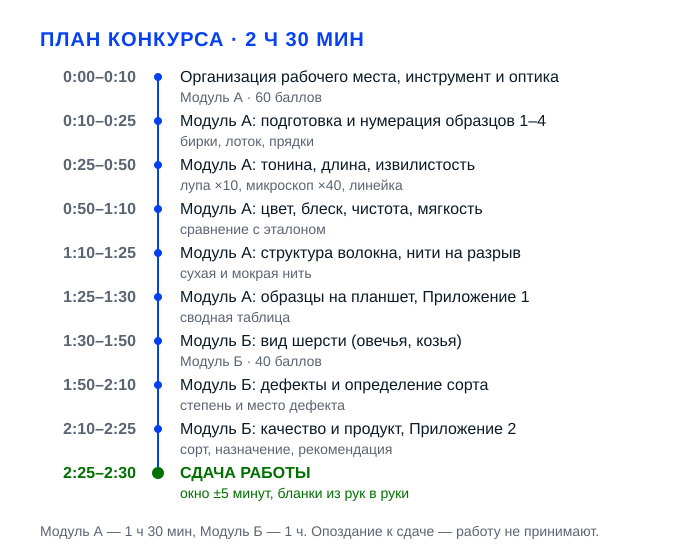
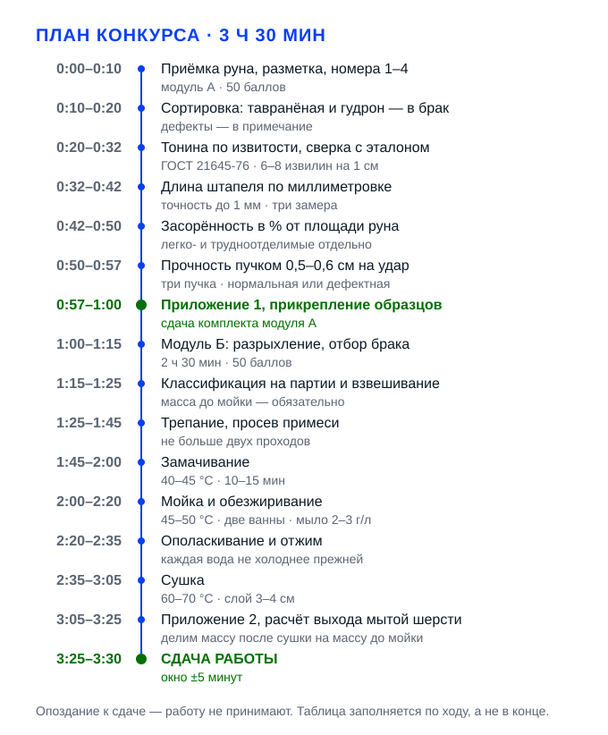
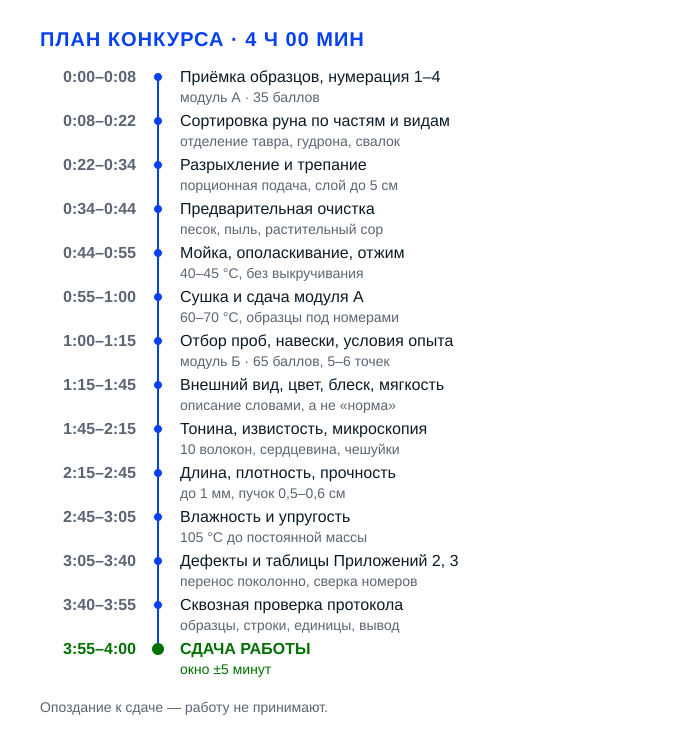

Контролер качества шерсти (Р)
Задания ниже — официальные файлы «Абилимпикс» (источник: abilympics-russia.ru), разложенные по категориям. Решения написаны по тексту задания, регламенту и критериям оценки; в них указано, что именно проверяет эксперт.
Школьник
14–16 лет, базовый уровень заданияВыдержка из официального конкурсного задания: страницы, относящиеся к категории «Школьник» (стр. 7–9 источника).
Пошаговое решение
На чемпионате по компетенции «Контролер качества шерсти» школьнику дают четыре образца шерсти и несколько образцов шерстяной ткани, а за 2 часа 30 минут нужно пройти путь настоящего приёмщика сырья: разложить и пронумеровать образцы, измерить тонину, длину и извилистость, оценить цвет, блеск и чистоту, проверить прочность нити сухой и мокрой, найти дефекты и определить сорт. Работа идёт в два модуля: Модуль А — экспериментальные работы с шерстью, 1 час 30 минут и 60 баллов, Модуль Б — контроль качества, 1 час и 40 баллов. Главное, что оценивают эксперты: измеримость каждого вывода и умение объяснить, почему шерсть получила именно такой сорт и в какое изделие её пустят. Поэтому таблица заполняется по ходу работы, а не в конце, и каждое число подкреплено замером.

Задача 1. Провести экспериментальные работы с образцами шерстиМодуль А · 60 баллов · 1 ч 30 мин
Модуль А приносит 60 из 100 баллов, и почти все они добываются руками: пока вы не разложили прядку, не посмотрели в лупу и не разорвали нить, оценивать нечего. Работа выстроена так, чтобы к концу полутора часов у вас на планшете лежали четыре подписанных образца, а в Приложении 1 стояли восемь показателей по каждому из них. Порядок операций взят из конкурсного задания и менять его не нужно: сначала организация места и нумерация, потом измерения, затем оптика и испытание нитей, и только в конце оформление и таблица.
Действие 1.1. Организовать рабочее место, инструмент и оптику
Шаг 1.1.1
Начинаем не с образцов, а со стола: протираем сухой салфеткой рабочую поверхность, убираем всё лишнее, ставим лампу слева и чуть впереди, если работаете правой рукой, и справа, если левой — так тень руки не падает на лоток с шерстью. Проверяем, что свет ложится на рабочую зону, а не бьёт в глаза, и что между вашим столом и соседним остаётся свободный проход шириной около 1,5 метра. Сумку, куртку и телефон убираем под стол или в отведённое место, чтобы они не мешали и не попадали в кадр при оценке.
Организация рабочего места — первая строка в листе оценки Модуля А, и проверяется она измеримо: освещённость не менее 300 люкс на рабочей зоне, свободная площадь, отсутствие посторонних предметов. Логика простая: тонину вы сравниваете с эталоном, а цвет и блеск оцениваете глазом, и при плохом свете разница между полутонкой и грубой шерстью исчезает. Проход в 1,5 метра — требование безопасности, и его соблюдение тоже входит в оценку.
Сядьте на своё место и посмотрите на стол глазами эксперта: поверхность чистая и сухая, лампа светит на лоток, локти не свисают с края, вокруг образцов есть свободные 10–15 сантиметров с каждой стороны. Тень от вашей руки при письме не должна накрывать место, где лежит шерсть.
Типичная ошибка — сразу разложить образцы и только потом искать, куда поставить лупу и линейку: инструмент оказывается на шерсти, прядки сдвигаются, а нумерация теряется. Вторая ошибка — работать при верхнем общем свете, без местной лампы: цвет и блеск вы оцените неверно и потеряете баллы по двум критериям сразу.
Эксперт обходит площадку в первые минуты модуля и фиксирует состояние стола до начала работы, а затем возвращается к нему в середине модуля — смотрит, не превратился ли стол в склад обрезков и бумаги.
Шаг 1.1.2
Надеваем халат или фартук, убираем волосы под косынку или резинку, снимаем часы, кольца и браслеты, ногти должны быть коротко подстрижены. Руки моем с мылом и вытираем насухо, потому что шерсть мгновенно впитывает влагу и жир с пальцев, а мокрое волокно тянется иначе, чем сухое. Длинные рукава подворачиваем выше запястья: ими вы сметаете прядки со стола и цепляете волокна при разрыве нити.
Шерсть — ворсистый материал, она собирает на себя всё: волос, пыль, ворс с одежды, и посторонние волокна в образце искажают результат измерения тонины и длины. Кроме того, чистота одежды и рук входит в блок санитарно-гигиенических требований, который оценивают отдельно от измерительной части. На площадке образцы лежат открыто, и одно упавшее с рукава волокно может «переехать» из образца № 2 в образец № 3.
Поднимите руки на уровень глаз: волос не выбивается, рукава не свисают, украшений нет, ладони сухие. Проведите пальцем по тыльной стороне кисти — если остаётся влажный след, вытрите руки ещё раз и только потом беритесь за образцы.
Самая частая ошибка — работать в вязаном свитере или в шерстяной кофте: с них летит ворс, и вы сами загрязняете образцы, которые должны оценивать. Вторая — трогать шерсть влажными руками после мытья: волокно слипается, извитость «садится», и показатель приходится мерить заново.
Эксперт смотрит на руки и одежду при выдаче образцов и потом — в момент работы с лупой: именно там видно, касается участник оптики грязными пальцами или нет.
Шаг 1.1.3
Раскладываем инструмент в том порядке, в котором будете им пользоваться, слева направо: пинцет, препаровальная игла, ножницы, миллиметровая линейка, лупа на подставке, затем лоток для прядок и стакан с водой комнатной температуры 20–25 °C. Ближе к себе кладём бланк Приложения 1, карандаш и ластик, а также бирки с номерами и узкий скотч для крепления. Всё, что не нужно в первые пять минут — зажимы, запасные салфетки, — убираем на край стола, но в пределах видимости.
Порядок инструмента экономит время: на Модуль А отведено 1 час 30 минут, и из них на восемь операций приходится и подготовка, и измерения, и оформление образцов. Когда линейка лежит под лотком, вы тратите драгоценные минуты на поиски, а прядка тем временем подсыхает и меняет извитость. Кроме того, аккуратная раскладка — часть критерия организации работы, до 5 баллов в оценочном листе.
Прогоните в голове последовательность: взять прядку, разложить, измерить тонину, длину, извитость, записать. Каждый предмет должен оказываться под рукой без того, чтобы вставать или тянуться через весь стол. Проверьте, что стакан с водой стоит отдельно от бланка — одно неосторожное движение заливает записи.
Инструмент, сложенный в кучу в центре стола, приводит к тому, что участник ищет линейку под прядками и сдвигает уже подписанные образцы. Отдельная ошибка — поставить воду рядом с бланком: капли размывают карандашные записи, и таблицу приходится переписывать в конце модуля, когда времени уже нет.
Эксперт оценивает рациональность раскладки в первые две-три минуты и отдельно отмечает, пользуется ли участник инструментом по назначению или подручными средствами.
Шаг 1.1.4
Проверяем оптику до того, как поднести к ней первое волокно: у лупы протираем линзу мягкой салфеткой, включаем подсветку и убеждаемся, что она работает; у микроскопа проверяем, что предметный столик чистый, револьвер переключается с увеличения ×10 на ×40 без заеданий, а зеркало или лампа дают ровный свет без тёмных краёв. Готовим два-три чистых предметных стекла и покровных, ставим рядом пипетку с водой.
На Модуле А нужно увидеть чешуйчатый слой волокна и найти мелкие дефекты — сечку, переслед, ость, — а это размеры в десятки микрон. Мутная линза или сбитая настройка света превращают исследование в угадывание, и в таблице появляется запись «структура не определена», которая сразу снимает баллы за microscopическую часть. Проверка оптики занимает минуту, а спасает целый блок оценки.
Посмотрите на ноготь или на волосок собственной руки через лупу при рабочем увеличении: изображение должно быть резким, без радужных ореолов, а подсветка — давать ровное пятно света. Если видите муть или пятна, линзу надо протереть ещё раз, а не крутить фокус.
Частая ошибка — крутить фокусировку на грязной линзе: участник считает, что «не настраивается», и переходит на глазную оценку, теряя точность. Вторая ошибка — брать стекло за рабочую поверхность пальцами: на нём остаётся жировой след, и волокно «плывёт» в собственной тени.
Эксперт подходит в момент первого препарата и смотрит, умеет ли участник держать лупу на расстоянии 2–3 сантиметра от образца и не касается ли оптикой ворса.
Шаг 1.1.5
Берём бланк Приложения 1 и подписываем его до начала измерений: номер участника, дата, категория. Дальше готовим черновик — половину листа или отдельную карточку, где столбцами идут номера образцов 1, 2, 3, 4, а строками показатели: тонина, длина, извитость, цвет, чистота, прочность, блеск, дефекты. Такая заготовка позволяет писать результат сразу после измерения, пока прядка ещё в руках, и не возвращаться к образцу второй раз.
Итог Модуля А — сводные данные в таблице, и именно таблица приносит основную часть из 60 баллов. Если заполнять её в конце, по памяти, неизбежно путаются номера: измерения делались на четырёх образцах, а показателей восемь, и удержать в голове 32 значения невозможно. Заготовка превращает работу в последовательное заполнение, где каждое число попадает в свою клетку.
В черновике четыре столбца и восемь строк, подписанных заранее. Проверьте, что для каждого показателя указана единица измерения — микроны, миллиметры, число извилин на сантиметр, — иначе в чистовике появятся записи «толстая» и «средняя», которые эксперт не сможет оценить измеримо.
Ошибка новичка — вести записи на отдельных клочках и «потом перенести»: к концу модуля клочки теряются или перепутываются, и участник честно, но неверно приписывает данные образцу № 2 вместо № 4. Вторая ошибка — подписать бланк в последние минуты, когда эксперт уже начал приёмку.
Эксперт смотрит на бланк в середине модуля: заполняется он по ходу или остаётся пустым до финала — это сразу показывает, насколько участник владеет порядком работы.
Действие 1.2. Подготовить и пронумеровать образцы шерсти и ткани
Шаг 1.2.1
Принимаем четыре образца шерсти и образцы шерстяной ткани, не разворачивая их на весу: каждый образец кладём на отдельную салфетку и осматриваем сверху, не растягивая. Смотрим, цела ли прядка, нет ли на ней явных комков, репья, следов подмокания, и отмечаем, какой образец выглядит светлее, а какой темнее — это первое впечатление потом пригодится при сравнении с эталоном цвета.
В задании прямо сказано: подготовить образцы шерсти и шерстяной ткани, и только после этого нумеровать. Осмотр до начала работы нужен, чтобы отделить дефекты сырья от собственных ошибок: если на образце уже лежит колтун, вы не станете объяснять его своей неаккуратностью. Кроме того, так вы фиксируете исходное состояние — а его оценивают при приёмке.
Каждый образец лежит на своей салфетке, прядки не пересекаются, на столе нет осыпавшихся волокон между ними. Проверьте, что вы можете назвать признак, по которому образцы отличаются друг от друга с первого взгляда — цвет, длина, плотность.
Разложить все четыре образца вплотную друг к другу — и через десять минут волокна с краёв перепутаются, а вы уже не сможете доказать, что дефект был в образце № 3, а не появился из соседнего. Вторая ошибка — трясти образец над столом, чтобы «распушить»: он осыпается, и часть волокон теряется.
Эксперт сверяет количество образцов на столе с комплектом при выдаче и отмечает, сохранена ли их целостность к моменту первой операции. Отдельно он смотрит, где лежат образцы ткани: если они свалены в общую кучу с шерстью, это сразу минус за организацию.
Шаг 1.2.2
От каждого образца пинцетом отделяем две-три небольшие прядки толщиной примерно с карандаш и длиной 5–7 сантиметров, беря их не с края, а из середины штапеля. Прядку не выдёргиваем, а аккуратно вытягиваем за основание, чтобы не оборвать волокна, и слегка распушиваем пальцами, разводя волокна в стороны. Отобранные прядки раскладываем на лотке напротив соответствующего образца.
Из одной прядки вы будете измерять тонину, длину и извитость, поэтому она должна быть representative: волокна из середины штапеля ровнее, чем с края, где они обычно короче и грубее. Обрыв волокон при выдёргивании искажает длину — вы измеряете уже не шерсть, а то, что осталось от неё после вашего усилия. Две-три прядки нужны, чтобы при повторном измерении было чем перепроверить результат.
Прядка держится в пальцах как кисточка, волокна идут параллельно и не путаются в узел. На лотке рядом с каждым образцом лежит своя прядка, и вы можете показать, откуда именно она взята. Если волокна обрываются в руке — берите следующую прядку ближе к основанию штапеля.
Выдёргивать прядку резким движением: концы волокон рвутся, и при измерении длины получается заниженный результат, а за ним — неверная оценка сорта. Вторая ошибка — распушить прядку, растирая её между ладонями: волокна сваливаются, извитость исчезает, и вы теряете показатель упругости.
Эксперт следит за тем, как участник берёт прядку: пинцетом за основание или щипком за середину — второй способ он сразу отмечает как нарушение методики отбора.
Шаг 1.2.3
Нумеруем образцы цифрами от 1 до 4 строго по заданию: пишем номер мягким карандашом на бирке из малярного скотча или на полоске бумаги, а бирку крепим к салфетке рядом с образцом, но не к самой шерсти. Цифру ставим крупно, высотой не меньше сантиметра, и дублируем тем же номером на лотке с прядками, чтобы соответствие читалось с расстояния вытянутой руки.
Нумерация от 1 до 4 — отдельный пункт конкурсного задания, и она нужна не для красоты: все восемь показателей и оба приложения привязаны к номерам. Ошибка в нумерации обнуляет работу целиком, потому что эксперт сверяет ваши выводы с эталонными значениями по конкретному образцу. Крепление бирки рядом, а не на шерсти, сохраняет волокно неповреждённым для измерения.
Пройдите взглядом по столу слева направо: 1, 2, 3, 4 — без пропусков и повторов, бирки не закрывают волокна, номера читаются без наклона. Сверьте, что номер на бирке совпадает с номером столбца в черновике.
Писать номер шариковой ручкой прямо на прядке: чернила растекаются по волокну, и участок приходится вырезать, а образец становится короче. Вторая ошибка — подписать бирки «на глаз» и перепутать порядок, начав нумерацию справа: тогда вся таблица оказывается сдвинутой на один номер.
Эксперт проверяет нумерацию перед заполнением таблицы и отдельно — совпадает ли она с порядком образцов на эталонном столе. Если номер написан на самой прядке, эксперт отмечает это как нарушение: волокно повреждено, и измерять его уже нельзя.
Шаг 1.2.4
Раскладываем образцы на лотке в один ряд слева направо с промежутком 3–4 сантиметра, так чтобы каждый можно было взять, не задев соседний. Образцы шерстяной ткани кладём отдельным рядом ниже, потому что с ними будет другая операция — вытягивание нитей. Рядом с каждым образцом ставим его прядку и бирку, а инструмент — линейку, лупу, пинцет — держим выше лотка, в свободной зоне.
Свободные промежутки между образцами нужны физически: чтобы измерить длину, прядку надо выложить на линейку, и если соседний образец лежит вплотную, вы неизбежно сдвинете его. Разделение шерсти и ткани — тоже требование методики: волокна ткани дают ворс, который оседает на шерсти и меняет её цвет и чистоту, а эти два показателя оцениваются визуально.
Между образцами проходит палец, при переносе прядки на линейку соседние остаются на месте. Ткань лежит отдельным рядом, на шерсти нет ни одной тканой нити. Лоток стоит так, что вы видите все четыре образца одновременно, не поворачивая головы.
Сложить образцы стопкой «чтобы не мешали»: шерсть сваливается под весом, извитость теряется, а при разборе стопки номера путаются. Вторая ошибка — держать ткань рядом с шерстью и вытягивать нити над лотком: обрывки нитей прилипают к прядкам и потом выдаются за дефект образца.
Эксперт оценивает раскладку как часть организации работы: видно ли с одного взгляда, где какой образец, и не приходится ли участнику разбирать завалы, чтобы добраться до нужного.
Шаг 1.2.5
Фиксируем раскладку так, чтобы её можно было восстановить: в черновике рисуем четыре прямоугольника и подписываем под ними номера в том порядке, в котором образцы лежат на столе, а также коротко отмечаем их признаки — «светлый, длинный», «тёмный, с репьём». Если разрешено пользоваться телефоном для фотографии рабочего места, делаем один снимок сверху, но только до начала измерений и не отвлекаясь.
За конкурс образцы придётся сдвигать десятки раз: выкладывать на линейку, подносить к лупе, прикреплять к планшету. Каждый сдвиг — риск перепутать номера, а исправление ошибки нумерации в конце стоит всей таблицы. Схема в черновике и короткие словесные метки дают возможность вернуть образец на место за две секунды и не пересматривать всю раскладку.
Закройте глаза, откройте и посмотрите на стол: порядок совпадает с тем, что нарисовано в черновике. Затем сдвиньте второй образец на десять сантиметров и верните по схеме — если получилось без раздумий, фиксация работает.
Полагаться на память: после третьего переноса прядок участник уверенно показывает не тот образец, и в таблице данные образца № 1 оказываются в столбце № 4. Вторая ошибка — фотографировать уже в процессе, когда часть образцов лежит на линейке и в кадр не попала.
Эксперт замечает наличие схемы или меток и в спорной ситуации просит участника объяснить, какой образец где лежит — точный ответ подтверждает, что работа велась осознанно.
Действие 1.3. Определить тонину, длину и извитость волокна
Шаг 1.3.1
Берём прядку образца № 1, кладём её на белую салфетку или лист бумаги и разрыхляем у основания препаровальной иглой, разводя волокна в стороны и укладывая их параллельно друг другу. Разложенную прядку прикрываем стеклом или слегка прижимаем пинцетом, чтобы волокна не скручивались обратно. Так же готовим прядки остальных трёх образцов и работаем с ними по очереди, не смешивая.
Тонину, длину и извитость невозможно оценить на скомканной прядке: волокна перекрывают друг друга, и вы видите не отдельную шерстинку, а общую массу. Ровная параллельная укладка на белом фоне — условие, при котором вообще различимы извилины и чешуйки, а белый фон исключает влияние цвета бумаги на оценку оттенка шерсти. Это подготовительная операция, но именно от неё зависит точность всех последующих измерений.
Волокна лежат раздельно, между ними виден просвет фона, прядка не скручена в жгут. Проверьте, что вы можете провести взглядом по одному волокну от основания до кончика — если взгляд теряется, прядка разложена плохо.
Растирать прядку между пальцами вместо разрыхления иглой: волокна сваливаются в комок, извитость пропадает, и показатель приходится ставить «на глазок». Вторая ошибка — раскладывать прядку на цветной бумаге или на газете: фон искажает цвет, а текст на просвет мешает считать извилины.
Эксперт смотрит на подготовку препарата и отмечает, разрыхляет участник волокна инструментом или обходится пальцами, теряя извитость. Он также смотрит, на чём разложена прядка: белый фон или цветная бумага — это влияет на оценку цвета, которую вы дадите позже.
Шаг 1.3.2
Измеряем тонину — толщину волокна — под лупой с увеличением ×10 или под микроскопом на ×40, используя метод проекции: волокно кладём на предметное стекло, каплю воды и покровное стекло сверху, и сравниваем ширину тёмной полосы с делениями окуляр-микрометра. Меряем не одно волокно, а 10–15 штук из разных мест прядки, и записываем среднее значение в микронах вместе с крайними величинами.
Тонина — главный показатель качества шерсти: от неё зависит и мягкость, и то, пойдёт волокно на тонкую ткань или на ковёр. Ориентиры для сравнения такие: тонкая шерсть около 15–25 мкм, полутонкая 25–31 мкм, полугрубая 31–40 мкм, грубая 40–67 мкм и выше. Одно измеренное волокно ничего не доказывает, потому что в одной прядке встречаются и тонкие, и грубые волокна, поэтому и нужно среднее по 10–15 замерам.
Среднее значение попадает в диапазон одного из четырёх типов, а разброс между крайними замерами не превышает примерно 10 мкм. Если два волокна дали 18 и 55 мкм — вы измеряли разные слои штапеля или захватили ость, такие замеры надо повторить отдельно.
Измерить одно волокно и записать его как тонину образца: результат случайный, и сорт определяют неверно. Вторая ошибка — считать ширину волокна по краю тени, а не по самому волокну: тень добавляет 3–5 мкм, и тонкая шерсть «превращается» в полутонкую, теряя балл за правильность вывода.
Эксперт проверяет, сколько волокон измерено, и просит показать, как участник наводит фокус: по этому видно, работает он с проекцией или просто смотрит в окуляр.
Шаг 1.3.3
Определяем длину волокна: выкладываем прядку вдоль миллиметровой линейки, придерживая её пинцетом за основание, и измеряем от основания до кончика с точностью до 1 мм. Делаем пять замеров по разным волокнам, отдельно отмечаем длину штапеля — всей прядки целиком — и вычисляем среднюю длину. Записываем оба числа, потому что штапель и отдельное волокно характеризуют шерсть по-разному.
Длина волокна определяет, пойдёт шерсть на камвольную пряжу или только на суконную и валяную: из короткого волокна тонкую прочную нить не спрясть. Ориентиры: тонкая шерсть обычно 55–90 мм, грубая — от 100 до 250 мм. Измерение с точностью до миллиметра требуется потому, что разница между сортами внутри одного типа может составлять всего 10–15 мм.
Все пять замеров отличаются друг от друга не более чем на 20–25 мм, средняя длина согласуется с длиной штапеля. Проверьте, что нулевая отметка линейки действительно совпала с основанием волокна, а не с краем прядки.
Натягивать прядку на линейке: волокно растягивается и пружинит, результат завышается на 5–10 мм. Вторая ошибка — измерять от обрезанного края, если прядку брали ножницами: вы меряете не шерсть, а длину вашего отреза.
Эксперт смотрит на положение линейки относительно волокна: лежит ли она параллельно, не сдвигается ли прядка в момент отсчёта. Он может попросить повторить замер при себе и сравнить с записью: совпадение подтверждает, что число получено измерением, а не угадано.
Шаг 1.3.4
Считаем извитость: на разложенной прядке отмеряем линейкой один сантиметр и считаем на нём число полных извилин — подъёмов и спусков волокна. Повторяем подсчёт на трёх участках прядки и берём среднее; отдельно описываем форму извилины — петлистая, кольцевая, штопорообразная — и её равномерность по всей длине волокна. Записываем среднее число извилин на сантиметр и отдельно отмечаем, на каких участках подсчёт расходится сильнее всего — обычно это основание и кончик прядки.
Извитость — это прямой индикатор тонины и одновременно показатель упругости и теплоизоляционных свойств: тонкая шерсть даёт 6–9 извилин на сантиметр, грубая — всего 2–3. По характеру извилины контролёр определяет тип шерсти органолептически, не прибегая к микроскопу, и на чемпионате это отдельный навык, который оценивают измеримо — числом извилин.
Среднее число извилин согласуется с измеренной тониной: чем толще волокно, тем меньше извилин. Если тонина 20 мкм, а извилин всего две — пересчитайте, скорее всего вы захватили в подсчёт участок с распрямлённым волокном.
Считать извилины на глаз по всей прядке: числа получаются случайными и не воспроизводятся при повторном подсчёте. Вторая ошибка — не отметить неравномерность: участок с редкой извилиной у основания штапеля означает переслед, а это дефект, который надо фиксировать отдельно.
Эксперт просит посчитать извилины при нём на выбранном участке и сверяет результат с записью в таблице — расхождение сразу видно. Он просит показать участок с самой редкой извилиной: именно там чаще всего и обнаруживается переслед.
Шаг 1.3.5
Записываем полученные значения в черновик сразу после каждого образца: тонину в микронах, длину в миллиметрах, извилистость числом извилин на сантиметр и словесной характеристикой формы. Перед переходом к следующему образцу повторяем одно контрольное измерение тонины на новом участке прядки: если оно отличается от среднего больше чем на 5 мкм, перемеряем всю серию.
Повторное измерение — это защита от случайной ошибки: прибор и глаз дают разброс, а в таблицу должно попасть значение, которое вы сами сможете объяснить эксперту. Правило «записал — проверь» экономит время в конце модуля, когда на переделку уже не остаётся минут, и снимает риск, что один неверный замер утянет за собой неверное определение сорта в Модуле Б.
В черновике у каждого образца стоят три числа с единицами измерения и контрольный замер рядом со средним. Разница между ними не больше 5 мкм, длина не «прыгает» на десятки миллиметров от образца к образцу без объяснения.
Писать только среднее, не сохраняя крайние значения: при вопросе эксперта участник не может показать, откуда взялась цифра. Вторая ошибка — записывать результаты после всех четырёх образцов сразу, по памяти: числа сливаются, и в таблице появляются одинаковые значения там, где шерсть явно разная.
Эксперт выборочно сверяет две-три записи с реальными замерами на столе и оценивает, воспроизводится ли результат при повторном измерении. Он также смотрит, в какой момент сделана запись: сразу после замера или в конце, когда числа уже смешались в памяти.
Действие 1.4. Оценить цвет, блеск, чистоту, мягкость и упругость
Шаг 1.4.1
Определяем цвет на белом фоне при рассеянном дневном или нейтрально-белом свете: прядку кладём рядом с белой полоской бумаги и сравниваем оттенок — белая, светло-серая, серая, тёмно-серая, цветная. Смотрим не на один участок, а на всю прядку целиком, отдельно отмечая потемнения у основания штапеля, которые возникают от грязи и жиропота и не являются природным цветом волокна.
Цвет важен для окрашивания: белую шерсть можно выкрасить в любой тон, а тёмную — только в тёмный, поэтому белая стоит дороже и оценивается выше. Потемнение у основания штапеля — это не порода, а загрязнение, и его надо описать как дефект чистоты, а не цвета, иначе эксперт увидит, что участник не различает два разных показателя.
Вы можете назвать оттенок одним словом из шкалы и показать, с чем сравнивали. Если при взгляде под другим углом оттенок меняется на противоположный, значит свет окрашен — отойдите к окну или включите нейтральную лампу.
Оценивать цвет под жёлтой лампой накаливания: белая шерсть кажется кремовой, а серая — коричневатой. Вторая ошибка — записывать «светлая» без шкалы: эксперт не может сопоставить такую запись с эталоном, и балл за показатель снимается.
Эксперт сравнивает вашу запись с эталонной картой цвета и смотрит, различает ли участник природный оттенок и загрязнение. Если участник называет оттенок, но не может показать, с чем сравнивал, балл за показатель снижается.
Шаг 1.4.2
Оцениваем блеск: прядку держим на уровне глаз и медленно наклоняем к источнику света под углом примерно 30–45 градусов, наблюдая, как по волокнам пробегает светлая полоса. Отмечаем характер блеска — люстровый, то есть сильный и шелковистый, полулюстровый, слабый, или матовый, — и проверяем, одинаков ли он по всей длине волокна. Если блеск неравномерный, отмечаем это отдельно: тусклые участки у основания штапеля часто оказываются началом повреждения волокна, а не особенностью породы.
Блеск — признак здоровья волокна и его способности отражать свет: у шерсти с повреждённой кутикулой он тускнеет, а у грубой ости, наоборот, становится резким и стеклянным. Для готового изделия блеск значит привлекательный внешний вид, и в требованиях к качеству он указан отдельной характеристикой. Оценка делается именно под углом, потому что при прямом свете разница между матовой и полулюстровой шерстью почти не видна.
Светлая полоса при наклоне видна отчётливо и перемещается по волокну, а не мигает рывками. Сравните два образца рядом: если блеск у них одинаков, а вы записали разный — пересмотрите оценку. Если блеск «прыгает» вдоль волокна, часть волокна повреждена — это стоит отметить в графе дефектов.
Смотреть на прядку сверху вниз, при свете, падающем за спину: блеск не проявляется, и вся шерсть кажется матовой, из-за чего теряется балл за показатель. Вторая ошибка — путать блеск с жирностью: жиропот даёт сальный отлив, который исчезает, если прядку слегка встряхнуть.
Эксперт наблюдает за наклоном прядки к свету и за тем, отделяет ли участник блеск от жирного налёта. Он просит наклонить прядку при нём и назвать угол, под которым блеск виден лучше всего.
Шаг 1.4.3
Оцениваем чистоту: раскладываем прядку на белом фоне и смотрим, сколько в ней посторонних включений — растительных остатков, репья, семян, песка, пыли, обрывков сена. Определяем долю засорённых участков визуально, в процентах от площади прядки, и отдельно описываем, какие примеси отделяются легко, а какие сидят в волокне плотно и требуют разборки руками.
Чистота напрямую влияет на выход чистого волокна: из засорённой шерсти после мойки и трепания получается меньше пригодного сырья, а значит, выше цена обработки. В задании засорённость определяется визуально — какой процент площади она занимает, — и это единственный способ оценки без лабораторных весов. Растительные примеси, кроме того, путаются в прядке и мешают прядению.
Вы можете показать пальцем участок с примесями и назвать его долю в процентах — например, «примерно четверть площади, в основном репей». На белом фоне видно каждое семечко, а на тёмном фоне мелкие примеси теряются.
Писать «чистая» или «грязная» без цифры: показатель не измерим, и эксперт не может его оценить. Вторая ошибка — стряхивать примеси перед осмотром: вы удаляете то, что должны были зафиксировать, и образец выглядит лучше, чем был при приёмке.
Эксперт сверяет ваш процент с эталонным образцом засорённости и смотрит, различает ли участник легко- и трудноотделимые примеси. Он также смотрит, не стряхивал ли участник примеси перед осмотром: исчезнувший репей означает, что образец испорчен.
Шаг 1.4.4
Проверяем мягкость и упругость на ощупь: прядку кладём на ладонь и проводим по ней тыльной стороной пальцев, сравнивая попарно образцы 1 и 2, затем 3 и 4 — так разница чувствуется лучше, чем при осмотре по одному. Затем сжимаем прядку в кулаке на 3–5 секунд, отпускаем и смотрим, за какое время она восстановит объём: упругая шерсть распрямляется за 2–3 секунды.
Мягкость и упругость — два пункта задания, которые проверяются именно на ощупь, и они прямо связаны с тониной: тонкое волокно мягче, но при этом тонкая шерсть с хорошей извилиной остаётся упругой. Способность восстанавливать форму определяет, будет ли изделие держать форму и греть: ватная, потерявшая упругость шерсть сваливается в первый же сезон носки.
После сжатия прядка расправилась, на ней не осталось заломов и комков. Между двумя образцами разница описывается словами «мягче — жёстче» и «упруже — ватнее», и вы можете повторить это сравнение через минуту с тем же результатом.
Мять шерсть долго и сильно, сжимая несколько раз подряд: волокно сваливается от ваших рук, и упругость падает на глазах — вы измеряете уже не образец, а последствия своего воздействия. Вторая ошибка — оценивать мягкость мокрыми или жирными пальцами.
Эксперт просит повторить сравнение при нём: смотрит, сравнивает участник попарно или оценивает каждый образец изолированно, теряя чувствительность. Он отдельно отмечает, не сваливает ли участник прядку многократным сжатием: после трёх-четырёх подряд упругость падает у любой шерсти.
Шаг 1.4.5
Ищем дефекты визуально и описываем каждый: следы таврения, то есть клеймо на шерсти, загрязнение гудроном или дегтем, свалянность в колтуны, сечку — короткие обрубленные волокна, признаки поражения молью в виде проеденных дорожек. Каждый найденный дефект отмечаем на бирке словами и, если можно, обводим участок ниткой, чтобы эксперт увидел то же место, что и вы.
Тавро и гудрон относятся к дефектам, которые делают шерсть непригодной для переработки в этом участке, и по правилам сортировки такие места вырезают. Свалянность и сечка снижают сорт, а моль — прямой признак нарушения хранения. В таблице дефекты идут отдельной строкой, и за точное описание с указанием места дают баллы, а за общее слово «есть дефекты» — нет.
Каждый дефект привязан к номеру образца и к конкретному месту, вы можете показать его пальцем или ниткой. Проверьте, что вы не приняли за дефект природную особенность — например, жёлтый кончик волокна или тёмную ость.
Ограничиться словом «загрязнена»: эксперт видит конкретные следы тавра и понимает, что участник их не распознал, а балл за определение дефектов снимается. Вторая ошибка — вырезать дефектный участок до осмотра: вместе с дефектом исчезает и доказательство.
Эксперт подходит к столу и просит показать найденные дефекты — проверяет точность привязки к образцу и правильность названия. Если дефект назван неверно — например, свалянность вместо сечки, — эксперт фиксирует ошибку в распознавании, а не только отсутствие ответа.
Действие 1.5. Изучить структуру волокна, испытать нити и оформить работу
Шаг 1.5.1
Готовим препарат: на чистое предметное стекло кладём два-три волокна из прядки, капаем каплю воды и накрываем покровным стеклом, стараясь не завести под него пузырёк воздуха. Сначала смотрим под лупой на увеличении ×10 — видны общий ход волокна, извилина и посторонние включения, затем переводим микроскоп на ×40 и рассматриваем чешуйчатый слой: у шерсти чешуйки лежат как черепица, у грубого волоса они крупнее, у пуха мельче и плотнее прижаты.
Именно строение чешуйчатого слоя объясняет, почему шерсть валяет и почему она тёплая: чешуйки сцепляются друг с другом и удерживают воздух. По наличию сердцевины — сплошного тёмного канала по центру — отличают ость и мёртвый волос от нормального пуха, а это уже диагностика дефекта. Работа с лупой и микроскопом — отдельный пункт задания, и его выполнение видно эксперту по наличию препарата на стекле.
На препарате видны отдельные волокна с чётким контуром чешуек, пузырьков воздуха нет. Вы можете сказать, есть ли в волокне сердцевина, и показать её эксперту. Если изображение расплывается — волокон слишком много или мало воды, препарат надо переделать.
Класть под стекло целую прядку: получается тёмное пятно без структуры. Вторая ошибка — смотреть сухое волокно без воды: оно электризуется, прилипает к стеклу и выглядит как пятно, а чешуйки не читаются.
Эксперт проверяет, приготовлен ли препарат вообще, и просит описать увиденное: ответ «видно волокно» без деталей считается невыполненной операцией. Он также просит назвать увеличение, при котором работали: разница между лупой и микроскопом для оценки структуры существенна.
Шаг 1.5.2
Вытягиваем по две нити из каждого образца шерстяной ткани: берём нить, идущую вдоль кромки, то есть основу, а не косую, и вытягиваем её пинцетом за кончик, не растягивая. Каждую нить укладываем отдельно, подписываем номер образца и разрываем сухую нить руками, придерживая за концы указательным и большим пальцами и разводя их в стороны до момента разрыва.
Испытание на разрыв показывает прочность пряжи, а через неё — качество волокна: короткое или повреждённое волокно даёт нить, которая рвётся при небольшом усилии. Правило брать нить вдоль основы важно потому, что уточная нить часто слабее и тоньше, и по ней нельзя судить о прочности ткани. Сухое испытание — база для сравнения: без него вы не узнаете, насколько прочность меняется при намачивании.
Нить ровная, без узлов и петель, длина рабочего участка примерно 5–6 сантиметров. Разрыв происходит посередине, а не у самых пальцев: если нить рвётся у захвата, вы пережимали волокно ногтями. Сравните две нити из одного образца между собой: если одна рвётся заметно легче другой, значит, при вытягивании вы повредили волокна.
Тянуть нить за кромку, не отделив её: половина усилия уходит на вытягивание из ткани, и разрыв происходит не там, где вы думаете. Вторая ошибка — рвать нить рывком: невозможно почувствовать усилие, и сравнение с мокрой нитью теряет смысл.
Эксперт смотрит, как участник держит нить при разрыве: пальцами за концы или с пережимом посередине, который искажает результат. Он может попросить разорвать нить повторно, чтобы убедиться, что результат воспроизводится.
Шаг 1.5.3
Намачиваем вторую нить того же образца: опускаем её в стакан с водой комнатной температуры 20–25 °C на 30 секунд, вынимаем пинцетом, слегка промокаем бумажным полотенцем, чтобы снять капли, и разрываем точно так же, как сухую — за концы, плавно разводя руки. То же самое повторяем для второго образца ткани и для каждой пары нитей. Мокрую нить не растягиваем и не скручиваем: любое предварительное натяжение снижает результат, и сравнение с сухой нитью становится нечестным.
Шерсть во влажном состоянии теряет часть прочности — обычно от 10 до 25 процентов, потому что вода проникает между чешуйками и ослабляет связи в волокне. Это свойство важно для практики: мокрая шерсть легче рвётся при мойке и валке, поэтому режим стирки подбирают осторожно. В задании прямо требуется определить, изменилась ли прочность нитей при намачивании, то есть сравнение — обязательная часть работы.
Мокрая нить рвётся при заметно меньшем усилии, чем сухая, но не рассыпается в руках на отдельные волокна. Записан вывод по каждому образцу: прочность снизилась сильно, снизилась незначительно или не изменилась.
Держать нить в воде минуту и больше: волокно набухает сверх меры, и результат получается завышенным по потере прочности. Вторая ошибка — не промокнуть нить: капли стекают по пальцам, захват соскальзывает, и вы рвёте нить не усилием, а неловким движением.
Эксперт проверяет, соблюдено ли время намачивания и одинакова ли методика разрыва для сухой и мокрой нити — иначе сравнение некорректно. Он также смотрит, одинакова ли длина рабочего участка у сухой и мокрой нити: при разной длине сравнивать прочность нельзя.
Шаг 1.5.4
Прикрепляем образцы под соответствующими номерами: каждый образец вместе с его прядкой фиксируем на планшете или листе плотной бумаги узкой полоской скотча за края, не затягивая волокна, а сверху или сбоку ставим бирку с номером от 1 до 4. Образцы ткани крепим отдельным рядом, тоже с номерами, и рядом с каждым подписываем результат испытания: «сухая — рвётся легко, мокрая — легче».
Прикреплённые образцы — это то, что эксперт видит при приёмке работы, и именно по ним он проверяет, совпадают ли ваши записи с реальными образцами. Номер, стоящий рядом с образцом, делает таблицу проверяемой: эксперт может взять любой образец и сверить с вашей строкой. Свободное крепление за края сохраняет извитость волокна, а затянутый скотч её распрямляет и портит образец.
Образцы держатся, не сползают при наклоне планшета, волокна не раздавлены скотчем. Все номера читаются, порядок 1–4 совпадает с порядком в черновике и в бланке. Подписанные результаты видны рядом с каждым образцом.
Приклеивать образец по всей площади: волокна прилипают к клеевому слою, и образец превращается в пятно, непригодное для оценки. Вторая ошибка — крепить образцы без номеров «потом подпишу»: в конце модуля соответствие теряется, и вся таблица оказывается без доказательной базы.
Эксперт при приёмке сверяет прикреплённые образцы с таблицей: несовпадение номера или отсутствие образца на планшете снижает балл за оформление. Он проверяет, закреплены ли образцы за края: следы скотча поверх волокон видны сразу и говорят о порче образца.
Шаг 1.5.5
Заполняем Приложение 1 — сводную таблицу Модуля А: по каждому из четырёх образцов вписываем тонину в микронах, длину в миллиметрах, извилистость числом извилин на сантиметр, цвет, чистоту с процентом засорённости, прочность и её изменение при намачивании, блеск, мягкость и упругость, а также найденные дефекты. Пишем карандашом, аккуратно, в каждой клетке с единицей измерения.
Сводные данные в таблице — заявленный результат Модуля А, за который начисляется основная часть из 60 баллов. Таблица проверяется построчно: за каждый заполненный и согласующийся с образцом показатель дают балл, за пустую клетку — нет. Единицы измерения нужны потому, что иначе запись «длина 8» невозможно сопоставить с эталоном — это восемь миллиметров или сантиметров, и от этого зависит сорт.
Все строки заполнены, ни одной пустой клетки, единицы стоят у каждого числа, исправлений и замазки нет. Пройдите таблицу по столбцу: значения по образцам различаются так же, как различаются сами образцы на столе.
Оставлять клетки «по дефектам» пустыми, если ничего не нашли: правильный ответ — запись «дефектов не обнаружено», а пустая клетка читается как невыполненная операция. Вторая ошибка — исправлять число, зачёркивая и надписывая сверху: эксперт не может однозначно прочитать результат.
Эксперт проверяет таблицу вместе с образцами, выборочно задавая вопросы по конкретным клеткам: как получилось число и чем оно подтверждается. Если число в клетке не совпадает с тем, что показывает образец, он просит перемерить при себе.
Задача 2. Провести экспертизу качества и определить сорт шерстиМодуль Б · 40 баллов · 1 ч
Модуль Б — это уже не измерения, а экспертиза: за 1 час нужно назвать вид шерсти, найти и описать дефекты, определить сорт и объяснить, в какое изделие пойдёт каждая прядка. Здесь 40 баллов дают за обоснованность: эксперт спрашивает «почему», и ответ должен опираться на признаки, которые он может увидеть сам. Записи из Модуля А при этом не отменяются — сорт обязан согласовываться с тониной, длиной и прочностью, иначе обе таблицы выглядят недостоверно.
Действие 2.1. Подготовить образцы к экспертизе и определить вид шерсти
Шаг 2.1.1
На Модуле Б работаем с новыми образцами шерсти, поэтому сначала раскладываем их так же, как в Модуле А: на белые салфетки, слева направо, с промежутками 3–4 сантиметра, и подписываем бирками с номерами. Видимый сор — репей, соломинки, песок — аккуратно выбираем пинцетом, не растягивая прядку, а сам образец не моем и не стираем: естественная загрязнённость входит в оценку.
Для экспертизы нужен образец в том виде, в каком он пришёл: если помыть шерсть, вы уничтожите и сведения о засорённости, и жиропот, по которому судят о качестве руна. Выборка видимого сора пинцетом нужна лишь для того, чтобы можно было разложить прядку и рассмотреть волокно, и она не заменяет оценку чистоты. Порядок и нумерация сохраняются те же — от 1 до 4, иначе в Приложении 2 снова возникнет путаница.
Образцы разложены и подписаны, на столе нет осыпавшихся примесей, которые могли перейти с одного образца на другой. Прядка разложена так, что волокна видны по всей длине, а не сбиты в комок. Проверьте также, что бирки не закрывают волокна: под скотчем прядка не рассматривается и не измеряется.
Промывать образец «чтобы лучше рассмотреть»: вода смывает жиропот и часть примесей, и вы уже не можете описать настоящую засорённость. Вторая ошибка — выбросить выбранный сор, не записав, что именно было в образце: в таблице остаётся «чистая», хотя шерсть была с репьём.
Эксперт проверяет образцы на столе и смотрит, сохранено ли их исходное состояние к началу экспертизы. Он также смотрит, не пытался ли участник «улучшить» образец: вымытая шерсть видна по отсутствию жиропота.
Шаг 2.1.2
Сравниваем образцы между собой по трём видимым признакам: длине волокна, характеру извилины и блеску. Раскладываем прядки рядом, один-два образца берём в руки и смотрим на просвет, чтобы увидеть, есть ли внутри прямые толстые волокна — ость. Результат сравнения записываем словами: «длиннее и грубее», «короче и мягче», «с сильным блеском». Отдельно отмечаем, у какого образца волокно самое длинное, а у какого самое тонкое: эти две характеристики чаще всего и решают судьбу партии.
Задание требует отличить разные виды шерсти, прежде всего овечью от козьей, и сделать это можно только сравнением: по отдельности каждая прядка кажется «обычной шерстью», а рядом разница видна сразу. Сравнение по трём признакам экономит время — на Модуль Б отведён 1 час, и из него значительная часть уходит на описание дефектов и заполнение таблицы. Записанные словами наблюдения потом станут обоснованием вывода.
Для каждой пары образцов у вас есть по одному сравнению, и оно воспроизводится: если поменять образцы местами, вывод остаётся тем же. Прямая ость видна на просвет как светлая жёсткая линия среди извитого пуха.
Оценивать образцы по одному, не выкладывая рядом: разница в 3–4 мкм на глаз не улавливается, и все четыре образца получают одинаковое описание. Вторая ошибка — смотреть против света, направленного в глаза: волокно превращается в тёмный силуэт, и блеск оценить невозможно.
Эксперт слушает, как участник обосновывает сравнение: названы ли конкретные признаки или ответ сводится к «этот мягче». Он просит сравнить два конкретных образца при нём и назвать разницу словами.
Шаг 2.1.3
Определяем, где овечья шерсть, а где козья: у овечьей прядка образует штапель — волокна растут пучками и ложатся волной, извилина мелкая и равномерная по всей длине. У козьей пух тоньше и мягче, но рядом с ним всегда идёт прямой жёсткий остевой волос, волокна не образуют штапеля, а свисают косичками, и на ощупь прядка кажется более гладкой и «холодной».
Козий пух ценится выше овечьей шерсти по тонкости, но требует отделения ости — именно поэтому виды различают до оценки сорта. Если назвать козью шерсть овечьей, дальше вся экспертиза пойдёт неверно: вы примените не ту шкалу тонины и не тот набор дефектов. В задании этот пункт стоит отдельно, и он приносит баллы именно за правильное определение вида, а не за красивую формулировку.
Вы можете показать на образце, где лежит остевой волос, и объяснить, почему считаете шерсть овечьей или козьей. Проверьте себя по двум признакам сразу — характеру прядки и наличию ости, — а не по одному.
Определять вид по цвету: и овечья, и козья шерсть бывает белой, серой и бурой, цвет ничего не доказывает. Вторая ошибка — принять свалявшуюся овечью шерсть за козью из-за отсутствия штапеля: колтун разрушает штапель, но ости в нём нет.
Эксперт задаёт вопрос «почему вы так решили» и оценивает ответ по признакам, а не по итоговому слову. Он также просит показать место, где лежит остевой волос: без этого вывод о виде шерсти считается недоказанным.
Шаг 2.1.4
Подтверждаем вывод под лупой: готовим препарат из двух-трёх волокон, как в Модуле А, и смотрим на чешуйчатый слой и наличие сердцевины. У пуха чешуйки мелкие и прижатые, сердцевины нет; у ости чешуйки крупные, иногда видна прерывистая сердцевина; у мёртвого волоса сердцевина сплошная и волокно выглядит тёмным и жёстким. Если в поле зрения попали волокна только одного типа, препарат переделываем: для вывода нужны оба, иначе вы описываете не образец, а случайно выбранную прядку.
Оптическая проверка превращает предположение в доказательство: если вы заявили, что в образце есть ость, вы должны показать её в микроскоп. Для контролёра качества это профессиональная привычка — не доверять первому впечатлению. Кроме того, сплошная сердцевина — признак мёртвого волоса, который не окрашивается и портит готовую ткань, а значит, это ещё и дефект.
На препарате видны волокна двух типов: тонкие с мелкими чешуйками и толстые с крупными. Вы можете показать в окуляр место, где проходит сердцевина, и назвать, к какому типу относится волокно. Проверьте, что ость видна не в единственном экземпляре: единичное толстое волокно может быть случайным, а не характеристикой образца.
Ограничиться осмотром без оптики: ость в тонкой шерсти визуально почти не отличается от пуха, и вывод оказывается случайным. Вторая ошибка — брать для препарата только самые тонкие волокна: ость при таком отборе не попадает в поле зрения, и участник делает вывод «ости нет».
Эксперт смотрит в окуляр вместе с участником и проверяет, умеет ли он сфокусироваться на одном волокне и показать его структуру. Он смотрит, умеет ли участник перевести увеличение с ×10 на ×40, не потеряв выбранное волокно из поля зрения.
Шаг 2.1.5
Записываем вывод по каждому образцу в черновик Приложения 2: вид шерсти, обоснование в одну строку, наличие ости и её доля, общее впечатление о качестве. Формулировки делаем короткими и проверяемыми — «овечья, штапель выражен, ости нет, извилина равномерная», — чтобы по записи можно было вернуться к образцу и повторить проверку. В конце по каждой строке ставим короткую пометку, что именно проверяли: характер прядки, наличие ости или оба признака вместе.
Приложение 2 — результат Модуля Б, и в нём оценивается не только правильность, но и обоснованность: эксперт должен видеть, на каком признаке построен вывод. Короткая проверяемая формулировка позволяет вернуться к любому образцу в конце модуля и защитить вывод, даже если времени на повторный осмотр не останется. Это же правило действует и на производстве при оформлении акта приёмки.
По каждой строке можно задать вопрос «почему» и получить ответ из самой записи. Все четыре образца описаны, ни один не остался без вывода, и записи не повторяют друг друга дословно. Если по строке нельзя ответить на вопрос «почему», формулировку надо переписать, пока черновик ещё перед глазами.
Писать «шерсть овечья» без обоснования: при вопросе эксперта участник ссылается на интуицию, и балл снимается. Вторая ошибка — оставлять одинаковые описания для всех образцов: значит, сравнение не проводилось, и это видно по таблице.
Эксперт выборочно проверяет одну-две строки: просит показать признак, на который ссылается участник. Он выборочно просит показать признак, на который ссылается запись.
Действие 2.2. Найти и описать дефекты шерсти
Шаг 2.2.1
Разбираем дефекты по группам, чтобы ничего не пропустить: сырьевые — засорённость растительными примесями, следы таврения, загрязнение гудроном или дегтем; волоконные — переслед, то есть утонение волокна на каком-то участке, сечка, мёртвый волос, грубая ость; возникшие при хранении и обработке — свалянность в колтуны, подмокание, поражение молью. По каждой группе записываем хотя бы один признак, по которому дефект узнаётся: для переследа — утонение, для сечки — обрубленный конец.
Дефекты ищут по системе, а не наугад: у каждой группы своя причина и своё последствие для переработки, и в таблице они описываются по-разному. Переслед говорит о том, что животное переболело или голодало, сечка — о плохой стрижке, свалянность — о нарушении сушки и хранения. Понимание причины позволяет дать рекомендацию, а именно этого ждёт от контролёра производство.
В черновике выписаны три группы, и по каждой вы прошлись по образцу целенаправленно, а не «осмотрели в целом». Для каждого найденного дефекта указана группа, номер образца и место. Если по какой-то группе вы прошлись формально, вернитесь к ней ещё раз: пропуск целой группы виден по пустой строке в черновике.
Искать дефекты одним общим взглядом: глаз цепляется за яркое — за репей или тёмное пятно, — а переслед и сечка остаются незамеченными. Вторая ошибка — путать группы и записывать моль как волоконный дефект: по записи потом невозможно понять, что именно произошло с шерстью.
Эксперт проверяет, сколько разных дефектов нашёл участник: обычно в комплекте заложено несколько, и один-два распознаются только целенаправленным поиском.
Шаг 2.2.2
Идём по образцам по очереди и на каждом сначала осматриваем поверхность при боковом свете с наклоном листа, затем раздвигаем прядку пальцами или иглой и смотрим у основания штапеля, затем просматриваем волокно на просвет. Каждое подозрительное место отмечаем ниткой другого цвета или маленькой бумажной меткой рядом, но не на волокне. Прядку при осмотре держим пинцетом, а не пальцами: жир с кожи даёт сальный блеск и маскирует утонения.
Боковой свет выявляет то, чего не видно при прямом: утонения, заломы, неровности по длине, — потому что свет ложится на рельеф и даёт тени. Основание штапеля — место, где скапливается грязь и где чаще всего начинается свалянность, а просмотр на просвет показывает сечку и переслед. Три разных способа осмотра дают полную картину и занимают несколько минут на образец.
У каждого найденного дефекта стоит метка, и вы можете показать его эксперту, не разбирая всю прядку заново. Количество меток совпадает с числом записей в черновике. Проверьте, что метки не мешают рассматривать волокно и не закрывают сам дефект.
Осматривать только поверхность: половина дефектов лежит внутри прядки, у основания, и снаружи не видна. Вторая ошибка — метить дефекты прямо на волокне чернилами или булавкой: вы повреждаете образец, и эксперт при проверке видит уже ваш дефект, а не исходный.
Эксперт наблюдает за приёмами осмотра: наклоняет ли участник образец к свету, раздвигает ли прядку, смотрит ли на просвет. Он отмечает, сколько времени участник тратит на один образец: слишком быстрый осмотр означает поверхностность.
Шаг 2.2.3
Оцениваем степень каждого дефекта: для засорённости — долю площади в процентах, для тавра и гудрона — можно ли участок вырезать или он занимает всю прядку, для свалянности — разбирается ли колтун руками или волокна сцеплены намертво, для сечки и переследа — насколько часто они встречаются, на каждом волокне или на единичных. Оценку степени записываем сразу рядом с дефектом, чтобы потом не восстанавливать её по памяти.
Степень дефекта определяет, что с шерстью будут делать дальше: участок с тавром вырезают и выбраковывают, слабую свалянность разбивают на трепальной машине, а сильную отправляют в отходы. Без оценки степени описание остаётся словами «есть дефект», по которым нельзя ни определить сорт, ни дать рекомендацию. В таблице Модуля Б как раз требуется связать дефект и его влияние.
По каждому дефекту есть количественная или однозначная характеристика: процент, доля прядки, число случаев. Формулировка позволяет другому человеку принять по ней то же решение, что и вы. Если вы не можете назвать число или однозначный признак, степень не оценена, и запись надо переделать.
Писать «сильная свалянность» на колтуне, который легко разбирается пальцами: оценка завышена, и рекомендация получается неверной. Вторая ошибка — не указывать площадь засорения: «есть репей» ничего не говорит о выходе чистого волокна.
Эксперт сверяет степень с эталонными образцами и оценивает, различает ли участник лёгкую и сильную степень. Он просит показать дефект с лёгкой степенью и с сильной, чтобы убедиться, что участник различает их на глаз.
Шаг 2.2.4
Формулируем описание дефекта для таблицы так, чтобы в одной строке были вид, место, степень и последствие: например «образец 2 — свалянность в нижней трети прядки, колтун не разбирается, к переработке в тонкую пряжу не годится». Описание пишем в черновик сразу после осмотра образца, пока прядка перед глазами. Формулировку проверяем простым правилом: если из неё нельзя принять решение по партии, она написана слишком обще.
Именно формулировка приносит баллы: эксперт оценивает не только факт находки, но и то, умеет ли участник выразить её производственным языком. Связка «дефект — последствие» показывает, что участник понимает технологию, а не просто перечисляет увиденное. Такая запись потом почти без изменений переходит в Приложение 2 и в устный ответ.
Каждая строка отвечает на четыре вопроса: что, где, насколько сильно, к чему это приводит. Строки не дублируют друг друга и не содержат слов «плохая шерсть» без пояснения. Прочитайте строку вслух: она должна звучать как запись в акте приёмки, а не как заметка для себя.
Ограничиваться названием дефекта: «сечка» без указания места и степени не даёт возможности оценить его влияние. Вторая ошибка — записывать всё в конце модуля: детали забываются, и описания становятся общими.
Эксперт читает таблицу и выборочно задаёт вопрос по последствию: что будет, если такую шерсть пустить в прядение. Он оценивает не только находку, но и точность языка: «сильно загрязнена» без процента считается слабым ответом.
Шаг 2.2.5
Проверяем себя на пропуски: проходим по образцам второй раз, но уже с другим светом — например, поворачиваемся к окну или включаем лампу сбоку, — и отдельно смотрим те места, которые в первый раз остались без внимания: середину прядки, кончики волокон, нижнюю сторону образца. Найденное дописываем в черновик и ставим метку. Затем проходим по черновику и отмечаем, какие дефекты подтвердились, а какие оказались ложными: сомнительные записи лучше убрать, чем оставить.
Повторный осмотр при другом освещении выявляет примерно столько же дефектов, сколько первый: глаз адаптируется и перестаёт замечать однотипные неровности. Кончики волокон — место, где видна сечка и повреждение от стрижки, а нижняя сторона образца часто остаётся сухой и чистой, тогда как сверху уже началось подмокание. Эти минуты проверки прямо влияют на полноту таблицы.
После второго прохода число записанных дефектов выросло или подтвердилось, но не уменьшилось. Вы можете сказать, что изменилось в оценке после смены света, и показать новые находки. Сверьте число меток на образцах с числом строк в черновике: расхождение означает, что часть находок потеряна.
Считать, что после первого осмотра всё найдено: на конкурсе в комплект обычно закладывают дефект, который виден только при боковом свете. Вторая ошибка — при втором проходе переписывать таблицу заново, теряя уже сделанные записи.
Эксперт отмечает полноту: найдены ли все дефекты, заложенные в образцы, и не выдуманы ли лишние. Он смотрит, есть ли в таблице дефект, который виден только при боковом свете: именно он отделяет внимательного участника от беглого.
Действие 2.3. Определить сорт шерсти и обосновать вывод
Шаг 2.3.1
Определяем сорт по совокупности показателей, а не по одному: сначала смотрим тонину — она задаёт тип шерсти, затем длину, потом извилистость и чистоту. Работаем в этом порядке, потому что тонина и длина вместе отсекают большую часть вариантов, а извилистость и чистота уточняют сорт внутри типа. Результат записываем как тип плюс сорт с коротким пояснением, какие показатели его определили.
Сортность — итог всей экспертизы, и именно она определяет цену партии: одна и та же по весу кипа тонкой шерсти и грубой различается в стоимости в несколько раз. Ошибка в определении сорта на производстве означает либо переплату за сырьё, либо брак в готовой ткани. В таблице Модуля Б сорт идёт отдельной строкой, и за него начисляется значительная часть из 40 баллов.
Выбранный сорт согласуется со всеми измеренными показателями сразу: тонина не противоречит длине, извилистость не противоречит тонине. Если тонина полутонкая, а извилин 8 на сантиметр — вывод надо пересмотреть, такое сочетание встречается редко.
Определять сорт только по тонине: тонкая, но короткая и сильно засорённая шерсть пойдёт не в тонкую камвольную пряжу, а в суконную, и сорт окажется завышенным. Вторая ошибка — определять сорт «на глаз», не используя сделанные измерения.
Эксперт сверяет ваш сорт с эталонным значением для образца и смотрит, на какие показатели вы ссылаетесь в обосновании. Если сорт назван верно, но обоснование невнятное, балл снижается: оценивается именно связка «показатель — сорт».
Шаг 2.3.2
Сравниваем образец с эталоном или со шкалой, выложенной на площадке: прикладываем прядку рядом с эталонной, не накладывая сверху, и смотрим на тонину, длину и извилину одновременно. Если эталона нет, используем словесные описания типов и собственные измерения, но обязательно фиксируем в таблице, что сравнение шло по описанию. Освещение при сравнении должно быть одинаковым: если эталон лежит в тени, перенесите его к своему образцу, а не наоборот.
Эталон — единственная объективная точка отсчёта: глаз человека плохо запоминает абсолютные величины, но хорошо улавливает разницу при прямом сравнении. Именно поэтому контролёры на производстве работают с эталонными образцами и регулярно сверяют по ним свою оценку. Запись о способе сравнения нужна, чтобы эксперт понимал, насколько вывод независим.
Прядка лежит рядом с эталоном, а не поверх него, и разница видна по каждому из трёх признаков. Вы можете словами описать, в чём образец отличается от эталона: тоньше, короче, менее извитой. Проверьте, что вы можете назвать не только совпадение, но и расхождение с эталоном по каждому признаку.
Класть образец прямо на эталон: волокна смешиваются, и сравнение превращается в рассматривание одного пятна. Вторая ошибка — сравнивать при разном освещении с эталоном, который лежит в тени: разница в цвете и блеске будет ложной.
Эксперт проверяет, пользовался ли участник эталоном вообще, и по каким признакам проводил сравнение. Он подходит в момент сравнения и слушает, какие признаки участник называет первыми.
Шаг 2.3.3
Разбираем, какие именно показатели тянут сорт вниз: перечисляем в черновике все найденные отклонения с их степенью — засорённость, свалянность, сечка, малая длина — и отмечаем, какое из них решающее. Отдельно проверяем, нельзя ли дефект устранить сортировкой: например, вырезать участок с тавром и тем самым поднять сорт оставшейся части. Если отклонений несколько, расставляем их по значимости: одно решающее и одно-два второстепенных.
Обоснование — половина ответа: эксперт видит, понимает ли участник, из чего складывается сорт, или просто угадал цифру. На производстве контролёр обязан объяснить поставщику, почему партия принята по более низкому сорту, и указать, что можно исправить. Умение отделить устранимый дефект от неустранимого показывает профессиональный уровень.
В черновике для каждого образца указано одно решающее отклонение и, если есть, одно устранимое. Ваш вывод можно проверить: убрав названный участок, сорт действительно повышается. Проверьте, что названное отклонение действительно решающее: при длине 70 мм и тонине 35 мкм сорт снижает тонина, а не длина.
Сваливать всё в кучу — «шерсть плохая из-за грязи и короткая»: непонятно, что именно снизило сорт и насколько. Вторая ошибка — считать устранимым дефект, который сидит в самом волокне, например переслед: вырезанием его не исправить.
Эксперт задаёт вопрос «что нужно сделать, чтобы сорт вырос» — и слушает, различает ли участник устранимые и неустранимые дефекты. Он спрашивает, что произойдёт, если устранить названный дефект: ответ показывает, понята ли логика сортности.
Шаг 2.3.4
Записываем итог в черновик Приложения 2: номер образца, вид шерсти, определённый сорт, решающее отклонение и рекомендацию — что делать с этой шерстью дальше. Рекомендацию формулируем коротко и по делу: «сортировать с вырезанием тавра», «направить на трепание и мойку», «использовать в грубой пряже». Отдельную строку отводим под то, что с шерстью делать нельзя: например, при сплошном гудроне партию не принимают вовсе.
Контролёр качества на производстве не просто фиксирует сорт, а выдаёт решение по партии: принять, принять с сортировкой или забраковать. В задании этот навык проверяется через таблицу и устный ответ, и он же отличает осмысленную экспертизу от механического заполнения клеток. Рекомендация связывает Модуль Б с реальной технологией переработки.
Каждая строка заканчивается действием, а не оценкой. Рекомендация не противоречит найденным дефектам: при сильной свалянности вы не пишете «в тонкую пряжу», при тавре не пишете «принять без замечаний».
Оставлять графу рекомендаций пустой: эксперт видит, что участник остановился на констатации. Вторая ошибка — давать общую рекомендацию «переработать», которая подходит к любой шерсти и потому ничего не значит.
Эксперт оценивает связность строки: сорт, дефект и рекомендация должны составлять единую логику. Он проверяет, есть ли в строке действие: глагол «сортировать», «вырезать», «направить» показывает, что решение принято.
Шаг 2.3.5
Сверяем вывод Модуля Б с измерениями Модуля А: если в первом модуле у образца была тонина 22 мкм и длина 70 мм, то сорт во втором модуле должен этому соответствовать. При расхождении не переписываем молча, а находим причину: другой участок прядки, другая шкала, ошибка в нумерации — и отмечаем в черновике, что именно проверили. Если расхождение объясняется тем, что во втором модуле образец взят с другого места руна, так и записываем: это нормальная производственная ситуация.
Оба модуля описывают одни и те же образцы, и согласованность выводов — признак того, что работа велась осознанно, а не заполнялась по шаблону. Эксперт специально смотрит на стык двух таблиц: противоречие между ними сразу снижает баллы в обоих модулях. На производстве такая сверка — обычная практика при оформлении протокола.
По каждому образцу данные двух модулей не противоречат друг другу. Если расхождение осталось, в черновике есть объяснение, и вы можете проговорить его вслух. Сверьте по каждому образцу хотя бы два показателя — тонину и длину — в обеих таблицах.
Писать в двух таблицах разные значения для одного образца, потому что вторая таблица заполнялась «по памяти»: эксперт видит несоответствие и снимает балл за достоверность. Вторая ошибка — подгонять вывод второго модуля под первый, не проверив образец заново.
Эксперт сопоставляет обе таблицы при приёмке и отдельно отмечает согласованность данных. Если данные расходятся, он просит объяснить причину и оценивает, ищет ли участник её сам или начинает защищаться.
Действие 2.4. Связать качество шерсти с конечным продуктом
Шаг 2.4.1
Раскладываем образцы по предполагаемому назначению: тонкую и полутонкую шерсть с длинным волокном относим к ткани и тонкому трикотажу, полугрубую — к плательной и костюмной ткани, грубую и короткую — к коврам, войлоку, утеплителю и техническим материалам. Для каждого образца записываем назначение одной строкой и рядом — показатель, который это назначение определил.
Задание прямо требует определить, как качество шерсти влияет на конечный продукт, и это ключевое звено профессии: контролёр оценивает сырьё не само по себе, а под конкретную задачу производства. Тонкое волокно в ковре не нужно — оно дорого и не даст нужной жёсткости, а грубое в тонкой ткани даст покалывающую поверхность. Понимание этого отличает осмысленный ответ от заученного.
Каждый образец получил назначение, и оно объясняется измеренным показателем: не «подходит для ткани», а «подходит для костюмной ткани, потому что тонина 28 мкм и длина 85 мм». Назначения у четырёх образцов различаются, если различаются их показатели.
Записывать одно назначение на все образцы: значит, связь между качеством и продуктом не установлена. Вторая ошибка — отправлять грубую шерсть в тонкий трикотаж из общих соображений «шерсть всегда для свитеров».
Эксперт проверяет логику связки: назван ли показатель, который привёл к выводу о назначении. Он просит назвать показатель, из-за которого образец отнесён к тому или иному продукту, и проверяет, совпадает ли он с таблицей.
Шаг 2.4.2
Отдельно разбираем, что важно для вязания: ровность тонины по длине волокна, упругость и способность держать извилину, средняя длина не меньше 60–70 мм, чтобы нить не расползалась, и мягкость, потому что изделие касается кожи. Смотрим на образцы с этой точки зрения и выбираем те, из которых получится ровная пряжа для ручного или машинного вязания. Отдельно отмечаем образцы, которые для вязания не годятся, и говорим почему: короткое волокно или грубая ость.
Для вязания решающей становится не только тонина, но и ровность: если в прядке встречаются отдельные грубые волокна, в готовом полотне они вылезут наружу и будут колоться. Упругость определяет, сохранит ли изделие форму после носки, а длина — прочность нити. Это и есть тот технологический вывод, который проверяется в задании.
Для каждого образца, который вы отнесли к вязанию, названы три признака: ровность, упругость, длина. Вы можете показать на прядке грубое волокно, если оно есть, и объяснить, чем оно помешает. Если для вязания вы выбрали больше двух образцов из четырёх, пересмотрите вывод: разница между ними должна быть видна.
Считать, что для вязания годится любая мягкая шерсть: короткое волокно даст нить, которая рвётся при вязании и пилингуется в носке. Вторая ошибка — не учитывать грубую ость: полотно из такой пряжи будет колоться, и это брак по потребительским свойствам.
Эксперт просит обосновать выбор образца для вязания и слушает, упомянуты ли ровность и упругость. Он спрашивает про пиллинг и усадку: ответ показывает, связывает ли участник свойства волокна с поведением изделия.
Шаг 2.4.3
Разбираем требования для ткани: длина волокна должна быть достаточной для прочного прядения, тонина — однородной, потому что неровная пряжа даёт полосы после окрашивания, а прочность — высокой, поскольку ткань испытывает нагрузку на разрыв и истирание. Соотносим с результатами испытания нитей из Модуля А: у более прочной нити и ткань будет прочнее.
Ткачество предъявляет к сырью самые жёсткие требования по однородности: краситель ложится на волокна разной тонины по-разному, и в полотне появляются полосы, которые невозможно устранить отделкой. Связка с испытанием нитей на разрыв делает вывод доказательным, а не декларативным, и показывает, что участник использует свои измерения, а не общие слова.
В выводе по каждому образцу, отнесённому к ткани, указаны длина, однородность и прочность, причём прочность берётся из вашей же записи об испытании нитей. Вывод не противоречит результатам Модуля А. Проверьте, что для каждого образца, отнесённого к ткани, назван хотя бы один числовой показатель из вашей таблицы.
Относить к ткани образец с коротким волокном: в прядении он даст много пуха и слабую нить. Вторая ошибка — не связывать вывод с испытанием нитей, хотя данные уже получены, и терять балл за использование собственных результатов.
Эксперт смотрит, ссылается ли участник на свои измерения при обосновании назначения образца. Он уточняет, какая ткань имеется в виду — костюмная, плательная, пальтовая, — и слушает, меняется ли ответ.
Шаг 2.4.4
Показываем на конкретном образце, как дефект меняет судьбу продукта: участок с тавром или гудроном не окрашивается и даёт тёмное пятно в полотне, мёртвый волос не принимает краситель и остаётся светлой жёсткой нитью, свалянность не разбивается полностью и даёт утолщения, а переслед снижает прочность именно в этом месте — там и рвётся нить. Достаточно двух примеров, но они должны быть из разных групп дефектов: один сырьевой и один волоконный.
Связка «дефект — дефект в изделии» — то, ради чего контролёра и держат на производстве: он должен предсказать, где именно проявится порок сырья. В задании этот пункт проверяет понимание, а не память: назвать дефект может каждый, а объяснить его последствие — только тот, кто разобрался в технологии.
Для двух-трёх дефектов из вашего списка назван конкретный результат в готовом изделии — пятно, светлая нить, утолщение, разрыв. Объяснение опирается на свойства волокна, а не на общие слова «испортит качество».
Отвечать «из-за дефекта изделие будет плохим»: это не ответ, а пересказ вопроса. Вторая ошибка — приписывать мёртвому волосу способность окрашиваться: на самом деле он как раз не окрашивается, и это его главный порок.
Эксперт задаёт вопрос по конкретному дефекту из вашей таблицы и оценивает точность предсказания. Он задаёт вопрос по дефекту, которого нет в вашем списке, и смотрит, может ли участник предсказать его последствие.
Шаг 2.4.5
Собираем вывод по каждому образцу в одну связную фразу для устного ответа: вид шерсти, сорт, назначение, главный дефект и что с ним делать. Проговариваем её про себя дважды, чтобы на защите говорить ровно и не сбиваться на перечисление цифр без связи между ними. Если на каком-то образце вывод не складывается, лучше честно назвать причину — например, что образец пограничный по тонине, — чем придумывать уверенный ответ.
Устная защита — часть Модуля Б: эксперт слушает, насколько участник владеет собственной таблицей. Связная фраза на каждый образец даёт возможность ответить на любой вопрос, не листая черновик, и показывает, что работа понята целиком. Это же умение потребуется при сдаче партии на производстве, где решение объясняют поставщику.
Вы можете без бумаги назвать по каждому образцу четыре элемента: вид, сорт, назначение, дефект. Фраза звучит связно, а не как набор отдельных слов. Попросите соседа или волонтёра задать вам один вопрос по любому образцу: если отвечаете без бумаги, вывод готов.
Готовить ответ только по таблице: при вопросе «а почему» участник начинает искать нужную строку и теряет нить. Вторая ошибка — заучивать формулировку дословно и сбиваться, если эксперт переставил вопрос.
Эксперт слушает защиту и оценивает, может ли участник объяснить свой вывод своими словами. Он оценивает не заученность, а способность объяснить решение своими словами и привести пример.
Действие 2.5. Заполнить Приложение 2 и сдать работу
Шаг 2.5.1
Заполняем Приложение 2 — сводную таблицу Модуля Б: по каждому образцу вписываем вид шерсти, найденные дефекты с местом и степенью, определённый сорт, назначение и рекомендацию. Пишем карандашом, разборчиво, в тех же обозначениях, что и в черновике, чтобы записи можно было сверить между собой. В графе дефектов обязательно указываем место: «нижняя треть прядки» точнее, чем просто «свалянность».
Приложение 2 — заявленный результат Модуля Б, те самые 40 баллов. Таблица проверяется построчно, и каждая согласованная строка приносит балл, а противоречивая — снимает. Единообразие обозначений нужно потому, что эксперт сверяет таблицу с образцами и с вашим устным ответом: если в трёх местах дефект назван по-разному, он не может однозначно зачесть результат.
Все строки заполнены, ни одной пустой графы, для дефектов указано место, для сорта — обоснование, для назначения — продукт. Обозначения совпадают с черновиком и с тем, что вы будете говорить. Проверьте, что в каждой строке есть вид шерсти и сорт: без них строка считается незаполненной.
Заполнять таблицу в последние пять минут: строки получаются обрывочными, а часть граф остаётся пустой. Вторая ошибка — переписывать таблицу начисто и вносить при этом изменения «по памяти», не сверяясь с образцами.
Эксперт проверяет полноту таблицы и её соответствие прикреплённым образцам. Он сверяет две-три строки с образцами и смотрит, не расходится ли описание с тем, что лежит на планшете.
Шаг 2.5.2
Проверяем таблицу насквозь, как чужую работу: читаем строку за строкой и задаём себе вопрос «откуда это число». Сверяем единицы измерения, отсутствие противоречий между графами, правильность номеров, а также то, что все дефекты из черновика попали в таблицу, а лишних записей нет. Отдельно проверяем, что в таблицу попал каждый дефект, найденный при повторном осмотре: именно эти записи теряются чаще всего.
Вычитка занимает три-четыре минуты, а находит ошибки, которые стоят нескольких баллов: перепутанный номер, забытая единица, дефект, потерянный при переносе. Человек, заполнявший таблицу, свои ошибки не видит — глаз «дочитывает» правильное, — поэтому и нужно читать не как автор, а как проверяющий. На производстве такая сверка входит в процедуру приёмки протокола.
После вычитки не осталось ни одной клетки без ответа и ни одной строки, где вывод не согласуется с дефектом. Номера образцов в таблице и на бирках совпадают один к одному. Если нашли ошибку, исправляйте аккуратно: зачеркните одной чертой и напишите верное значение рядом.
Сдавать таблицу сразу после заполнения, без вычитки: самые частые потери — это забытая единица измерения и пропущенная графа рекомендации. Вторая ошибка — зачёркивать и исправлять поверх: запись становится нечитаемой, и эксперт вынужден трактовать её в вашу пользу или не в вашу.
Эксперт при приёмке обращает внимание на аккуратность и на наличие исправлений: чистая таблица читается быстрее и оценивается выше. Он смотрит на исправления: одна аккуратная правка нормальна, а сплошные зачёркивания говорят о спешке.
Шаг 2.5.3
Приводим рабочее место в порядок перед сдачей: инструмент — лупу, линейку, пинцет, ножницы — протираем и складываем на место, воду выливаем, использованные салфетки и обрезки ссыпаем в отходы, стол протираем сухой тряпкой. Образцы оставляем на планшете под номерами, бланки — сверху, чтобы эксперт мог взять их сразу. Лупу протираем до сдачи отдельно: на линзе остаются следы от пальцев, и следующий участник получит прибор в плохом состоянии.
Порядок на столе к моменту сдачи — часть оценки организации работы, и он входит в общий балл обоих модулей. Кроме того, убранный стол позволяет эксперту быстро найти образцы и сверить их с таблицей: если прядки разбросаны и перепутаны, проверка затягивается, и растёт риск, что ваши данные сочтут несогласованными. Чистота рабочего места нужна и по санитарным требованиям площадки.
На столе остались только планшет с образцами, бланки и письменные принадлежности. Инструмент чистый и на месте, отходов нет, поверхность сухая. Вы можете сразу показать эксперту любой образец. Пройдите взглядом по столу с уровня глаз: ничего лишнего в зоне работы не осталось.
Оставлять на столе обрезки, комки шерсти и мокрые салфетки: они попадают на образцы и меняют их вид к моменту проверки. Вторая ошибка — убирать инструмент вместе с бирками, из-за чего образцы остаются без номеров.
Эксперт фиксирует состояние рабочего места при приёмке работы и оценивает его отдельной строкой. Он отмечает, вымыты ли руки и убран ли мусор: это часть санитарных требований площадки.
Шаг 2.5.4
Сдаём работу по времени, указанному в плане: подходим к эксперту, называем номер своего рабочего места и коротко докладываем результат — сколько образцов исследовано, какие виды шерсти определены, какие основные дефекты найдены, к какому выводу по сортам вы пришли. Бланки передаём из рук в руки, не оставляя их на столе «на всякий случай». Если эксперт задаёт вопрос по таблице, отвечаем коротко и по существу, ссылаясь на конкретный образец и конкретный замер.
Приёмка идёт по расписанию, и опоздание к сдаче означает, что работу не принимают: время модулей — 1 час 30 минут на Модуль А и 1 час на Модуль Б, всего 2 часа 30 минут, и этот лимит жёсткий. Короткий доклад при сдаче — тоже оцениваемая часть: он показывает, что участник владеет результатом и умеет доложить его так, как это делает контролёр на производстве.
Работа сдана в пределах отведённого времени, бланки у эксперта, доклад занял не больше минуты и содержал четыре элемента: образцы, виды, дефекты, вывод по сортам. Проверьте по часам, что до конца модуля остаётся не меньше двух минут: приёмка идёт по расписанию.
Досиживать до последней минуты, выправляя формулировки: за это время можно потерять приёмку. Вторая ошибка — сдавать бланки молча, без доклада: эксперт вынужден сам разбираться в таблице, и часть баллов за защиту теряется.
Эксперт принимает работу, сверяет бланки с образцами и слушает доклад: по нему видно, понимает ли участник то, что записал. Он фиксирует время сдачи и полноту доклада: молчаливая передача бланков снижает балл за защиту.
Студент
учащиеся колледжей и техникумовВыдержка из официального конкурсного задания: страницы, относящиеся к категории «Студент» (стр. 7–10 источника).
Пошаговое решение
Студенческая категория «Контролера качества шерсти» — это 3 часа 30 минут на площадке и два модуля по 50 баллов: сначала классификация шерсти по видам за 1 час, затем технология обработки шерсти за 2 часа 30 минут. Задание проверяет не память, а руку и глаз: нужно разложить четыре образца руна, отсортировать их, органолептически определить тонину по характеру извитости и сверить с эталоном по ГОСТ 21645-76, измерить штапель на миллиметровой линейке с точностью до 1 мм, оценить засорённость в процентах от площади руна и проверить прочность пучком шириной 0,5–0,6 см. Дальше начинается второй модуль — подготовка шерсти к обработке, сортировка, трепание и мойка, где ошибка в температуре воды видна не сразу, а через полчаса, на сухом волокне. Ведём работу так, чтобы каждый замер был записан сразу и рядом с номером образца: таблица Приложения 1 заполняется по ходу, а не в конце.

Задача 1. Организовать рабочее место и принять образцы рунаМодуль А · из 50 баллов
Первый модуль начинается не с измерения, а с подготовки: пока инструмент не разложен, а руно не осмотрено и не пронумеровано, любая цифра в таблице будет случайной. Задача — привести место в состояние, в котором замер можно повторить, принять четыре образца, отобрать от каждого пробы с основных частей руна и поставить номера от 1 до 4. Это самая дешёвая часть баллов модуля А и самая дорогая по последствиям: перепутанные номера обнуляют сразу несколько строк итоговой таблицы.
Действие 1.1. Подготовить место и инструмент
Шаг 1.1.1
Обходим рабочее место до старта: по инфраструктурному листу оно 3000 на 1900 мм, а проход между соседними местами — 1,5 м, и этот проход должен остаться свободным до конца конкурса. Убираем под стол сумки и коробки, ставим стул так, чтобы до инструмента и до бланка можно было дотянуться не вставая. Отдельно смотрим на пол: если у мойки мокро, вытираем сразу, потому что шерсть на мокром полу скользит и разлетается по всей площадке.
Порядок на старте — это первые баллы модуля А и одновременно условие, при котором измерения вообще возможны: любая вещь в зоне рук задевается локтем, а штапель, уложенный на миллиметровку, от толчка сдвигается на 3–5 мм, и длина «уезжает». Эксперт обходит площадку до старта и отмечает организацию места отдельным пунктом, а дальше смотрит, возвращается ли инструмент на место после каждого замера.
Проход 1,5 м свободен, на столе нет ничего, кроме инструмента и бланка, пол сухой, стул устойчив. Проведите рукой над столом от образцов к линейке: движение должно быть свободным, без препятствий на пути.
Оставить на столе сумку, телефон и стакан с водой — на первом же замере они опрокидываются, а мокрый бланк с результатами приходится переписывать по памяти. Вторая ошибка — сесть спиной к окну: при таком свете извитость читается неверно, и тонина определяется на класс грубее.
Эксперт фиксирует организацию места в первые минуты модуля и возвращается к ней, если видит, что участник теряет инструмент: место оценивают не один раз, а по ходу всей работы. Отдельно отмечают, свободен ли проход 1,5 м — по инфраструктурному листу это требование безопасности, а не пожелание.
Шаг 1.1.2
Раскладываем инструмент по трём зонам слева направо: слева — то, чем берём (пинцет, ножницы, две бечёвки для бирок), в центре — то, чем измеряем (миллиметровая линейка длиной не меньше 30 см, лупа с подсветкой, эталон тонины), справа — то, куда пишем (бланк Приложения 1, карандаш, ластик). Линейку кладём шкалой к себе и проверяем, что ноль не стёрт: по стёртому нулю первый же замер даст сдвиг 2–3 мм.
Зоны нужны не для красоты, а для скорости: на четыре образца и восемь показателей уходит около 40 минут, и каждая лишняя минута поиска линейки съедает время, которое в модуле А расписано по минутам. Порядок «взял — измерил — записал — вернул» эксперт видит как профессиональную привычку, а она входит в оценку организации работ по модулю.
Ноль линейки читается, деления не стёрты, лупа даёт резкую картинку на расстоянии 1–2 см, эталон лежит отдельно от образцов и не путается с ними. Проверьте линейку на листе бумаги: отрезок в 10 делений должен совпасть с сантиметровой шкалой.
Свалить всё в одну кучу — тогда эталон тонины оказывается среди образцов, и начинается путаница, какой из четырёх кусков взят за образец, а какой за эталон. Вторая ошибка — работать стёртой или короткой линейкой: штапель тонкой шерсти длиной 70–90 мм на 15-сантиметровой шкале не уложить без перегиба.
Эксперт смотрит на набор инструмента до старта: наличие линейки, лупы и эталона проверяется по инфраструктурному листу, а порядок на столе — по тому, куда участник кладет линейку после первого замера. Возврат инструмента на место оценивают как профессиональную привычку, а не как украшение.
Шаг 1.1.3
Организуем фон и свет: на столешницу кладём лист белой бумаги для оценки цвета и чистоты и кусок чёрной ткани для оценки блеска, а лампу ставим слева и чуть впереди, чтобы тень от руки не падала на образец. Если есть выбор, садимся так, чтобы свет из окна шёл сбоку, а не в лицо: при фронтальном свете блеск волокна читается как «шелковистый» даже у грубой шерсти.
Цвет и блеск — два показателя таблицы, и оба оцениваются только на контрастном фоне: на белом видно желтизну и сорную примесь, на чёрном — игру блеска. Свет сбоку даёт тень в каждой извилине, и по этой тени вы считаете извитость, а не угадываете её. Это прямо влияет на определение тонины, а значит, и на баллы модуля А, где органолептическая оценка идёт отдельным критерием.
На белом листе волокно видно целиком, на чёрном читается блеск, тень от руки не закрывает образец. Проверьте на первом же куске: если приходится наклоняться к столу и щуриться, свет поставлен неверно.
Работать в сумерках у окна с одной стороны — извитость «сливается», и участник начинает считать её на глаз, получая 4–5 извилин там, где их 8. Вторая ошибка — положить белый лист так, что он бликует от лампы: блик съедает и блеск, и цвет.
Эксперт отмечает, оборудовано ли место для органолептической оценки, и проверяет это в момент первых замеров: есть ли белый и чёрный фон, падает ли тень от руки на образец. Второй раз он смотрит на свет, когда участник определяет блеск — именно там ошибка освещения видна лучше всего.
Шаг 1.1.4
Готовим бланк Приложения 1 заранее: пишем номера образцов от 1 до 4 в первом столбце и названия показателей в строках — тонина, длина, извитость, цвет, чистота, прочность, блеск, дефекты. Рядом оставляем свободную графу «примечание» для тавранёной шерсти, гудрона и прочих пороков. Бланк крепим к столу скотчем, чтобы он не ездил под рукой, и проверяем, что на листе есть место для вывода по каждому образцу.
Таблица заполняется по ходу работы, поэтому её структура должна быть готова до первого замера: пока строки нет, значение держат в голове, а через два образца цифры путаются. Отдельная графа для дефектов нужна потому, что часть шерсти по условиям задания из сортировки выбывает, и этот факт сам по себе является результатом, который оценивают.
В бланке 4 столбца по числу образцов и 8 строк по числу показателей, графа примечаний пустая, скотч держит лист на месте. Проверьте на просвет: цифра, вписанная карандашом, должна читаться без напряжения, а строка «тонина» — стоять первой, потому что с неё начинается вся оценка.
Начать писать таблицу после всех замеров — половина значений забывается, и появляются «средние» цифры, которые ни к одному образцу не относятся. Вторая ошибка — писать ручкой: исправление зачёркиванием читается экспертом как подгонка результата.
Эксперт смотрит бланк в середине модуля: заполняется ли он по ходу, видны ли исправления и подписи, совпадают ли строки показателей с заданием. Бланк, заполненный одним почерком и без единой правки, вызывает вопрос, когда именно сделаны замеры.
Действие 1.2. Принять руно и пронумеровать образцы
Шаг 1.2.1
Принимаем четыре образца руна: каждый осматриваем на столе, проверяем, что кусок целый, не разорван на клочки и не перемешан с другим. Если образец подписан заранее — сверяем подпись с номером, если нет — сразу ставим свой номер на бирке из бечёвки и привязываем её к основанию штапеля, а не к кончику: кончики у тонкой шерсти слипаются и бирка сползает.
Приёмка — единственный момент, когда ещё можно сказать, что образец повреждён или перемешан, не получив замечания по ходу работы. Номер, привязанный к основанию штапеля, держится до конца модуля, а это важно: четыре образа проходят восемь замеров каждый, и перепутать их легче, чем кажется. Нумерация от 1 до 4 — прямое требование задания.
На каждом образце бирка с номером, номера не повторяются, куски не перемешены, на столе нет безымянных клочков. Разложите образцы в линию по номерам и посмотрите, совпадает ли порядок с бланком: несовпадение видно сразу и исправляется за минуту, пока образцы не разошлись по замерам.
Привязать бирку к кончику — она сползает при первом же перекладывании, и образец становится «ничьим». Вторая ошибка — подписывать не все четыре, рассчитывая, что «этот я и так узнаю»: через сорок минут узнаёте неверно.
Эксперт проверяет нумерацию перед началом сортировки и потом сверяет номера на образцах с номерами в таблице. Особое внимание — биркам у основания штапеля: если бирка привязана к кончику, эксперт отмечает это как риск потери образца.
Шаг 1.2.2
Осматриваем руно как целое: у стриженого руна внутренняя сторона светлее и чище, наружная — загрязнённая, с растительной примесью. Разворачиваем образец так, чтобы видеть и штапель, и основание, и оцениваем общее состояние: есть ли свалянные комки, следы краски, тёмные пятна гудрона, обломанные волокна. Плотные колтуны не раздираем сразу — сначала фиксируем их в примечании.
Осмотр руна задаёт всю дальнейшую работу: по нему видно, пригоден ли образец для измерений вообще или его надо вывести из сортировки. Внутренняя и наружная стороны руна дают разную шерсть, и если мерить только наружную, длина и тонина выходят грубее, чем есть на самом деле. Это первая часть органолептической оценки, за которую в модуле А начисляют баллы.
Образец осмотрен с двух сторон, дефекты перечислены в примечании, ничего не разорвано руками. Сфотографируйте или зарисуйте пятно на бланке — по рисунку потом легко доказать, что дефект был в исходном сырье, а не появился у вас.
Сразу рвать колтуны — волокно обрывается, и длина получается на 10–15 мм меньше истинной. Вторая ошибка — оценивать руно только с наружной стороны и записывать цвет как «грязный», хотя внутри шерсть белая.
Эксперт наблюдает за осмотром: разворачивают ли руно, смотрят ли обе стороны, фиксируют ли дефекты до измерений. Ему важно увидеть, что участник отделяет дефект сырья от дефекта, который появился в работе, — это разные вещи и в протоколе, и в баллах.
Шаг 1.2.3
Отбираем пробы от основных частей руна: со спины, с лопатки, с бока и с ляжки — по небольшому штапелю с каждого участка, не выдёргивая волокно, а отделяя его у основания. Все четыре пробы складываем вместе в одну пачку для образца и помечаем, с каких участков они взяты. Для четырёх образцов получается шестнадцать таких отборов, и это нормальная работа на 10–12 минут.
Шерсть на разных участках руна разная: на ляжке она грубее и короче, на лопатке тонина и длина лучше, и проба только с одного места даёт ошибку в целый класс. Отбор с основных частей руна — требование задания, и именно по нему эксперт понимает, что участник знает топографию руна, а не просто взял первый попавшийся клок.
В пачке каждой пробы есть волокно с четырёх участков, на бланке отмечено, откуда взято. Проверьте пальцами: пробы не перепутаны и не ссыпались в один комок, а длина волокон в них заметно разная — на ляжке короче, на лопатке длиннее.
Взять пробу с одного участка — тонина выходит грубее или тоньше истинной, и весь столбец таблицы расходится с эталоном. Вторая ошибка — выдёргивать волокно рывком: оно растягивается, и длина получается завышенной.
Эксперт смотрит, отбираются ли пробы с разных участков, и спрашивает, с каких именно: ответ «со спины, лопатки, бока и ляжки» показывает знание топографии руна, ответ «взял сверху» — нет. Проверяет и то, не выдернуто ли волокно рывком.
Шаг 1.2.4
Ставим номера окончательно: на бирке у основания штапеля пишем номер, такой же номер — на бланке в первом столбце, и такой же — на листе-подложке, куда образец будет прикреплён в конце модуля. Проверяем тройное совпадение: бирка, бланк, подложка. Если образец состоит из нескольких кусков, все они идут под одним номером и складываются в отдельную ячейку.
Тройная нумерация кажется избыточной ровно до первого перепутывания: образцы похожи, а работа идёт быстро, и один неверный номер уводит в мусор целую строку результатов, а с ней и баллы за оформление. Пронумеровать и прикрепить образцы под соответствующими номерами — отдельный пункт задания, который проверяют глазами, без приборов.
Номер на бирке, в бланке и на подложке совпадает, каждый образец лежит в своей ячейке, лишних кусков на столе нет. Пройдите по линии образцов слева направо: 1, 2, 3, 4 — без перестановок, и сверьте каждый номер вслух, чтобы не проскочить ошибку глазами.
Писать номер только на бланке, надеясь на память: через двадцать минут шерсть перемешивается, и участник начинает «восстанавливать» порядок по цвету, что почти всегда неверно. Вторая ошибка — класть два образца в одну ячейку.
Эксперт сверяет номера на бирках с номерами в таблице и отмечает расхождения как ошибку оформления. Затем проходит по линии образцов слева направо и проверяет, что подложка подписана теми же номерами — это видно за пять секунд и стоит нескольких баллов.
Задача 2. Отсортировать шерсть и определить видМодуль А · из 50 баллов
Сортировка — тот этап, где из четырёх образцов часть может выбыть: тавранёную шерсть и шерсть, загрязнённую гудроном, по заданию освобождают, и это не потеря, а правильный профессиональный ответ. Дальше нужно определить вид животного и тип шерсти: тонкая, полутонкая, полугрубая или грубая. Здесь работает не прибор, а глаз и рука, и ошибиться легко, потому что тонкая овечья шерсть и пух козы внешне похожи, пока не посмотришь на характер извитости и блеск.
Действие 2.1. Отделить негодную шерсть
Шаг 2.1.1
Ищем тавранёную шерсть — ту, на которой стоит клеймо краской: обычно это яркое, въевшееся пятно на штапеле, цвет от синего до красного, волокно в этом месте жёсткое и слипшееся. Найдя такое пятно, не пытаемся его отмыть или вырезать: отделяем весь кусок целиком и кладём в сторону брака, отметив в примечании номер образца и примерную долю поражения.
По заданию тавранёную шерсть из сортировки освобождают, потому что краска разрушает чешуйчатый слой и волокно теряет прочность, а при мойке переходит в сточные воды. Если оставить такой кусок в партии, он испортит и результат измерений, и вывод о сорте. Отделение брака — часть сортировки, и оно входит в 50 баллов модуля А.
Пятно отделено полностью, кусок лежит отдельно от годных образцов, в бланке стоит отметка с номером. Проверьте на просвет: под краской волокно обычно желтоватое — это признак, что кусок именно тавранёный, а не просто запачканный.
Пытаться оттереть краску или вырезать пятно, оставив остальное: краска уходит вглубь штапеля, и оставшаяся часть всё равно дефектная. Вторая ошибка — промолчать и оставить кусок в партии, чтобы «не терять образец»: баллы снимают именно за это.
Эксперт проверяет, отделён ли брак, и спрашивает, по какому признаку участник его опознал. Ответ должен содержать цвет краски и её расположение на штапеле, а не «понятно же по виду». Отдельно смотрит, не попал ли тавранёный кусок обратно в партию.
Шаг 2.1.2
Ищем шерсть, загрязнённую гудроном или смолой: это тёмные, почти чёрные, липкие участки с характерным запахом, волокно в них склеено в плотный комок, который не разминается пальцами. Такой образец тоже выводим из сортировки целиком, кладём к браку и записываем причину. Пробовать размять комок или промыть его водой не нужно: смола не смывается обычной водой и пачкает инструмент.
Гудрон и смола не удаляются ни мойкой, ни трепанием, а в чесании налипают на барабаны и рвут полотно, поэтому такое сырьё на переработку не идёт. Для участника это ещё и практический момент: испачканные смолой пальцы потом оставляют следы на всех остальных образцах, и оценка чистоты сбивается.
Тёмные липкие участки отделены, руки вытерты, остальные образцы не тронуты. Проверьте салфеткой: на ней не должно оставаться смолистого следа после работы с годными образцами, а на пальцах не должно быть липкости, которая перенесёт смолу на чистый кусок.
Разминать смолистый комок руками — смола разносится по пальцам, а затем по годным образцам, и в таблице чистоты появляются ложные дефекты. Вторая ошибка — отложить такой образец «на потом» и перепутать его с годным.
Эксперт смотрит на состояние рук и инструмента после работы с браком: следы смолы на годных образцах — грубая ошибка, которая тянет за собой и оценку чистоты. Ему также важно, чтобы смолистый кусок был отложен сразу, а не пролежал среди образцов до конца модуля.
Шаг 2.1.3
Перечисляем остальные пороки, которые не выводят образец из сортировки, но обязательно попадают в примечание: собачья шерсть (короткая, жёсткая, с характерным запахом), перхоть и сечка (обломанное волокно), репей и солома, свалянные участки. Каждый порок записываем с номером образца и с оценкой, насколько он распространён: единичные волокна или заметная часть куска.
Пороки не всегда означают брак: часто шерсть остаётся годной, но с понижением сорта, и именно это требуется отразить в таблице. Способность отделить неустранимый порок от устранимого — то, чем контролёр качества отличается от сортировщика, и это видно по записям в бланке.
В примечании перечислены все найденные пороки с номерами, ни один не пропущен, оценка распространения указана словами «единично» или «по всей площади». Сверьте с образцом: каждая запись должна находить подтверждение на куске.
Записать всё одним словом «дефекты есть» — такая запись не даёт ничего ни эксперту, ни технологу, и строка остаётся незачтённой. Вторая ошибка — выдать единичную соломинку за трудноотделимую примесь и занизить сорт образца: сортность проверяется по эталону, и занижение так же ошибочно, как завышение.
Эксперт читает примечания и проверяет, соответствуют ли они тому, что видно на образце. Запись без номера образца он не зачитывает: в таблице четыре столбца, и порок должен быть привязан к конкретному куску, иначе его невозможно проверить.
Действие 2.2. Определить вид и тип шерсти
Шаг 2.2.1
Берём образец в левую руку, расправляем штапель и смотрим на извитость: у овечьей шерсти извилины идут равномерной волной по всей длине, у козьего пуха они крупнее и реже, а остевые волосы козы прямые и торчат из пуха. Дополнительный признак — блеск: у козьего пуха он мягкий, матово-шелковистый, у овечьей шерсти более глухой. Проверяем и на ощупь: козий пух заметно прохладнее и легче.
Отличить овечью шерсть от козьей — прямое требование задания для студентов, и именно по этому признаку строится дальнейшая оценка: козий пух тоньше, но короче, и в прядении ведёт себя иначе. Ошибка в определении вида уводит весь вывод о пригодности сырья. В 50 баллах модуля А вид и тип шерсти занимают отдельную строку.
Извилины равномерные по всей длине, ость не торчит, блеск соответствует выбранному виду. Проверьте на пяти волокнах подряд: если три из пяти смотрятся иначе, в образце смесь, и это надо записать отдельной строкой, а не подгонять под один вид.
Определять вид по одному волокну, вытянутому из середины куска — в руне часто есть переходные волокна, и одно из них даёт неверный ответ. Вторая ошибка — путать тонкую овечью шерсть с козьим пухом по мягкости: на ощупь они близки, различает их извитость.
Эксперт подходит в момент определения вида и просит назвать признак, по которому участник принял решение. Достаточно двух признаков — характера извитости и блеска, но назвать их нужно уверенно и с указанием на конкретное место образца.
Шаг 2.2.2
Определяем тип: тонкая, полутонкая, полугрубая или грубая. Ориентируемся на три признака сразу — извитость, толщину на глаз и ощущение в пальцах: тонкая шерсть даёт 6–8 извилин на сантиметр и почти не ощущается как волокно, полутонкая — 4–6 извилин, полугрубая — 3–4 и заметную упругость, грубая — прямое или слабоизвитое волокно, которое колется. Тип записываем в бланк сразу, до микроскопии.
Тип шерсти — основа сортности: от него зависят и назначение сырья, и цена, и то, пойдёт оно на камвольную ткань или на валяные изделия. Задание требует определить тип визуально, до приборов, и это ключевая часть органолептической оценки модуля А. Решение нужно обосновать тремя признаками, а не одним.
Извилин на сантиметр посчитано не меньше чем на трёх участках штапеля, тип совпадает с эталоном по внешнему виду, в бланке записан и тип, и число извилин. Сверьте с эталоном, приложив образец рядом: разница в один класс видна как раз по плотности волны.
Определять тип по одному признаку — только по мягкости: полугрубая шерсть с хорошей жиропотностью на ощупь кажется мягче, чем есть. Вторая ошибка — считать извилины на растянутом штапеле: волокно распрямляется, и вместо 7 извилин получается 3.
Эксперт проверяет запись типа шерсти против эталона и спрашивает обоснование: сколько извилин на сантиметр, какая мягкость, что показала проверка на ощупь. Ему важно услышать три признака, а не один, — именно по их совокупности тип определяется на производстве.
Шаг 2.2.3
Оцениваем цвет и блеск на подготовленном фоне: образец кладём на белый лист и смотрим цвет — белый, кремовый, светло-серый, рыжий, чёрный, с желтоватым налётом или без. Потом переносим на чёрную ткань и оцениваем блеск: сильный, умеренный, матовый. Оба показателя записываем словами, а не «нормально» и «хорошо», и рядом отмечаем, на каком фоне смотрели.
Цвет определяет, пойдёт ли шерсть в светлую окраску или только в тёмную, а блеск — насколько волокно пригодно для камвольной пряжи: матовая шерсть в гребенном прядении даёт тусклую нить. Оба показателя есть в перечне характеристик модуля А, и оба оцениваются только на контрастном фоне, иначе результат зависит от освещения, а не от сырья.
Цвет назван одним из стандартных определений, блеск оценён по трём градациям, записи совпадают при повторном взгляде через минуту. Проверьте, что на белом листе не осталось тёмных крошек — они искажают восприятие цвета.
Писать «цвет обычный» — такая запись не поддаётся проверке, и эксперт не может зачесть показатель. Вторая ошибка — оценивать блеск на белом фоне: белый подложки гасит игру волокна, и любая шерсть выглядит матовой.
Эксперт смотрит, меняется ли фон при оценке блеска, и читает формулировки в бланке: «белый», «кремовый», «сильный блеск» зачитываются, «нормально» — нет. Оценка цвета проверяется повторно на том же образце в конце модуля, и расхождение с первой записью заметно.
Шаг 2.2.4
Оцениваем мягкость и упругость на ощупь: сжимаем образец в кулаке на 2–3 секунды и отпускаем, смотрим, как он расправляется. Тонкая шерсть сжимается мягко и расправляется почти полностью, грубая пружинит под пальцами и возвращается неохотно. Мягкость оцениваем по трём градациям — мягкая, средняя, грубая, упругость — по восстановлению формы после сжатия.
Осязательная оценка дополняет зрительную: бывает, что по извитости образец выглядит полутонким, а в руке ощущается грубым из-за ости, и тогда правильнее понизить класс. Задание прямо требует определить мягкость и упругость на ощупь, и это отдельный пункт органолептической оценки.
После сжатия образец расправился за 2–3 секунды, ладонь не чувствует покалывания у тонкой шерсти. Сравните с эталоном попарно: ощущение разницы между двумя кусками надёжнее, чем оценка каждого по отдельности.
Мять образец долго и сильно — волокно сваливается, и упругость падает у любой шерсти, после чего оценка уходит на класс ниже. Вторая ошибка — оценивать на сухой коже после мытья рук: сухая кожа даёт ложное ощущение жёсткости, и тонкая шерсть записывается как полутонкая.
Эксперт наблюдает за приёмом сжатия и за тем, сравнивает ли участник образцы между собой: попарное сравнение — профессиональный метод, оценка «по одному» всегда грубее. Он также смотрит, не осталось ли на образце следов сваливания после слишком сильного сжатия.
Задача 3. Измерить тонину, длину, засорённость и прочностьМодуль А · из 50 баллов
Сердце первого модуля — четыре измерения, которые и делают из куска шерсти паспорт сырья. Тонину смотрят глазом по извитости и сверяют с эталоном по ГОСТ 21645-76, длину берут миллиметровой линейкой с точностью до 1 мм, засорённость считают в процентах от площади руна, а прочность проверяют пучком шириной 0,5–0,6 см на удар. Каждое измерение занимает 3–6 минут, и порядок здесь важен: тонину определяют до того, как образец помят, а прочность — последней, потому что после проверки на разрыв кусок уже нельзя использовать для других замеров.
Действие 3.1. Определить тонину по извитости
Шаг 3.1.1
Берём образец за основание штапеля и расправляем его на белом листе, не растягивая: волокна должны лежать свободно, кончики — в одну сторону. Отделяем от середины штапеля небольшую прядочку шириной около сантиметра — именно средняя часть даёт верное представление о тонине, потому что у основания волокно грубее, а на кончике выгоревшее и вытертое. Рядом кладём эталон тонины так, чтобы образец и эталон можно было видеть одновременно, не поворачивая головы.
Тонина — главный показатель сортности: именно она определяет, пойдёт шерсть на тонкую камвольную ткань или на грубое сукно, и она же первая строка в таблице Приложения 1. Задание требует определять её органолептически, по характеру извитости, и сравнивать с эталоном по ГОСТ 21645-76 — значит, оценивается не интуиция, а умение работать с эталоном, а это отдельные баллы модуля А.
Прядочка лежит свободно, кончики не спутаны, эталон рядом и не заслоняет образец. Проверьте, что прядь не растянута: если после снятия пальцев она осталась длиннее, чем была, вы её вытянули и извилистость уже не восстановится.
Взять пробу у основания штапеля — там волокно грубее, и тонина выходит на класс ниже, чем есть на самом деле. Вторая ошибка — растянуть прядь при расправлении: извилины распрямляются, и вместо 7 извилин на сантиметр участник насчитывает 3.
Эксперт смотрит, откуда взята прядь, и проверяет, лежит ли эталон в поле зрения участника в момент оценки. Работа «по памяти об эталоне» сразу видна по формулировкам в бланке.
Шаг 3.1.2
Считаем извилины на отрезке в 1 см: отмечаем на пряди сантиметровый участок посередине, ставим туда кончик пинцета и считаем полные волны — от гребня до гребня, а не отдельные перегибы. Считаем на трёх участках пряди и берём среднее, записывая все три значения. Для тонкой шерсти получается 6–8 извилин на сантиметр, для полутонкой 4–6, для полугрубой 3–4, у грубой волокно почти прямое.
Число извилин — объективный, считаемый признак, по которому тонину определяют без прибора: чем тоньше волокно, тем чаще оно изгибается. Именно поэтому в задании записано «по характеру извитости», а не «на глаз». Три замера вместо одного нужны потому, что у основания и у кончика извитость разная, и одно число почти всегда смещено.
Три числа записаны, они отличаются не больше чем на одну извилину, среднее посчитано и записано в бланк. Проверьте себя: пересчитайте первый участок ещё раз, не глядя в запись, — расхождение больше одной извилины означает, что счёт сбит.
Считать перегибы вместо полных волн и получать вдвое большее число — тогда тонкая шерсть «превращается» в несуществующий класс. Вторая ошибка — считать на растянутой пряди и записывать 3–4 извилины там, где их семь.
Эксперт может попросить пересчитать участок при нём: проверяют, как участник держит пинцет, что считает за извилину и совпадает ли результат с записью. Расхождение больше одной извилины он трактует как ошибку метода, а не как описку.
Шаг 3.1.3
Кладём прядь рядом с эталоном на белый лист и сравниваем попарно: сначала общий характер волны, потом плотность извилин, потом толщину на просвет. Прикладываем прядь к эталону вплотную, а не на расстоянии: глаз сравнивает точнее, когда образцы соприкасаются. Сверху вниз проходим по всем классам эталона и находим тот, от которого образец не отличим, — это и есть результат по ГОСТ 21645-76.
Сравнение с эталоном — то, что делает оценку тонины воспроизводимой: два специалиста с разным опытом, работая по одному эталону, приходят к одному классу. Задание ссылается на ГОСТ 21645-76 именно потому, что оценка должна быть не личным впечатлением, а сопоставлением с утверждённым образцом.
Класс выбран, и при повторном сравнении через минуту он не меняется. Проверьте соседние классы эталона: разница должна быть видна, а если два класса кажутся одинаковыми, значит, вы смотрите не на тот признак и надо вернуться к извитости.
Сравнивать по памяти или на весу, подняв прядь к лампе: на просвет любая шерсть кажется тоньше, и класс завышается. Вторая ошибка — приложить образец к эталону кончиком, где волокно истончено и выгорело.
Эксперт подходит в момент сравнения и смотрит, приложен ли образец к эталону вплотную и назван ли класс вслух. Оценка «где-то между» не зачитывается: нужен конкретный класс, иначе сравнение с эталоном формально не выполнено.
Шаг 3.1.4
Проверяем результат лупой: кладём прядь на тёмный фон, наводим резкость на расстоянии 1–2 см и смотрим на отдельное волокно — толщину, ровность по длине, наличие сердцевинного канала. У тонкой шерсти канал не виден или виден как тонкая прерывистая линия, у грубой он широкий и сплошной. Найденные утолщения и переследы записываем отдельно: это пороки, влияющие на прядильные свойства.
Лупа нужна не для красоты, а для проверки: органолептическая оценка тонины субъективна, и именно лупа показывает, совпадает ли класс с тем, что видно на волокне. Переследы и утолщения — скрытый дефект, который видно только при увеличении, и на производстве именно из-за них рвётся пряжа. В модуле А за выявление мелких дефектов дают отдельные баллы.
Волокно в фокусе, канал просматривается, класс по лупе совпадает с классом по эталону. Если не совпадает, верьте лупе и пересмотрите сравнение — расхождение обычно означает, что эталон взят не тот, а не что лупа врёт.
Смотреть через лупу на просвет: волокно становится прозрачным, канал выглядит шире, и тонкая шерсть записывается как грубая. Вторая ошибка — рассматривать кончик волокна, который всегда тоньше и повреждён.
Эксперт смотрит, работает ли участник с лупой вообще, и просит показать найденный дефект на волокне. Отдельно отмечает, назван ли дефект правильно: переслед, утолщение и сечка — разные пороки с разными последствиями.
Действие 3.2. Измерить длину штапеля
Шаг 3.2.1
Отделяем штапель для измерения: берём его с основных частей руна — со спины, лопатки, бока и ляжки, по одному пучку, и отделяем у основания, а не выдёргиваем. Каждый пучок берём шириной в палец, чтобы волокна не рассыпались, и сразу укладываем на стол в порядке участков. Если штапель свалялся, разбираем его пальцами от основания к кончику, не растягивая.
Длина шерсти определяет, пойдёт она в гребенное прядение (нужна длинная, ровная) или в аппаратное, и это второй по важности показатель после тонины. Замер с основных частей руна — требование задания: длина на ляжке и на лопатке отличается на 10–20 мм, и один замер даёт ошибку в целый класс сортности.
Четыре пучка лежат отдельно, каждый не шире пальца, волокна не растянуты. Проверьте основание: если оно рваное и волокна обломаны, длина будет занижена, и такой пучок надо заменить, а не подгонять под уже сделанные замеры.
Взять штапель с одного участка и распространить результат на всё руно — типичная ошибка, которая даёт завышенную длину, если участок был лопатка. Вторая — выдёргивать волокно рывком: оно растягивается на 5–10 мм и потом медленно сокращается уже на линейке.
Эксперт проверяет, с каких участков взяты пучки, и смотрит на основание: рваное основание он отмечает как нарушение методики отбора. Если все четыре пучка взяты из одного места, это видно по одинаковой длине и одинаковому загрязнению.
Шаг 3.2.2
Распрямляем штапель без растяжения: кладём его на миллиметровую бумагу и придерживаем пальцем у основания, а второй рукой расправляем волокна вдоль линейки лёгкими движениями от середины к кончику. Штапель должен лежать естественно, сохраняя лёгкую волну, — полностью прямой штапель означает, что его вытянули. Кончик и основание отмечаем карандашом прямо на бумаге.
Длина шерсти измеряется в естественном, нерастянутом состоянии: растянутая шерсть при мойке садится, и заявленная длина не соответствует фактической, из-за чего пряжа выходит с отклонениями. Отметки на бумаге нужны, чтобы измерить именно тот отрезок, который расправили, а не сдвинувшийся при перекладывании.
Штапель лежит вдоль линейки, лёгкая волна сохранена, основание и кончик отмечены. Проверьте: если после расправления штапель стал заметно длиннее исходного, вы его растянули, и замер надо повторить на новом пучке.
Тянуть штапель «чтобы легче было мерить» — самый частый и самый дорогой по баллам промах: длина завышается на 10–15 %, и вывод о пригодности сырья становится неверным. Вторая ошибка — держать штапель на весу: он провисает, и замер уходит на 5 мм в плюс.
Эксперт смотрит на руки в момент распрямления: движение должно идти от середины к кончику, без натяжения. Штапель, который после расправления лежит как струна, он отмечает как растянутый и замер не зачитывает.
Шаг 3.2.3
Измеряем: прикладываем нулевую отметку линейки к основанию штапеля и смотрим, где заканчивается основная масса волокон, а не самый длинный одиночный волос. Отсчёт берём с точностью до 1 мм, как требует задание. Делаем три замера на одном пучке — по краям и в середине — и записываем среднее, округляя до целого миллиметра. Результат сразу вносим в бланк рядом с номером образца.
Точность до 1 мм — прямое требование конкурсного задания, и она проверяется повторным замером эксперта: расхождение больше 3 мм считается ошибкой измерения. Среднее из трёх замеров нужно потому, что штапель имеет разную длину по ширине, и один замер почти всегда попадает на край. Запись сразу в бланк — условие, при котором данные не перепутаются между образцами.
Три числа записаны, они различаются не больше чем на 5 мм, среднее посчитано верно. Проверьте арифметику вслух: сложить три значения и разделить на три — ошибка здесь стоит балла за расчёт, а обнаруживается только на контрольном замере.
Мерить по самому длинному волосу: он торчит на 15–20 мм и завышает длину, тогда как сортность определяется по основной массе. Вторая ошибка — округлять до сантиметра «для удобства»: задание требует точности до 1 мм, и округлённое значение засчитывают как ошибку.
Эксперт делает контрольный замер того же пучка своей линейкой и сравнивает с записью участника — расхождение больше 3 мм фиксируется как ошибка измерения. Он же проверяет, записаны ли три замера или только итоговое число.
Действие 3.3. Оценить засорённость руна
Шаг 3.3.1
Кладём образец на светлый стол наружной стороной вверх и мысленно разбиваем его на четыре примерно равных участка. Проходим каждый участок глазами и пальцами, отмечая места, где примесь видна: тёмные крошки, песок у основания, растительные остатки, слипшиеся комочки. Засорённые зоны не вырезаем, а обводим карандашом на бумаге или запоминаем их расположение — они понадобятся для расчёта процента.
Засорённость оценивают визуально, в процентах от площади руна, и именно площадь, а не вес, задаёт единицу измерения в этом задании. Разбивка на участки нужна, чтобы не оценивать руно «в целом»: примесь распределена неравномерно, у основания штапеля её всегда больше, а наверху меньше.
Все четыре участка осмотрены, засорённые зоны отмечены, ни одна не пропущена. Проверьте руно с изнанки: там примесь видна лучше, чем с наружной стороны, потому что внутренняя часть штапеля темнее и контрастнее.
Смотреть только на наружную сторону и записывать засорённость «на глаз» — на наружной стороне песок сдут ветром и вымыт, и цифра занижается вдвое. Вторая ошибка — осматривать руно, не разложив его: в сжатом виде часть площади просто не видна.
Эксперт смотрит, разложен ли образец и осмотрен ли он с двух сторон, и сверяет отмеченные зоны с тем, что видно на куске. Осмотр руна в сжатом виде он считает нарушением метода, потому что часть площади при этом не видна.
Шаг 3.3.2
Делим найденные примеси на две группы. Легкоотделимые — песок, земля, пыль, мелкая растительная труха: они высыпаются при встряхивании и уходят при трепании, поэтому на сортность влияют слабее. Трудноотделимые — репей, солома, семена, щепки: они цепляются за волокно и удаляются только в чесании, причём с обрывом части волокон. Каждую группу записываем отдельной строкой с указанием доли площади.
Разделение на легко- и трудноотделимые примеси — прямой пункт задания, и оно имеет практический смысл: первые уходят при мойке и трепании почти без потерь, вторые тянут за собой обрыв волокна и снижают выход пряжи. Одна и та же цифра засорённости при разном составе примеси означает разное качество, поэтому записывать общую цифру без разделения недостаточно.
В бланке две строки — легкоотделимые и трудноотделимые, у каждой указана доля площади и названы конкретные виды примеси. Проверьте на образце: каждое наименование должно находить подтверждение, а не быть написанным «на всякий случай».
Отнести репей к легкоотделимым — ошибка, которая завышает сорт: репей вычёсывается только с потерей волокна, и на производстве такая партия идёт по другой цене. Вторая ошибка — писать «примеси растительного происхождения» без разделения: проверить такую запись невозможно.
Эксперт читает строки с примесями и просит показать на образце хотя бы один трудноотделимый вид. Название без подтверждения на куске он считает списанным, а не определённым, и балл за показатель не начисляет.
Шаг 3.3.3
Считаем процент: складываем площади засорённых участков и делим на общую площадь образца — проще всего через квадраты, если образец разложен на миллиметровке, где один квадратный сантиметр виден как клетка. Полученное число записываем с точностью до 5 %, отдельно для легко- и трудноотделимых примесей. В примечании указываем, где именно сосредоточена примесь: у основания штапеля, по всей площади или пятнами.
Процент от площади руна — та форма, в которой засорённость вносится в таблицу Приложения 1, и она напрямую связана с выходом мытой шерсти. Точность до 5 % достаточна, потому что метод визуальный, но сама цифра должна быть получена подсчётом, а не «на глазок»: именно за это в модуле А дают баллы по органолептической оценке.
Процент посчитан по площади, посчитан дважды и дал одно и то же число, доли легко- и трудноотделимых в сумме дают общую засорённость. Проверьте крайний случай: если сумма больше 100 %, один участок посчитан дважды.
Называть засорённость в граммах «на глаз» — на этом этапе вес не измеряют, и такая цифра не сопоставима с нормой. Вторая ошибка — записывать 0 %, если примесь единичная: ноль читается как «чистая шерсть» и завышает сорт.
Эксперт сверяет процент с образцом: если на куске видно заметное количество песка, а в бланке стоит 5 %, он задаёт вопрос о методике подсчёта. Он же проверяет, что процент относится к площади, а не к весу.
Действие 3.4. Проверить прочность шерсти
Шаг 3.4.1
Отбираем пучок для проверки на разрыв: ширина пучка 0,5–0,6 см, то есть примерно полсантиметра по линейке, волокна идут вдоль пучка и не перекрещиваются. Берём его из середины штапеля, отступая от основания и от кончика, и слегка разравниваем пальцами, чтобы пучок был ровным. Ширину проверяем линейкой, а не на глаз: при ширине 1 см усилие распределяется иначе, и результат завышается.
Ширина 0,5–0,6 см задана в конкурсном задании не случайно: именно на таком пучке усилие одного удара сопоставимо с нормой, и результат можно сравнивать между образцами и с эталоном. Если пучок шире, волокна держат друг друга и рвутся реже; если уже, рвётся от любого движения, и нормальная шерсть попадает в дефектную.
Пучок ровный, ширина проверена линейкой и попадает в 0,5–0,6 см, волокна идут параллельно. Проверьте: пучок не должен распадаться в руке, но и не должен быть скручен в жгут, иначе усилие распределится неравномерно.
Взять пучок «на глаз» шириной в сантиметр — шерсть почти никогда не рвётся, и дефектная партия записывается как нормальная. Вторая ошибка — брать пучок с кончика, где волокно уже ослаблено выветриванием.
Эксперт может измерить ширину пучка линейкой в момент проверки: отклонение от 0,5–0,6 см он фиксирует как нарушение методики. Пучок, скрученный в жгут, он просит переделать — на нём усилие распределяется иначе.
Шаг 3.4.2
Берём пучок обеими руками: концы прижимаем указательным и большим пальцами, причём близко к краю, чтобы между руками остался свободный участок длиной 3–4 см. Затем слегка натягиваем пучок, чтобы волокна легли ровно, и прижимаем его средним пальцем правой руки — так фиксируется натяжение. Держим руки на уровне груди, локти свободно, чтобы движение было коротким и контролируемым.
Постановка пальцев — то, что отличает замер от случайного рывка: указательный и большой держат концы, средний правой фиксирует натяжение, и удар приходится на свободный участок. Именно эту последовательность описывает задание, и эксперт смотрит на неё глазами, потому что от неё зависит достоверность результата.
Пучок натянут без провиса, расстояние между руками 3–4 см, средний палец правой руки прижимает пучок. Проверьте натяжение: волокна должны быть прямыми, но не натянутыми как струна, иначе разрыв случится до удара.
Натянуть пучок слишком сильно — волокна рвутся ещё до удара, и нормальная шерсть уходит в дефектную. Вторая ошибка — держать концы далеко от края: тогда основная часть пучка не участвует в проверке, и результат ничего не показывает.
Эксперт наблюдает за постановкой пальцев и за натяжением: свободный участок 3–4 см виден сразу, как и слишком сильное натяжение. Он же смотрит, на уровне ли груди держатся руки — от этого зависит сила удара.
Шаг 3.4.3
Наносим по натянутому пучку один короткий удар средним пальцем правой руки — резко, но не сильно, как по струне. Смотрим на результат: если от одного удара волокна не разорвались, шерсть относят к нормальной; если пучок разошёлся, шерсть дефектная по крепости. Проверку повторяем на трёх пучках из разных участков образца, потому что крепость по площади руна неодинакова, и в бланк пишем результат, который повторился.
Крепость — четвёртый обязательный показатель модуля А, и именно она выявляет скрытые дефекты: переслед, голодный срыв волокна, поражение молью. Формулировка «от одного удара не разрываются — шерсть нормальная» взята из задания дословно, и проверка строится ровно так, без дополнительных растягиваний. Три пучка нужны, потому что один слабый участок не делает дефектной всю партию.
Три проверки выполнены, результат повторяется минимум на двух пучках, в бланке записано «нормальная» или «дефектная» с указанием числа разорвавшихся пучков. Проверьте обрыв: у нормальной шерсти волокна расходятся ровно, у дефектной — рваной ступенькой.
Тянуть пучок двумя руками, пока он не порвётся, — так проверяют на разрыв, но не крепость одним ударом, и почти любая шерсть «проваливается». Вторая ошибка — сделать вывод по одному пучку и не проверить остальные участки.
Эксперт смотрит сам удар и характер обрыва: ровный разрыв на нескольких волокнах он отличает от разошедшегося пучка, и это видно без приборов. Запись «нормальная» без указания числа проверенных пучков он уточняет вопросом.
Задача 4. Оформить результаты модуля А и объяснить выводМодуль А · из 50 баллов
Измерения сами по себе баллов не дают, пока они не сведены в таблицу Приложения 1 и не превращены в вывод: какая шерсть перед нами, к какому типу и сорту она относится, для чего годится. Здесь же образцы прикрепляют под соответствующими номерами — это проверяют глазами, без приборов. На оформление уходит 8–12 минут из часа первого модуля, и экономить их за счёт измерений нельзя: незаполненная таблица обнуляет даже точные цифры.
Действие 4.1. Прикрепить образцы и свести таблицу
Шаг 4.1.1
Прикрепляем каждый образец к подложке под своим номером: небольшой пучок расправляем веером, приклеиваем скотчем у основания и у кончика так, чтобы волокна были видны целиком и не топорщились. Номер пишем на подложке крупно, рядом с образцом, а не под ним, и повторяем его на бирке, оставленной на куске. Образцы брака прикрепляем отдельной строкой с пометкой причины.
Прикреплённый образец — это доказательство работы: эксперт видит, что измеряли именно этот кусок, и может повторить замер. Задание требует прикрепить образцы под соответствующими номерами, и проверяется это без приборов, за десять секунд. Одновременно решается вопрос сохранности: приклеенный образец не смешается с соседним при переносе работы на сдачу.
Каждый образец закреплён, волокна видны, номер читается рядом с образцом, бирка на месте. Поднимите подложку и посмотрите на просвет: скотч не должен закрывать волокно, иначе тонину по такому образцу уже не проверить.
Приклеить образец комком — волокна слиплись, и по такому образцу эксперт не сможет проверить ни тонину, ни извитость. Вторая ошибка — написать номер под образцом: после переноса подложки номер оказывается закрыт и образец обезличивается.
Эксперт проходит по подложкам и сверяет номера с таблицей; отдельно смотрит, видны ли волокна и не заклеен ли образец полностью. Образец, приклеенный комком, он отмечает как непригодный для контрольного замера.
Шаг 4.1.2
Сводим таблицу Приложения 1: по столбцам — образцы от 1 до 4, по строкам — тонина, длина, извитость, цвет, чистота, прочность, блеск, дефекты. Проверяем каждую клетку на пустоту и на противоречие: если тонина записана как тонкая, а извилин указано три на сантиметр, одно из двух значений неверно. В примечании пишем, какие образцы выведены из сортировки и почему.
Таблица — итоговый документ модуля, по ней эксперт проверяет и результаты, и логику: восемь показателей по четырём образцам должны читаться как связная картина, а не как набор независимых цифр. Противоречия внутри таблицы видны сразу и стоят баллов даже тогда, когда каждое отдельное измерение было сделано аккуратно.
Все клетки заполнены, противоречий нет, выводы по браку отмечены, средние значения посчитаны. Пройдите таблицу построчно и прочитайте вслух: если строка звучит нелепо, значит, там ошибка, и её видно до того, как её найдёт эксперт.
Оставить пустые клетки — эксперт читает это как «показатель не определялся», и балл за него не начисляется. Вторая ошибка — подогнать значение под соседнее, чтобы строка выглядела логично: несоответствие всё равно заметно при контрольном замере.
Эксперт читает таблицу целиком и сверяет две-три строки с образцами: именно здесь всплывают подогнанные значения. Пустая клетка в его отчёте идёт как «показатель не определялся», и балл за него не начисляется.
Шаг 4.1.3
Формулируем вывод по каждому образцу: тип шерсти, сорт, пригодность, ограничения. Сравниваем полученные значения с нормами — тонину по ГОСТ 21645-76, остальные показатели по ГОСТ 4.68-81, который регламентирует оценку качества шерсти. Вывод пишем короткими фразами: «образец 2 — полутонкая, длина 85 мм, засорённость 15 % легкоотделимой примеси, прочность нормальная, пригоден для аппаратного прядения».
Вывод — то, ради чего делались замеры: контролёр качества не просто фиксирует цифры, а говорит, что с этой партией делать дальше. Ссылка на нормативные документы обязательна, потому что оценка качества шерсти регулируется именно ими, и в задании ГОСТ 21645-76 и ГОСТ 4.68-81 названы прямо. Вывод без ссылки на норму читается как личное мнение.
По каждому образцу есть вывод с типом, сортом и назначением, нормы названы, ограничения перечислены. Проверьте: вывод не должен противоречить таблице — если в таблице прочность дефектная, в выводе не может стоять «пригоден без ограничений».
Писать «образец соответствует» без указания, чему именно и по какому документу, — такой вывод не проверяем и не зачитывается. Вторая ошибка — переносить характеристики одного образца на все четыре, если они разные.
Эксперт читает выводы и задаёт вопрос по любому из них: на каком основании присвоен сорт и какая норма это подтверждает. Ссылка на ГОСТ 21645-76 или ГОСТ 4.68-81 без указания показателя его не убеждает.
Действие 4.2. Объяснить назначение и сдать работу
Шаг 4.2.1
Объясняем, как качество связано с конечным продуктом: тонкая короткая шерсть с хорошей извитостью идёт на камвольную ткань и тонкий трикотаж, полутонкая средней длины — на костюмные ткани и пряжу для машинного вязания, полугрубая и грубая — на валяные изделия, ковры и утеплённые материалы. Говорим коротко, по одному-двум предложениям на образец, и обязательно называем признак, который привёл к такому выводу.
Связь показателей с назначением — то, чем контролёр качества отличается от лаборанта: он не только измеряет, но и объясняет, почему партия пойдёт туда, а не сюда. В студенческой категории задание прямо включает технологию обработки и влияние характеристик на переработку, поэтому такой ответ проверяют отдельно. Признак, названный вслух, показывает, что вывод не выучен, а получен из замеров.
На каждый образец назван продукт и признак, который к нему привёл, ответ не длиннее двух предложений. Проверьте себя: если убрать название продукта, останется ли логика — признак должен объяснять назначение сам по себе.
Говорить «эта шерсть хорошая, пойдёт на всё» — ответ не содержит решения, и балл за анализ не начисляется. Вторая ошибка — отправлять тонкую короткую шерсть в камвольное прядение, где нужна длина от 55 мм: короткое волокно там не удержится.
Эксперт слушает ответ и сравнивает названное назначение с характеристиками в таблице. Ответ, в котором продукт назван, а признак нет, он считает заученным и балл за анализ не начисляет.
Шаг 4.2.2
Сдаём работу в конце модуля А: подложки с прикреплёнными образцами, бланк Приложения 1, отложенный брак — всё складываем в один комплект и оставляем на краю стола в том порядке, в котором это удобно проверять. Бланк кладём сверху, а не под образцами, и прижимаем грузиком, чтобы карандашная запись не стёрлась. Сами переходим к модулю Б, не разбирая образцы: они понадобятся, если эксперт захочет сверить замер.
Сдача комплектом — это организация работы, которую оценивают отдельно, и заодно защита от потери: разложенные по столу листы и образцы к концу конкурса перемешиваются, и часть результатов исчезает. Оставлять образцы на месте нужно потому, что контрольный замер эксперт делает по ним, а не по памяти.
Комплект собран, порядок очевиден без объяснений, ничего не осталось на соседнем столе. Проверьте край стола: мелкие клочки шерсти, оставшиеся лежать, читаются как небрежность, а бланк под образцами стирается карандашом.
Убрать образцы в ящик «чтобы не мешали» — эксперт не сможет сверить замер, и часть баллов за оформление снимется. Вторая ошибка — оставить бланк под образцами: карандашная запись стирается, и таблица становится нечитаемой.
Эксперт забирает комплект на проверку в конце модуля и отмечает, собран ли он в одном месте. Если образцы убраны в ящик, он не может сделать контрольный замер и фиксирует это как отсутствие материала.
Задача 5. Подготовить шерсть к обработке, отсортировать и очиститьМодуль Б · из 50 баллов
Второй модуль длится 2 часа 30 минут и повторяет путь сырья на производстве: подготовка шерсти к обработке, сортировка и классификация, очистка — трепание и мойка, затем сушка и контроль результата. Здесь важно не столько измерить, сколько не испортить: неверная температура воды или резкое охлаждение сволачивают волокно, и партия уходит в брак не потому, что была плохой, а потому, что её неправильно помыли. Половина баллов модуля — за последовательность и за соблюдение режимов.
Действие 5.1. Подготовить шерсть к обработке
Шаг 5.1.1
Разбираем руно на отдельные штапели и разрыхляем руками: берём руно за края и растягиваем в стороны, разводя волокна, крупные колтуны раздираем пальцами от края к середине, не вырывая клочья. Работаем на столе, покрытом чистым материалом, и складываем разрыхлённую шерсть рыхлым слоем, не утрамбовывая. На один образец уходит 3–4 минуты, на четыре — около четверти часа.
Разрыхление — первая ступень подготовки, без неё трепание не работает: плотные комки машина не разбивает, а вытягивает в жгуты, и примесь остаётся внутри. Рыхлый слой нужен и для мойки: вода должна проходить между волокнами, иначе жиропот не смывается и шерсть после сушки слипается. Это прямой пункт задания «подготовка шерсти к обработке».
Колтуны разобраны, слой рыхлый и равномерный, рука проходит сквозь шерсть без усилия. Проверьте: если при встряхивании слышен стук комков, разрыхление недостаточное и мойка не промоет середину. Возьмите горсть и сожмите: она должна пружинить и рассыпаться, а не слипаться в плотный ком.
Разрыхлять рывками, вырывая клочья из руна — волокно обрывается, и в массе появляется сечка, которая потом не прядётся. Вторая ошибка — утрамбовать разрыхлённую шерсть в ком: работа сведена к нулю, вода не пройдёт между волокнами, и мойка не промоет середину.
Эксперт смотрит на характер движения рук и на рыхлость слоя: комковатая масса после разрыхления видна сразу. Ему важно увидеть, что колтун раздирают от края к середине, а не вырывают клочьями.
Шаг 5.1.2
Удаляем то, что не должно попасть в мойку: тавранёные куски и шерсть с гудроном (их мы уже отложили в модуле А), сильно загрязнённые участки с навозом, свалявшиеся комки, крупный растительный сор. Отдельно убираем предметы, случайно попавшие в руно: обрывки шпагата, щепки, металлическую проволоку. Всё отложенное взвешиваем или хотя бы считаем, чтобы потом объяснить разницу между массой до и после очистки.
Мойка не очищает от того, что не смывается, а прогон грязного куска через мыльный раствор портит раствор для остальной партии: жиропот смешивается с грязью, и следующая порция выходит грязнее, чем была. Крупные посторонние предметы опасны ещё и для оборудования — проволока или щепка в трепальной машине бьёт по барабану.
Отложенное лежит отдельно, в массе нет видимых крупных включений, шерсть однородна по загрязнённости. Проверьте рукой в перчатке: пройдите по слою и выберите то, что колется или стучит. Отложенное должно быть подписано или отмечено в бланке, иначе на сдаче непонятно, откуда взялась разница в массе.
Оставить в партии сильно загрязнённый кусок «он же небольшой» — после мойки он всё равно останется тёмным, и вся партия будет оценена ниже. Вторая ошибка — выбросить отложенное, не отметив в бланке: по заданию удаление брака фиксируется.
Эксперт проверяет, отобрано ли то, что не идёт в мойку, и спрашивает, почему тот или иной кусок отложен. Он также смотрит, отмечено ли отложенное в бланке: удаление брака должно быть зафиксировано, а не просто выполнено.
Шаг 5.1.3
Классифицируем подготовленную шерсть на партии: по типу (тонкая, полутонкая, полугрубая), по цвету и по степени засорённости — в отдельные ёмкости или подписанные пакеты. Каждую партию взвешиваем на лабораторных весах и записываем массу до мойки: она понадобится для расчёта выхода мытой шерсти. Подписываем ёмкости номером партии и массой, чтобы запись не пришлось восстанавливать по памяти.
Смешивать разные типы в одной мойке нельзя: у тонкой и грубой шерсти разная скорость смачивания и разное содержание жиропота, и режим, подобранный для одной, испортит другую. Взвешивание до мойки — единственный способ потом посчитать выход, а выход мытой шерсти и есть главный технологический результат очистки.
Партии разделены и подписаны, масса каждой записана до начала мойки, весы показывают ноль перед каждым взвешиванием. Проверьте сумму: массы партий должны дать массу исходного образца минус отложенный брак.
Свалить всё в один таз «всё равно перемешается» — после мойки разделить партии невозможно, и вывод по каждой теряется. Вторая ошибка — не взвесить до мойки: выход посчитать не из чего, и соответствующий пункт таблицы остаётся пустым.
Эксперт проверяет подписи на ёмкостях и наличие записи массы до мойки — без неё расчёт выхода невозможен. Разделение по типу и цвету он оценивает по факту: две партии в одном тазу означают, что классификация не выполнена.
Действие 5.2. Провести трепание
Шаг 5.2.1
Перед работой осматриваем трепальную машину: кожух на месте, барабан прокручивается свободно, решётка не погнута, аварийная кнопка доступна. Проверяем, что в зоне барабана нет посторонних предметов, и убираем рукава повыше локтя, а волосы под головной убор. Включаем машину на холостом ходу и слушаем 10–15 секунд: посторонний стук означает, что внутри что-то осталось.
Трепальная машина — самое опасное оборудование на площадке: барабан вращается быстро, и рукав или край рукавицы затягивает за доли секунды. Осмотр и холостой ход занимают минуту, а предотвращают и травму, и поломку. Требования охраны труда входят в перечень знаний контролёра качества, и их соблюдение оценивают отдельно.
Кожух закреплён, барабан крутится ровно, посторонних звуков нет, аварийная кнопка под рукой. Проверьте расстояние до барабана: подавать шерсть нужно так, чтобы пальцы не оказывались ближе 10 см к рабочей зоне.
Включить машину, не осмотрев решётку — погнутая планка цепляет барабан, рвёт шерсть в клочья и может отлететь в сторону. Вторая ошибка — работать в рукавах, спущенных к кисти, или в рукавицах у рабочей зоны: такую работу останавливают до травмы.
Эксперт проверяет соблюдение требований безопасности до включения машины и следит за положением рук во время подачи. Спущенный рукав или рукавица у рабочей зоны — немедленная остановка работы, независимо от качества остального.
Шаг 5.2.2
Подаём разрыхлённую шерсть в машину равномерным тонким слоем, небольшими порциями по 50–100 г, не проталкивая руками, а подводя к рабочей зоне и отпуская. Колтуны подаём по одному, крупные — предварительно раздирая пополам. Следим, чтобы шерсть не наматывалась на барабан: при намотке сразу останавливаем машину и снимаем намотку крючком, а не пальцами.
Равномерная подача — условие качественного трепания: комок, брошенный целиком, проходит машину не разбитым, а тонкий слой разрыхляется полностью и отдаёт примесь. Наматывание опасно тем, что шерсть на барабане уплотняется в войлок, и снять его без повреждения гарнитуры невозможно.
Шерсть выходит из машины рыхлой, без плотных комков, волокно не разорвано в сечку. Проверьте горсть на ладони: она должна рассыпаться, а не лежать комом, и в ней не должно быть коротких обрывков длиной меньше 20 мм.
Проталкивать шерсть пальцами в рабочую зону — прямой путь к травме, и это немедленная остановка работы экспертом. Вторая ошибка — подавать слишком толстым слоем: машина забивается, и партия выходит неразрыхлённой.
Эксперт стоит рядом в момент первой подачи и оценивает и равномерность, и безопасность движения. Намотку на барабан он требует снимать крючком, а не пальцами, и следит, чтобы машина при этом была выключена.
Шаг 5.2.3
После трепания просеиваем шерсть на решётке или встряхиваем над баком, чтобы ушла отделившаяся примесь: песок, земля, растительная труха. Оцениваем результат: сколько примеси ушло, остались ли колтуны, не появилась ли сечка. Если попадаются неразбитые комки, прогоняем их повторно, но не больше двух раз. Результат записываем в бланк Приложения 2 сразу, рядом с массой партии.
Трепание удаляет именно легкоотделимую примесь, и её количество важно зафиксировать: оно показывает, насколько сырьё было засорено и сколько уйдёт при дальнейшей обработке. Повторный прогон допустим, но каждый лишний проход травмирует волокно и добавляет сечку, поэтому больше двух раз не прогоняют.
Примесь отделена, комков нет, сечка не появилась, просеянная примесь собрана отдельно. Проверьте на ладони: после встряхивания на коже не должно оставаться песка, а в горсти шерсти — комков, которые не разошлись.
Гонять шерсть через машину четыре-пять раз «до идеала» — волокно укорачивается и теряет крепость, а показатель прочности после этого уже не восстановить. Вторая ошибка — не просеять после трепания: отделившаяся примесь остаётся в массе и при мойке превращается в грязевую взвесь.
Эксперт смотрит на результат трепания и на запись в бланке: сколько примеси отделено и сколько проходов сделано. Три и больше проходов он отмечает как риск сечки, даже если внешне шерсть выглядит чистой.
Действие 5.3. Промыть шерсть
Шаг 5.3.1
Заливаем в бак воду температурой 40–45 °C и погружаем шерсть в сетчатом вкладыше, не уплотняя: вода должна свободно проходить между волокнами. Замачиваем 10–15 минут, слегка прижимая шерсть вкладышем, но не перемешивая и не выкручивая. Температуру проверяем термометром, а не рукой: рука терпит 45 °C, а для волокна это уже верхняя граница рабочего диапазона.
Замачивание размягчает жиропот и готовит волокно к мойке: без него мыло расходуется на поверхностный жир и не доходит до основания штапеля. Температура 40–45 °C — рабочий диапазон, при котором жиропот плавится, но волокно не повреждается. Перемешивание на этой стадии сволачивает шерсть, и распутать её потом невозможно.
Вода стала мутной, шерсть полностью погружена, комков на поверхности нет, термометр показывает 40–45 °C. Проверьте, что шерсть не всплывает сухим пятном: непогружённая часть не промоется, и после сушки там останется жир.
Залить крутой кипяток «чтобы быстрее размокло» — волокно теряет прочность и желтеет, а чешуйки раскрываются и сцепляются, давая свалку. Вторая ошибка — перемешивать шерсть в воде, как бельё: именно так получают войлок.
Эксперт проверяет температуру термометром в момент замачивания: это измеримый критерий, и отклонение фиксируется в протоколе. Он же смотрит, погружена ли шерсть полностью и не перемешивается ли она в воде.
Шаг 5.3.2
Готовим моющий раствор: вода 45–50 °C, хозяйственное мыло или нейтральное ПАВ из расчёта 2–3 г на литр и кальцинированная сода 1–2 г на литр для умягчения воды. Переносим шерсть во вкладыше в раствор и оставляем на 10–15 минут, два-три раза легко прижимая вкладышем, без трения. Сильно загрязнённую партию моем в двух ваннах подряд, каждый раз в свежем растворе.
Мыло снимает жиропот, сода умягчает воду и не даёт мылу связываться с солями жёсткости — без неё расход мыла удваивается, а результат хуже. Две ванны нужны потому, что первая насыщается грязью и жиром, и дальнейшее пребывание в ней возвращает примесь обратно в волокно. Это вторая ступень очистки по заданию модуля Б.
Раствор после второй ванны остаётся светлым, шерсть на ощупь не жирная, пена держится. Проверьте пальцами у основания штапеля: скрип означает, что жиропот снят, а липкость — что мытья недостаточно. Сравните первую и вторую ванну по цвету: разница должна быть явной, иначе вторая ванна не дала ничего.
Мыть в холодной воде — жиропот не растворяется, и после сушки шерсть остаётся липкой и желтоватой. Вторая ошибка — сыпать мыло «на глаз» горстями: избыток пены не выполаскивается и после сушки даёт налёт.
Эксперт смотрит на концентрацию и температуру раствора и на то, меняется ли раствор между ваннами. Густая пена при мутном растворе для него признак, что мыло льют без счёта, а жиропот при этом остаётся.
Шаг 5.3.3
Ополаскиваем в двух водах: первая — той же температуры, что и раствор, 45–50 °C, вторая — на 2–3 градуса теплее. В каждом ополаскивании держим шерсть 3–5 минут, легко прижимая вкладышем, и только потом поднимаем вкладыш, давая воде стечь. Затем отжимаем: прижимаем шерсть между двумя полотенцами или через сетку, но не выкручиваем и не перекручиваем.
Ополаскивание удаляет остатки мыла и щёлочи: если их оставить, при сушке волокно становится жёстким и желтеет. Правило «каждая следующая вода не холоднее предыдущей» — главная защита от сваливания: резкое охлаждение сжимает волокно, чешуйки зацепляются друг за друга, и получается войлок. Отжим без выкручивания сохраняет структуру волокна.
Вода после второго ополаскивания прозрачная, шерсть не мыльная на ощупь, при сжатии в кулаке не пенится. Проверьте температуру второй воды термометром: она не должна быть ниже первой, иначе волокно свалится.
Ополоснуть холодной водой «для свежести» — самая частая причина сваливания шерсти, и партия уходит в брак не по сырью, а по режиму. Вторая ошибка — выкручивать шерсть руками: волокна ломаются, и появляется сечка.
Эксперт проверяет температуру воды в каждом ополаскивании и способ отжима: выкручивание он останавливает сразу. Второе, на что он смотрит, — прозрачность воды после второго ополаскивания: мутная вода означает, что мыло осталось в волокне.
Действие 5.4. Высушить и оценить результат
Шаг 5.4.1
Раскладываем отжатую шерсть рыхлым слоем на сетке и ставим в сушильный шкаф при температуре 60–70 °C, не выше. Слой не толще 3–4 см, чтобы воздух проходил насквозь, и шерсть не преет. Сушим 25–40 минут, один-два раза переворачивая массу. Влажность контролируем на ощупь и по массе: досушиваем, пока вес не перестанет меняться между двумя взвешиваниями.
Сушка закрепляет результат мойки: недосушенная шерсть при хранении преет и плесневеет, пересушенная становится ломкой и теряет крепость. 60–70 °C — диапазон, при котором вода уходит, а волокно не повреждается; выше 80 °C начинается пожелтение. Контроль по массе — единственный способ убедиться, что влага ушла, не полагаясь на ощущение.
Масса перестала меняться между взвешиваниями, шерсть на ощупь сухая и прохладная, не липнет к пальцам. Проверьте середину слоя: там влага держится дольше всего, и именно оттуда начинается прелость при хранении.
Сушить при 100 °C «чтобы быстрее» — волокно желтеет и делается жёстким, а крепость падает настолько, что проверка на разрыв даёт дефект. Вторая ошибка — сушить толстым слоем: верх сохнет, низ преет, и партия приходит в негодность уже после успешной мойки.
Эксперт проверяет температуру шкафа и рыхлость слоя, а также спрашивает, по какому признаку участник признал шерсть сухой. Ответ «на ощупь» он уточняет вопросом о взвешивании: без контроля массы сухость не доказана.
Шаг 5.4.2
Оцениваем результат очистки и заполняем Приложение 2: масса до мойки, масса после сушки, выход мытой шерсти в процентах, цвет и мягкость после мойки, отсутствие свалки и остаточного жира. Выход считаем делением массы после сушки на массу до мойки. Сравниваем с ориентиром: у тонкой шерсти выход обычно 50–60 %, у полутонкой выше, и резкое отклонение вниз означает потери при трепании или смыв волокна.
Расчёт выхода — итог всего модуля Б: он показывает, сколько чистого волокна получено из сырья, и именно этот показатель на производстве определяет экономику партии. Сравнение с ориентиром нужно, чтобы отличить нормальные потери от аварийных: выход 30 % говорит не о плохом сырье, а об ошибке в режиме мойки или трепания.
Все строки Приложения 2 заполнены, выход посчитан арифметически верно, цвет и мягкость записаны словами, свалка отмечена или её отсутствие подтверждено. Проверьте расчёт на калькуляторе и пересчитайте один раз вручную.
Считать выход от массы после трепания, а не от исходной — тогда цифра завышается и не отражает реальных потерь. Вторая ошибка — записать «шерсть чистая» без числовых показателей: проверить такой вывод нельзя.
Эксперт сверяет расчёт выхода с записями массы и смотрит, объясняет ли участник отклонение от ориентира. Выход 30 % при нормальных 50–60 % он считает следствием ошибки в режиме, а не свойством сырья.
Специалист
работающие профессионалыВыдержка из официального конкурсного задания: страницы, относящиеся к категории «Специалист» (стр. 7–13 источника).
Пошаговое решение
Конкурсное задание категории «Специалисты» идёт четыре часа и состоит из двух модулей: модуль А — технологические процессы первичной обработки шерсти, один час и 35 баллов, модуль Б — оценка качества, отбор проб и определение дефектов, три часа и 65 баллов. Четыре образца руна проходят весь путь: приёмку и нумерацию, сортировку по частям и видам, трепание, предварительную очистку, мойку с отжимом и сушку, а затем экспертизу — тонину, длину, плотность, прочность, влажность, упругость и структуру волокна под микроскопом. Итог — заполненные таблицы Приложений 2 и 3 и образцы, прикреплённые под номерами. Баллы делят между собой последовательность операций, соблюдение режимов и точность записи: контролёра качества оценивают по воспроизводимости результата, и работа, которую нельзя повторить и проверить, не считается выполненной.

Задача 1. Организовать рабочее место и принять образцы шерстиМодуль А · 8 баллов
Модуль А начинается не с шерсти, а со стола, на котором она будет лежать. Лабораторная работа по первичной обработке идёт один час, и в этот час входит всё: приёмка четырёх образцов, их нумерация, осмотр, инструментальная подготовка и записи. Порядок на столе экономит минуты, которых в модуле А меньше всего, а маркировка образцов определяет, сможете ли вы потом доказать, что цифра 3 в таблице — это именно то руно, которое вы держали в руках. С этой задачи начинается и оценка культуры труда, которая идёт через весь конкурс.
Действие 1.1. Подготовить стол и инструменты
Шаг 1.1.1
Раскладываем инструмент на столе слева направо в том порядке, в каком он пойдёт в работу: сначала четыре маркировочных пакета или чашки Петри с заготовленными этикетками, за ними пинцет, ножницы с прямыми концами, лупа с подсветкой, затем миллиметровая линейка и весы с точностью до 0,1 г, а у правого края — микроскоп. Середину стола оставляем пустой: там будет лежать руно, и оно должно занимать место, не наезжая на приборы. Поднос с образцами ставим так, чтобы до него можно было дотянуться, не вставая.
Лабораторная работа оценивается не только по результату, но и по тому, как организован процесс: восемь баллов модуля А распределены между приёмкой, нумерацией и аккуратностью записей. Если инструмент разбросан, вы тратите время на поиски, а на весь модуль отведён один час. Порядок на столе ещё и защищает образцы: случайно опрокинутая чашка с номером — это перепутанная проба и обнулённая строка таблицы.
Прогоняем взглядом маршрут: приёмка, нумерация, осмотр, взвешивание, микроскопия, запись. Всё, что нужно на первом этапе, лежит слева и под рукой; приборы, которые понадобятся позже, стоят справа и не мешают. На столе нет ничего лишнего, а свободная зона под руно — не меньше формата А3.
Самая частая ошибка — начать с шерсти, а инструмент искать по ходу дела: пинцет оказывается под бланками, линейка у соседа, и к моменту взвешивания стол превращается в склад. Второй промах — поставить микроскоп вплотную к зоне сортировки, где летит пыль и мелкий сор, который потом виден в окуляре и мешает смотреть структуру волокна.
Эксперт подходит к столу в первые минуты модуля А и смотрит именно на организацию: разложен ли инструмент, подписаны ли пакеты, есть ли свободное место под образцы. Это первое впечатление потом уточняется по ходу работы.
Шаг 1.1.2
Проверяем и включаем оборудование до старта: у лупы с подсветкой заряжаем батарейку или подключаем блок питания и проверяем, что свет ровный и не мигает; у микроскопа ставим предметный столик в рабочее положение, включаем осветитель и наводим фокус на заранее приготовленном контрольном волокне. Весы ставим на ровную поверхность, включаем, дожидаемся нуля и проверяем тарирование пустой чашкой. Линейку и штапельную линейку протираем сухой салфеткой, чтобы на делениях не было жира.
Прибор, который включается в момент измерения, отнимает время и нервы: пока вы ловите фокус, уходит две-три минуты, а на модуль А отведён час на всю лабораторную работу. Отдельно важны весы: без проверки нуля масса навески уедет на десятые доли грамма, и расчёт выхода чистой шерсти разойдётся с тем, что видит эксперт по контрольному взвешиванию. Жир на делениях линейки сбивает отсчёт длины, потому что волокно прилипает и вы тяните его за собой.
Лупа даёт ровный светлый круг без пятен, микроскоп показывает резкую картинку контрольного волокна, весы стоят на нуле при пустой чашке. Отдельно проверяем линейку: нулевая отметка совпадает с краем, деления читаются без напряжения — если нет, берите другую линейку сразу, а не в середине измерения.
Типичная ошибка — включить микроскоп, посмотреть «вроде работает» и выключить, а потом наводить резкость на настоящем волокне при эксперте, теряя время и показывая неуверенность. Вторая — не тарировать весы: разница в 0,2 г на четырёх навесках даёт заметное расхождение в процентах выхода.
Эксперт отмечает, проверено ли оборудование до начала работы: включённый осветитель и тарированные весы на старте читаются как профессиональная привычка, а не как показной жест.
Шаг 1.1.3
Готовим бланки: распечатанные таблицы Приложений 2 и 3 кладём справа, подкладываем под них твёрдую папку или планшет, чтобы писать стоя, и оставляем место для черновика. Ручку берём одну и запасную, карандаш — для промежуточных цифр, ластик. На черновике заранее пишем шапку: номер образца, вид шерсти, часть руна, тонина, длина, извитость, цвет, засорённость, прочность, влажность, дефекты. Если работаете с крупным шрифтом по состоянию зрения, печатайте бланк кеглем не ниже 16–18 пт заранее.
Бланк, заполняемый на ходу без шапки, почти всегда получается с пропусками: цифры есть, а к какому образцу они относятся — непонятно. В модуле Б за таблицы дают существенную часть из 65 баллов, и проверяется не только правильность значения, но и полнота строки. Черновик нужен, чтобы не переписывать итоговую таблицу трижды: сначала измеряем и пишем карандашом, потом переносим начисто одной операцией.
Шапка черновика заполнена полностью, колонки совпадают с колонками официального Приложения, ручка пишет, планшет держит лист на весу. Проверьте себя простым вопросом: если заберут образец, сможете ли вы по своей записи восстановить, что именно измеряли.
Ошибка новичка — вести записи на свободных листах и потом переносить по памяти: два-три значения обязательно переставятся местами. Вторая — заполнять итоговую таблицу сразу ручкой, без черновика: исправление зачёркиванием в протоколе снижает балл за аккуратность.
Эксперт смотрит бланки в конце модуля Б, но обращает внимание на подготовку и раньше: готовый черновик с шапкой говорит о том, что участник понимает структуру протокола качества.
Действие 1.2. Принять и пронумеровать образцы
Шаг 1.2.1
Принимаем четыре образца руна и раскладываем их на свободной зоне стола на подложку из плотной бумаги или плёнки, каждый на своём участке, с промежутком не меньше десяти сантиметров. Сначала пересчитываем: их должно быть ровно четыре. Затем осматриваем каждый целиком, не разрывая: сверху руно выглядит чище, чем внутри, и первое впечатление почти всегда обманчиво. Сразу отмечаем на черновике, какой образец свалян в комки, какой влажный, а на каком видны следы краски или гудрона.
Приёмка задаёт всю дальнейшую работу: если образцов окажется три или пять, вы либо сделаете лишнюю строку, либо оставите пустую, и таблица развалится. Осмотр до нумерации нужен потому, что дефектную шерсть — тавровую, пропитанную гудроном, сильно свалянную — по правилам первичной обработки отделяют от кондиционной, и это решение принимается именно на входе, а не в процессе мойки, когда испортить уже можно всю партию.
На столе четыре отдельные кучки, каждая лежит на своём месте и не смешивается с соседней. На черновике против каждого номера появилась пометка о состоянии: сухой или влажный, рыхлый или свалянный, есть ли посторонние включения. Если образец влажный на ощупь, отметьте это отдельно: влажность потом проверяется прибором.
Главная ошибка — вывалить все образцы в одну кучу «чтобы не потерялись»: после этого разделить их по виду почти невозможно, волокна перепутаются, и вся таблица пойдёт подряд с сомнительными значениями. Вторая — начать разбирать руно руками до нумерации, разорвав штапель и потеряв картину целого руна.
Эксперт приходит на приёмку и смотрит, разложены ли образцы раздельно и записано ли их исходное состояние. Именно по этому эпизоду видно, работал ли участник с настоящим руном или видит его впервые.
Шаг 1.2.2
Нумеруем образцы цифрами от 1 до 4: пишем номер на этикетке, вкладываем этикетку внутрь пакета или приклеиваем на чашку Петри, дополнительно кладём рядом с каждой кучкой бумажную бирку тем же номером. Номер пишем простым карандашом или водостойким маркером, а не шариковой ручкой: ручка расплывается от воды при мойке и стирается о влажное волокно. Цифру ставим дважды — на бирке у кучки и в журнале, чтобы не перепутать при переносе.
Нумерация — это не формальность, а единственная связь между куском шерсти и строкой протокола. На чемпионате образцы специально похожи, и через сорок минут работы вы уже не вспомните, где лежал тот образец, у которого вы отметили жёлтый оттенок. Водостойкая маркировка нужна из-за мойки: в модуле А образцы проходят замачивание и ополаскивание, и обычная надпись на бумаге к этому моменту превращается в пятно.
Все четыре номера читаются с расстояния вытянутой руки, ни одна бирка не потеряна, запись в журнале совпадает с биркой. Проверьте на влажном пальце: проведите мокрым пальцем по надписи — если цифра поплыла, перемаркируйте сразу, пока образцы ещё можно различить.
Ошибка — написать номера только на одном пакете и не продублировать: после мойки пакет рвётся, и вы получаете четыре безымянных образца. Вторая — ставить номер на самом руне краской: это дефект «тавро», и такая шерсть по правилам идёт в брак, то есть вы своими руками испортили образец.
Эксперт проверяет маркировку выборочно, поднимая любую кучку и сверяя номер с протоколом. Совпадение всех четырёх — прямой балл за нумерацию, расхождение хотя бы одного ставит под сомнение всю таблицу.
Шаг 1.2.3
Раскладываем образцы в порядке номеров и фиксируем в журнале по одному признаку на каждый: внешний вид руна, цвет, на ощупь — сухость и мягкость, наличие крупного сора. Записываем коротко, двумя-тремя словами, но конкретно: не «нормальная», а «светлая, мягкая, сухая, сор в глубине». Эти записи — заготовка для таблицы: первые четыре колонки можно заполнить уже сейчас, до всякой обработки, и потом только дополнять измеренными значениями.
Предварительная запись решает две задачи. Первая — вы фиксируете состояние до обработки, а после мойки и сушки образцы меняются, и без такой записи невозможно оценить результат: сравнить «после» можно только с «до». Вторая — психологическая: заполненная шапка таблицы снимает страх пустого бланка, и дальше вы просто добавляете цифры, а не строите протокол с нуля под таймером.
В журнале у каждого номера есть минимум четыре пометки, они не противоречат тому, что вы видите на столе. Пометки сделаны до начала мойки — проверьте время записи, если ведёте журнал с отметками; запись, сделанная после сушки, уже не является исходной характеристикой.
Ошибка — записать «образец 1 — хороший» и на этом остановиться: через час такая запись не даст ничего, потому что не отвечает ни на один вопрос таблицы. Вторая — свести все четыре образца к одному описанию, хотя они заведомо разные, иначе задание не имело бы смысла.
Эксперт листает журнал в конце модуля А и сверяет исходные описания с тем, что участник написал после обработки: способность увидеть разницу до и после — признак профессионального контроля качества.
Задача 2. Рассортировать руно по частям и видам шерстиМодуль А · 12 баллов
Сортировка — сердцевина профессии контролёра качества и самый весомый пункт модуля А. Стриженое необработанное руно неоднородно: шерсть с бока и лопатки тонкая и чистая, с брюха и ног — грубая, короткая и грязная, охвостье вообще идёт в отдельный сорт. Пока вы не разделили руно на сортировочные части, любое измерение тонины бессмысленно: средняя цифра по всему руну не характеризует ни один участок. Двенадцать баллов здесь дают за обоснованное разделение, правильное определение вида и умение отделить дефектную шерсть, не испортив при этом кондиционную.
Действие 2.1. Осмотреть руно и определить его строение
Шаг 2.1.1
Кладём руно на подложку внутренней, то есть более чистой стороной вверх, и осматриваем по кругу, поворачивая его на четверть за один приём. Смотрим на штапель — пучки волокон, которые держатся вместе естественной извитостью. У хорошего руна штапель ровный, волокна в нём одинаковой длины и извитости, а сам пучок легко разнимается пальцами на отдельные волокна. Проходим по руну ладонью: там, где ладонь встречает плотные комки, начинается свалок.
Штапельное строение — главный признак кондиционного руна, и он определяет, как именно резать руно на части. Если штапель разваливается в руках, шерсть перезрела или свалялась, и её тонина будет неровной по всей длине. Способность увидеть штапель до всяких приборов — то, за что в модуле А дают баллы за сортировку: эксперт смотрит не на цифру, а на то, различает ли участник структуру руна или видит перед собой просто кучу шерсти.
Штапель читается на глаз: видны отдельные пучки одинаковой ширины, между ними — естественные бороздки. Если бороздок нет и поверхность выглядит войлоком, штапель потерян. Проверьте на просвет у окна: тонкая шерсть просвечивает ровным матовым светом, грубая даёт жёсткие блестящие волокна.
Ошибка — сразу хватать руно за край и тянуть: край всегда самый грязный и самый грубый, и по нему нельзя судить о руне в целом, зато можно безвозвратно смешать сорта. Вторая — мять руно в руках, чтобы «почувствовать»: после такого осмотра штапель разрушен, и разделить руно на части уже не выйдет.
Эксперт наблюдает за первым осмотром: смотрит, поворачивает ли участник руно, ищет ли штапель, трогает ли ладонью. Именно на этом шаге видно, есть ли у человека наработанный глаз.
Шаг 2.1.2
Разделяем руно на сортировочные части, начиная с самой чистой. Сначала отделяем боковую и лопаточную шерсть — она составляет основную массу руна и даёт лучший сорт. Потом снимаем спинную часть, за ней шейную, которая короче и грубее. Ниже идут брюшная часть с загрязнением и коротким волокном, затем ножная и охвостье, где шерсть жёсткая, часто с навозом. Каждую часть откладываем отдельно, не смешивая, и подписываем: часть руна и номер образца.
Сортировка по частям руна — это то, что отличает контролёра качества от человека, который просто разбирает шерсть. Разные части руна дают разную тонину, длину и засорённость, и при смешивании весь дорогой тонкий сорт превращается в средний: цена партии падает по самому худшему компоненту. В критериях модуля А за сортировку отведена основная часть из 12 баллов, и оценивается именно обоснованность разделения, а не количество кучек.
Частей не меньше пяти, каждая лежит отдельно и подписана. Боковая часть заметно чище брюшной, шейная короче боковой — это можно проверить, приложив штапели рядом на тёмной подложке. Если две части выглядят одинаково, объясните себе, чем они различаются; не находятся различия — значит, вы разделили руно формально.
Ошибка — делить руно на «хорошую» и «плохую» половину: так теряется вся средняя часть, которая как раз и даёт основной сорт. Вторая — резать на глаз, не разнимая штапель руками, из-за чего в боковую часть попадают куски брюшной, а вместе с ними песок и навоз.
Эксперт подходит и просит объяснить, почему граница между частями проведена именно здесь. Ответ «эта шерсть выглядит хуже» не принимается, нужна ссылка на длину, тонину и загрязнение.
Шаг 2.1.3
Определяем вид шерсти по совокупности признаков и записываем вывод по каждому образцу: тонкая, полутонкая, полугрубая или грубая. Смотрим на извитость — у тонкой шерсти извилины мелкие и частые, у грубой их почти нет; на блеск — тонкая матовая, грубая с заметным люстром; на мягкость на ощупь и на толщину волокна, которую глаз оценивает по отношению к человеческому волосу. Вывод подкрепляем хотя бы одним измерением или микроскопической картиной, когда до неё дойдёт очередь.
Определение вида — итог сортировки: сорт присваивается не руну целиком, а каждой выделенной части, и ошибка здесь тянет за собой всю дальнейшую переработку. Тонкая шерсть идёт на камвольную пряжу и ткань, грубая — на войлок, ковры и технические нужды, и если перепутать, партия уйдёт не по назначению. В модуле А этот пункт входит в число обязательных по заданию, а в модуле Б на нём строится оценка качества.
По каждому образцу в журнале есть название вида и хотя бы два признака, на которых вывод основан. Проверка простая: положите рядом два образца и попробуйте увидеть разницу в извилинах на расстоянии тридцати сантиметров. Если с этого расстояния разницы нет, значит, вы её и не обосновали.
Частая ошибка — назвать всю шерсть «обычной», избегая вывода: незаполненная графа вида стоит баллов и в модуле А, и в итоговой таблице модуля Б. Вторая — определять вид по цвету: цвет зависит от породы и условий содержания, а не от тонины, и белая грубая шерсть встречается постоянно.
Эксперт задаёт контрольный вопрос: «чем этот образец отличается от соседнего». Уверенный ответ с цифрой тонины или описанием извилины — прямой балл, ответ «на ощупь мягче» — половина.
Действие 2.2. Отделить дефектную шерсть
Шаг 2.2.1
Выбираем из руна дефектную шерсть и раскладываем её в отдельную ёмкость. Тавровую, то есть меченую краской, отделяем по цветному пятну: она не красится ровно и в партию не идёт. Пропитанную гудроном или дёгтем убираем сразу — запах и смола не смываются обычной мойкой и портят весь раствор. Свалянную в плотные комки шерсть откладываем отдельно: её разбивают на трепальной машине, но тонина в ней уже неровная. Основания штапелей у самого среза, если они короче двух сантиметров, тоже идут в отдельную фракцию.
Дефекты не исправляются обработкой, они только выявляются, и задача контролёра — не пропустить их в кондиционную массу. Кусок тавровой шерсти, попавший в мойку, окрашивает раствор и оставляет пятна на всей партии, а гудрон забивает гребни и валы машин. В задании модуля А сортировка прямо названа этапом первичной обработки, и по критериям оценивается умение освободить руно от дефектных участков, не выбрасывая при этом годную шерсть рядом.
Дефектные участки лежат отдельно от кондиционных, и в журнале отмечено, сколько примерно их по массе или по площади руна. Проверьте себя: если из всей партии отделено меньше горсти, скорее всего вы просто не смотрели в глубину руна, где скапливается основной сор и влага.
Ошибка — выбросить дефектную шерсть вместе с годной вокруг пятна: у тавра граница размытая, и вместе с испорченным куском в отходы уходит кондиционное волокно. Вторая — оставить гудрон «на потом»: он пачкает пальцы, а через них и все остальные образцы, которые вы после этого трогаете.
Эксперт проверяет отходы: то, что вы отложили, должно быть действительно дефектным, а не просто неудобным куском. Слишком много отходов — минус балл за точность сортировки, слишком мало — минус за пропущенный дефект.
Шаг 2.2.2
Осматриваем оставшуюся шерсть на загрязнение: легкоотделимые примеси — песок, пыль, земля — осыпаются при встряхивании, трудноотделимые — репей, ковыль, солома, семена — держатся в волокне и вычёсываются только на машине. Берём штапель, разнимаем его пальцами поперёк и смотрим, что остаётся в ладони: если после встряхивания на ладони песок, шерсть сильно засорена минеральной примесью. Растительный сор ищем на просвет — он темнее волокна.
Разделение примесей на легко- и трудноотделимые определяет режим очистки: песок уходит на трепальной машине и в мойке, а репей и ковыль требуют отдельного оборудования, и если их не заметить, они пойдут в пряжу и дадут порванные нити. В модуле Б степень загрязнения — отдельный пункт оценки качества, и начинается он здесь, на сортировке: контролёр должен назвать не только факт сора, но и его природу.
После встряхивания на тёмной бумаге видно, сколько осыпалось; на просвет видно растительные включения. Запишите долю засорённой площади по каждому образцу хотя бы на глаз, в процентах: до десяти, около четверти, больше половины. Эта цифра потом пригодится в таблице.
Ошибка — оценивать засорённость по верхнему слою руна: основная грязь лежит в глубине и у основания штапеля, поэтому верх всегда кажется чище. Вторая — считать ковыль песком: ковыль не осыпается и при мойке остаётся, а вы записываете шерсть как легкоотделимую и получаете расхождение с результатом очистки.
Эксперт может попросить показать трудноотделимую примесь в ладони. Умение отличить ковыль от песка на глаз — признак практического опыта, который оценивается отдельно от аккуратности записей.
Шаг 2.2.3
Отмечаем в журнале по каждому образцу итог сортировки: вид шерсти, часть руна, доля дефектов и характер засорения. Формулируем так, чтобы запись можно было прочитать вслух без пояснений: «образец 2, боковая часть, полутонкая, сор растительный, около четверти площади». Эти строки станут основой первых колонок таблицы Приложения 2, поэтому пишем их сразу в том порядке, в котором колонки идут в бланке.
Запись, сделанная в порядке колонок бланка, экономит в модуле Б десять минут на переносе и почти исключает перестановку значений. Кроме того, сформулированный вслух вывод — это проверка понимания: если фразу нельзя произнести без запинки, значит, вывод ещё не сформулирован. В критериях оценки качество заполнения таблиц идёт отдельным пунктом и стоит немало баллов из 65 модуля Б.
Каждая строка журнала читается как законченное описание, в ней есть вид, часть, дефект и засорение. Сверьте количество строк с количеством образцов: их должно быть ровно четыре, и ни одна не должна остаться с прочерком.
Ошибка — писать обрывками «п/т, бок, сор» и надеяться, что через два часа вспомните расшифровку: к модулю Б эти сокращения превратятся в загадку. Вторая — записывать выводы после мойки, когда дефекты смыты и часть признаков уже не восстановить.
Эксперт сверяет журнал с реальными образцами выборочно, по одному-двум. Совпадение описания и образца — самый быстрый способ подтвердить, что сортировка выполнена осознанно.
Задача 3. Пройти технологическую цепочку первичной обработкиМодуль А · 15 баллов
Задание категории «Специалисты» сформулировано как умение составлять технологическую последовательность производства переработки шерсти, и модуль А проверяет её первый участок: разрыхление и трепание, предварительная очистка, мойка, отжим, сушка. Здесь важно не просто выполнить операции, а выстроить их в правильном порядке и объяснить, зачем каждая стоит на своём месте. Переставьте мойку вперёд — и грязь превратится в грязевую ванну, из которой волокно уже не отмыть; пропустите трепание — и моечная машина забьётся колтунами. Пятнадцать баллов дают за последовательность, режимы и результат, а не за количество движений.
Действие 3.1. Разрыхлить и разбить руно
Шаг 3.1.1
Перед трепанием руно разбираем руками на штапели и раскладываем тонким слоем толщиной не больше пяти сантиметров на подложке. Движение простое: захватываем штапель у основания, разнимаем его вдоль и раскрываем, как книгу, не растягивая волокно. Так разбиваются крупные плотные образования, которые иначе пойдут в машину комом. Мелкие комки размером с грецкий орех разминаем пальцами, если шерсть сухая, и не трогаем, если она влажная: мокрое волокно рвётся.
Трепальная машина работает с распущенной массой, а не с плотным руном: ком подаётся в зажим неравномерно, машина дёргает его рывками и рвёт волокно вдоль, укорачивая штапель. Для контролёра качества это принципиально: длина волокна входит в число показателей, и укоротить её своими руками означает испортить образец до измерения. В модуле А за подготовку к трепанию идут баллы внутри 15, а в модуле Б длину вы будете измерять на том же материале.
После разбора масса лежит рыхло, комков крупнее грецкого ореха нет, штапели целые и не растянутые. Проверьте на ощупь: слой должен пружинить и рассыпаться под пальцами, а не держаться пластом. Если шерсть слипается в пласт, значит, она жирная или влажная — отметьте это, потому что режим мойки придётся изменить.
Ошибка — подавать руно в машину целиком, «машина всё равно разобьёт»: разобьёт, но заодно порвёт волокно и намотает его на валики. Вторая — рвать комки силой, разрывая штапель поперёк: поперёк волокна не разъединяются, а именно рвутся, и длина падает.
Эксперт смотрит на слой перед подачей: ровный ли, есть ли крупные комки. Ровный слой толщиной до пяти сантиметров читается как понимание процесса, а не как механическое выполнение.
Шаг 3.1.2
Подаём распущенную шерсть в трепальную машину ровным слоем, небольшими порциями, не заталкивая руками глубже линии зажима. Порция — примерно с две ладони, следующая идёт только после того, как предыдущая вышла из машины. Валики и колки раздирают оставшиеся колтуны и взбивают массу, одновременно выбивая часть песка и пыли. Если в шерсти попадаются посторонние предметы — проволока, щепки, обрывки шпагата, — их выбирают до подачи: машина их не разобьёт, а намотает.
Порционный режим нужен для того, чтобы машина работала на разрыхление, а не на разрыв: плотный поток шерсти забивает колки, и они начинают резать волокно короткими кусками. Одновременно трепание решает вторую задачу — частично удаляет легкоотделимый сор, то есть готовит массу к мойке. В технологической последовательности трепание всегда стоит до мойки, и в модуле А оценивается понимание этого порядка, а не только сам факт работы на машине.
Масса на выходе однородная, комков нет, длина волокна визуально не изменилась по сравнению с тем, что вы разложили при разборе. Песок и пыль осыпаются в поддон — если поддон остался чистым, значит, слой подавался слишком плотным и трепание не сработало.
Ошибка — заталкивать шерсть рукой в зону колков: это прямая травма, и на чемпионате такая попытка сразу останавливает работу по охране труда. Вторая — гнать машину на максимальной скорости «чтобы быстрее»: волокно укорачивается, а выбивается столько же сора, сколько при средней.
Эксперт следит за подачей и за руками: техника безопасности в этой компетенции оценивается отдельно и входит в число условий допуска к работе, а грубая подача видна сразу.
Шаг 3.1.3
После трепания раскладываем массу на подложке и оцениваем результат: объём вырос, масса стала воздушной, крупные колтуны исчезли. Отбираем небольшую пробу, разнимаем её пальцами и смотрим, остались ли плотные узелки. Записываем в журнал: сколько прошло через машину и что изменилось. Если по заданию предусмотрено взвешивание до и после, фиксируем массу с точностью до 0,1 г — разница покажет, сколько сора выбито уже на этом этапе.
Оценка результата после каждого передела — то, что отличает контролёра от оператора: контролёр не просто выполняет операцию, а фиксирует её эффект. По разнице массы до и после трепания видно, насколько засорена партия, и это первая цифра в цепочке расчёта выхода чистой шерсти. В модуле А записи такого рода входят в баллы за лабораторную работу, а в модуле Б на них опирается оценка степени загрязнения.
Масса воздушная, узелков нет, в журнале есть запись с числами. Проверьте, что вы не потеряли часть шерсти на поддоне и под машиной: потеря веса сверх выбитого сора искажает расчёт, и на контрольном взвешивании это будет заметно.
Ошибка — не записать результат и перейти к следующей операции: через час вы не восстановите цифру. Вторая — выбросить выбитый сор вместе с остатками шерсти: в поддоне всегда остаются короткие волокна, и их потеря искажает баланс массы.
Эксперт смотрит на записи и на массу: воздушность видна на глаз, а запись подтверждает, что участник контролировал результат передела, а не просто выполнил движение.
Действие 3.2. Выполнить предварительную очистку
Шаг 3.2.1
Распушенную шерсть прогоняем через станок предварительной очистки, подавая её тонким ровным слоем и не уплотняя. Задача этапа — удалить сборную примесь: песок, пыль, землю, мелкую растительную труху. Подаём медленнее, чем при трепании, потому что здесь важна не скорость, а полнота прохождения слоя через рабочие органы. Периодически останавливаемся и очищаем поддон, чтобы выбитый сор не поднимался обратно в массу потоком воздуха.
Предварительная очистка стоит между трепанием и мойкой, и это место не случайно: если нести в мойку шерсть с песком, песок превратится в шлам, забьёт фильтры и осядет в волокне, откуда его уже не вымыть. Кроме того, песок в растворе работает как абразив и перетирает волокно. В модуле А этот этап прямо назван в технологической последовательности, и баллы дают за понимание, что очистка делится на сухую и мокрую и что порядок здесь жёсткий.
Поддон наполняется песком и трухой, а масса на выходе светлеет. Возьмите горсть и встряхните над тёмной бумагой: осыпавшегося песка должно быть заметно меньше, чем до очистки. Если после двух проходов шерсть всё ещё сыплет песком, слой был слишком плотным.
Ошибка — пропустить предварительную очистку и сразу нести шерсть в мойку, считая, что вода всё смоет: песок не смывается, он оседает, и после сушки вы получаете жёсткую, тяжёлую шерсть с остатками шлама. Вторая — пересушить массу на станке, подавая её повторно много раз: волокно перетирается и теряет прочность, которую вы потом будете измерять.
Эксперт проверяет именно эту операцию отдельно, потому что она чаще всего пропускается участниками: наличие чистого поддона с сором — видимое доказательство, что этап выполнен.
Шаг 3.2.2
Отделённый сор просматриваем, чтобы понять его состав: минеральная часть (песок, земля) и растительная (солома, семена, репей) требуют разной дальнейшей обработки. Растительные включения, которые остались в массе после сухой очистки, отмечаем отдельно — они уйдут только на чесальных машинах, а не в мойке. Если в поддоне видны семена с крючками или колоски ковыля, значит, эта партия требует дополнительного механического удаления сора, и это нужно записать.
Состав сора определяет дальнейший маршрут партии, и контролёр качества обязан его знать: две партии одинаковой засорённости по массе могут требовать совершенно разной обработки. Ковыль опасен тем, что его ость протыкает волокно и остаётся в пряже, давая порванные нити, а песок уходит на первой же мойке. В критериях модуля Б степень загрязнения оценивается как показатель качества, и обосновать цифру можно только через состав примеси.
В журнале появилась запись с разделением на минеральный и растительный сор, с указанием преобладающего. Проверьте на ладони: разотрите щепотку сора — песок хрустит, растительные части мнутся и рвутся иначе.
Ошибка — сваливать весь сор в одно описание «грязь»: тогда ни мойка, ни оценка загрязнения не получают обоснования. Вторая — не заметить растительный сор в глубине штапеля, потому что снаружи его не видно, и записать партию как легкоотделимую.
Эксперт просит показать, что именно отделилось, и задаёт вопрос о происхождении сора. Точный ответ сразу даёт представление о практическом опыте участника.
Шаг 3.2.3
Взвешиваем массу после сухой очистки и сравниваем с исходной. Разницу записываем как потерю на сухую очистку, отдельно от потерь на трепание. Весы должны стоять на ровной поверхности, чашка — сухая, масса — без комков, потому что плотный ком на весах даст заниженный объём. Результат заносим в журнал одной строкой: масса до, масса после, потеря в граммах и в процентах.
Баланс массы — единственный объективный способ доказать, что очистка действительно выполнена, а не обозначена. В первичной обработке выход чистой шерсти считается именно так, по убыли массы на каждом переделе, и контролёр качества обязан уметь свести этот баланс. В модуле А лабораторная работа предполагает расчёты, и цифры потерь входят в оценку наравне с самими операциями.
Потеря посчитана в процентах, цифры сходятся: масса до минус потеря равна массе после в пределах погрешности весов. Если расхождение больше двух-трёх граммов, ищите потерю — шерсть осталась в машине, на поддоне или на полу.
Ошибка — взвешивать влажную шерсть и сравнивать её с сухой исходной: влажность даёт прибавку в несколько процентов, и баланс не сойдётся. Вторая — не записывать промежуточные массы, а считать только итог: тогда при расхождении вы не найдёте, на каком переделе потеряли волокно.
Эксперт сверяет баланс массы по вашим записям и может перевесить контрольную навеску. Сходящийся баланс — сильный аргумент в пользу аккуратности всей работы.
Действие 3.3. Провести мойку и отжим
Шаг 3.3.1
Готовим моечный раствор и замачиваем шерсть. В воду температурой 40–45 °C добавляем моющее средство — нейтральное мыло или синтетический детергент для шерсти — и размешиваем до полного растворения, без комков и хлопьев. Шерсть опускаем в раствор свободно, не уплотняя, и оставляем на десять–пятнадцать минут. Температуру проверяем термометром, а не на ощупь: рука в воде с мылом чувствует тепло иначе и легко ошибается на десять градусов.
Замачивание размягчает жиропот — природный шерстный жир, который склеивает волокна и удерживает грязь. Именно жиропот не даёт смыть песок холодной водой: пока он не размягчён, грязь держится в массе. Температура 40–45 °C выбрана потому, что ниже жир не плавится, а выше начинается сваливание волокна, и шерсть после мойки идёт комками. В модуле А за режимы мойки даётся часть 15 баллов, и температура — первый из проверяемых параметров.
Термометр показывает 40–45 °C, раствор однородный, шерсть свободно лежит в воде и не всплывает плотным пластом. Если масса не смачивается и держится на поверхности, в растворе мало моющего средства или шерсть слишком жирная — добавьте средство и повторите замачивание.
Ошибка — залить шерсть крутым кипятком «чтобы лучше отмылось»: волокно сваливается моментально, и вернуть ему штапельное строение уже нельзя, образец испорчен безвозвратно. Вторая — сыпать порошок прямо на шерсть: крупинки не растворяются и оставляют локальные пятна обезжиривания, которые потом видны как жёсткие участки.
Эксперт подходит с термометром или просит показать температуру: режим мойки — измеримый критерий, и здесь оценка не зависит от субъективного впечатления.
Шаг 3.3.2
Моем шерсть в растворе мягкими движениями: слегка перебираем массу руками, не выкручиваем, не трём и не перетираем между ладонями. Достаточно погружений и лёгкого перемешивания в течение пяти–семи минут. Затем сливаем грязный раствор и повторяем мойку в свежем, если вода после первого раза осталась тёмной. Далее идёт ополаскивание в чистой воде той же температуры — не менее двух раз, до прозрачной воды.
Трение и выкручивание — главная причина сваливания шерсти: чешуйки на поверхности волокна при механическом воздействии в тёплой воде сцепляются друг с другом, и масса превращается в войлок. Ополаскивание при той же температуре нужно, чтобы избежать температурного шока: в холодной воде остатки жира застывают на волокне и шерсть становится жёсткой. Чистота и сохранность волокна входят в баллы модуля А и влияют на показатели модуля Б.
Вода после второго ополаскивания прозрачная, масса не свалялась, волокна рассыпаются и не липнут к пальцам. Проверьте горсть на ощупь: после правильной мойки шерсть скрипит, а не мылится. Если пена не прекращается, ополаскивание недостаточно.
Ошибка — экономить на ополаскивании и оставить мыло в волокне: после сушки шерсть становится жёсткой и липкой, а при измерении влажности даёт завышенный результат. Вторая — лить холодную воду в горячую массу: температурный шок сам по себе вызывает сваливание.
Эксперт оценивает прозрачность последней промывной воды и состояние массы: свалянная шерсть видна сразу, и это одна из самых дорогих ошибок модуля, потому что исправлению она не подлежит.
Шаг 3.3.3
Отжимаем шерсть без выкручивания: заворачиваем массу в чистую ткань или марлю и аккуратно прижимаем, давая воде стечь. Можно использовать центрифугу на минимальных оборотах, но не отжимные валки с сильным сдавливанием. Отжатую массу расправляем руками, разрыхляем и раскладываем тонким слоем на сушильную сетку. Если по заданию предусмотрено взвешивание влажной массы, фиксируем её до сушки.
Отжим нужен для того, чтобы сократить время сушки, но способ отжима определяет сохранность волокна: выкручивание и сильные валки ломают волокно и сваливают массу. Влага, оставшаяся внутри плотного кома, при сушке уходит неравномерно, и внутри образуется запаренная зона, где волокно теряет прочность. В технологической цепочке отжим стоит между мойкой и сушкой, и в модуле А оценивается как отдельный передел.
Масса не капает, комков нет, слой на сетке ровный и рыхлый, толщиной не более трёх сантиметров. Проверьте центр самого толстого места: если там чувствуется вода, разложите массу тоньше, иначе сушка пойдёт неравномерно.
Ошибка — выкрутить шерсть как бельё: масса сваливается в жгут, и восстановить её невозможно, а прочность волокна падает настолько, что образец не пройдёт испытание на разрыв. Вторая — оставить мокрую массу в тазу «до следующего шага»: за двадцать минут она запаривается и приобретает затхлый запах, который считается дефектом.
Эксперт осматривает массу после отжима: ровный слой и отсутствие комков показывают, что участник понимает разницу между отжимом и выкручиванием. Отжатую массу эксперт приподнимает рукой: она должна рассыпаться, а не лежать пластом.
Действие 3.4. Высушить и прикрепить образцы
Шаг 3.4.1
Сушим шерсть при температуре 60–70 °C, раскладывая её тонким слоем на сетке и периодически перемешивая. В сушильном шкафу ставим режим с принудительной циркуляцией воздуха; при сушке на барабанах масса проходит по горячей поверхности, и её нельзя уплотнять. Время сушки зависит от остаточной влажности: тонкий слой при 60 °C сохнет примерно за двадцать–тридцать минут, плотный — вдвое дольше. Контролируем не по часам, а по состоянию массы.
Температурный режим — вопрос сохранности волокна: при температуре выше 80–90 °C шерсть желтеет, и появляется дефект, который в оценке качества называется «желтизна» и снижает сорт. Недосушенная шерсть при хранении плесневеет, а пересушенная становится жёсткой и ломкой. В критериях модуля А сушка указана отдельным этапом, и баллы дают за соблюдение режима, а не за факт включения шкафа.
Масса на ощупь сухая и прохладная, волокна рассыпаются, при сжатии в горсти не слипаются и быстро расправляются. Проверьте контрольную навеску на весах: повторное взвешивание через пять минут сушки не должно давать уменьшения массы — если даёт, шерсть ещё влажная.
Ошибка — сушить при максимальной температуре, чтобы уложиться в час модуля А: шерсть желтеет, и этот дефект уже не устраняется, а в модуле Б за цвет снимают баллы. Вторая — считать шерсть сухой по верхнему слою: внутри кома влага остаётся, и при взвешивании навески вы получаете завышенную массу и неверную влажность.
Эксперт проверяет цвет и упругость высушенной массы: пожелтевшая шерсть видна на белом фоне сразу, и это оценивается как нарушение режима сушки. Отдельно проверяется упругость: пересушенная масса ломается, а не пружинит.
Шаг 3.4.2
После сушки охлаждаем массу до комнатной температуры, не накрывая её, и только затем приступаем к оценке. Тёплую шерсть не взвешивают и не укладывают в пакеты: в закрытом пакете она отсыревает изнутри. Раскладываем высушенные образцы по номерам, сверяя бирки, и приводим в порядок рабочую зону: убираем воду, вытираем стол, выбрасываем грязный раствор.
Охлаждение перед измерениями нужно потому, что тёплое волокно имеет другую влажность и другую упругость: измеренная на тёплой массе влажность окажется ниже реальной, а прочность — выше. Кроме того, уборка зоны между этапами предотвращает перенос мокрой грязи на уже чистые образцы, что сразу видно по серым разводам. В модуле А аккуратность ведения работы входит в оценку наряду с технологическими операциями.
Масса комнатной температуры, образцы разложены по номерам, бирки читаются, стол сухой. Сверьте количество образцов с журналом: после мойки часть мелких волокон неизбежно теряется, но сами образцы должны остаться все четыре.
Ошибка — упаковать тёплую шерсть в пакет и убрать в ящик: через час в пакете конденсат, и образец к модулю Б влажный, все измерения влажности придётся объяснять. Вторая — мыть следующий образец, не убрав предыдущий: брызги грязной воды попадают на чистую массу.
Эксперт осматривает зону после каждого этапа: сухой стол и разложенные по номерам образцы — признак того, что участник ведёт процесс, а не просто выполняет отдельные операции.
Шаг 3.4.3
Прикрепляем каждый высушенный образец под соответствующим номером: кладём в подписанный пакет или прикалываем к картонному планшету с номером и подписью части руна. На бирке указываем номер, вид шерсти и дату обработки — этого достаточно, чтобы образец не обезличился. Готовые образцы выстраиваем в порядке 1–4 и ставим так, чтобы они не мешали работе в модуле Б, но были под рукой.
Прикрепление образцов — последний пункт модуля А по заданию, и он закрывает цепочку: до этого момента шерсть была материалом, а теперь стала документом. Образец без номера в протоколе качества не существует, поэтому все баллы, набранные за обработку, обнуляются в тот момент, когда связь между образцом и строкой таблицы теряется. Кроме того, аккуратно оформленные образцы производят впечатление на итоговом осмотре рабочего места.
Четыре образца лежат по порядку, у каждого читается номер и вид, образцы не смешиваются и не осыпаются на соседние. Проверьте, что бирка не отваливается: прикрепите её так, чтобы она держалась за пакет, а не за волокно.
Ошибка — прикрепить образцы без подписи вида шерсти, только с номерами: в модуле Б придётся определять вид заново, а он уже мог измениться после мойки. Вторая — сложить образцы в одну коробку без разделителей: волокна перепутаются, и микроскопия даст картину сразу двух образцов.
Эксперт осматривает оформленные образцы в конце модуля А: порядок, подписи и сохранность — это те несколько баллов, которые теряются чаще всего именно на финальном шаге.
Задача 4. Отобрать пробы и оценить качество шерстиМодуль Б · 35 баллов
Модуль Б идёт три часа и весит 65 баллов из 100 — почти две трети результата. Первая его половина посвящена отбору проб и органолептической оценке: внешний вид, цвет, блеск, мягкость, тонина, извистость, структура волокна под микроскопом. Здесь работает правило, которое эксперт проверяет пристальнее всего: сначала смотрите и описываете, потом измеряете. Оценка «на глаз» не отменяет приборов, но именно она позволяет понять, что показывает прибор, и заметить дефект, который не виден в цифрах. Тридцать пять баллов складываются из обоснованности каждого вывода и полноты записи, а не из количества измерений.
Действие 4.1. Отобрать пробы по правилам
Шаг 4.1.1
Отбираем пробы из каждого образца так, чтобы они представляли всю массу: берём волокно не из одного места, а из пяти-шести точек — сверху, из глубины, с краёв и из середины. От каждой точки отделяем небольшую прядь пинцетом, не выдёргивая, а отделяя по направлению волокна. Общая масса пробы для органолептики — около пяти граммов, для микроскопии достаточно нескольких волокон. Каждую пробу кладём в отдельную подписанную чашку.
Отбор проб определяет достоверность всего протокола: если взять волокно только сверху, где шерсть чище и тоньше, результат окажется лучше реального, и при контрольном отборе эксперт это увидит. Точечный отбор по всей массе — требование нормативной документации, на которую опирается оценка качества, и в модуле Б отбор проб прямо назван первым пунктом задания. Пять-шесть точек — минимум, при котором проба считается представительной.
В каждой чашке лежит шерсть из нескольких разных мест, проба на вид неоднородна по длине и загрязнению. Сверьте чашки с номерами: перепутанная проба — самая частая причина неверной строки в таблице, и заметить это потом почти невозможно.
Ошибка — взять всю пробу из одного штапеля, потому что он «самый характерный»: один штапель не характеризует даже часть руна, а тем более весь образец. Вторая — выдёргивать волокно рывком: оно рвётся, и вы измеряете не настоящую длину, а остаток.
Эксперт может попросить показать, из каких мест взята проба. Ответ с перечислением точек — балл; ответ «из середины» — признак формального подхода, а не профессионального осмотра.
Шаг 4.1.2
Приводим пробы в рабочее состояние: разрыхляем пальцами, удаляем крупный сор и случайные посторонние волокна, раскладываем на тёмной подложке. Тёмный фон нужен для светлой шерсти, светлый — для тёмной: контраст позволяет увидеть тонкие волокна и дефекты, которые на однотонном фоне пропадают. Для микроскопии отдельно готовим несколько волокон, уложенных вдоль одного направления, без перекрещивания.
Подготовка пробы влияет на результат сильнее, чем кажется: постороннее волокно в поле зрения микроскопа даёт ложную картину строения, а комок не позволяет увидеть извитость. Контрастная подложка — профессиональный приём, который экономит время: то, что на белом не видно, на тёмном читается сразу. В модуле Б за подготовку проб идут баллы внутри 35, а дальше каждое измерение опирается на уже подготовленный материал.
Проба рыхлая, сор удалён, волокна лежат в одном направлении. Посмотрите на пробу с расстояния вытянутой руки: если она читается как ровное поле, а не как спутанный клубок, подготовка выполнена. Проверку повторите на каждом образце.
Ошибка — вычесать из пробы всё, что кажется лишним, вместе с короткими волокнами: вы удаляете как раз то, что характеризует равномерность длины, и результат получается приглаженным. Вторая — готовить пробу для микроскопа из перекрученных волокон: в окуляре видна каша, и структуру не разобрать.
Эксперт смотрит на организацию пробы: аккуратно разложенная проба на контрастном фоне — видимый признак того, что участник работал с шерстью раньше. Это оценивается по каждому из четырёх образцов.
Шаг 4.1.3
Фиксируем условия, в которых проводится оценка: температура в помещении, влажность воздуха, если есть прибор, и время начала работы с каждой пробой. Записываем в журнал одной строкой. Шерсть гигроскопична: при влажности воздуха выше нормы она набирает влагу из воздуха, и результаты по массе и влажности уезжают. Если в помещении сухо и жарко, волокно, наоборот, пересыхает и становится более ломким.
Условия измерения — часть методики, и без них цифра не имеет силы: одна и та же шерсть при влажности воздуха 40 и 80 процентов даёт разную массу и разную прочность. Контролёр качества обязан указывать условия, потому что при разборе расхождений первое, что проверяют, — совпадали ли они. В модуле Б это входит в культуру оформления протокола, а в реальном производстве без этого нельзя сопоставить результаты двух лабораторий.
В журнале есть запись с температурой и, если прибор доступен, с влажностью; время начала работы по каждой пробе зафиксировано. Проверьте, что записи сделаны до измерений, а не восстановлены по памяти в конце.
Ошибка — оставить графу условий пустой, потому что «это же очевидно»: именно эта пустая графа чаще всего мешает защитить результат. Вторая — работать в помещении с открытым окном зимой: холодный воздух сушит волокно, и влажность выходит заведомо заниженной.
Эксперт проверяет журнал на наличие условий: заполненная графа показывает, что участник понимает, от чего зависит измеряемая величина. Пустая графа обсуждается на защите работы отдельно.
Действие 4.2. Оценить внешний вид, цвет и блеск
Шаг 4.2.1
Оцениваем внешний вид пробы по трём признакам: однородность, чистота и состояние поверхности. Смотрим при рассеянном свете, не под лампой направленного действия, и слегка разрыхляем пробу пальцами, чтобы увидеть глубину. Однородная шерсть выглядит как ровное поле с одинаковой длиной и толщиной волокон; неоднородная даёт пятна, выступы и участки с другой извистостью. Отмечаем, есть ли в пробе остатки растительного сора, пыль, узелки.
Анализ внешнего вида — первый пункт модуля Б по заданию, и он задаёт направление всем дальнейшим измерениям: увидев неоднородность, вы знаете, где брать дополнительные пробы, а где достаточно одной. Неоднородность по длине влияет на прядение: короткие волокна дают пушистость и обрывы. В критериях оценки внешний вид идёт наравне с инструментальными показателями, и обоснованное описание ценится выше общей фразы.
Описание содержит минимум три наблюдения, каждое с указанием, на что именно вы смотрели: пятна, узелки, разная длина, остатки сора. Проверьте себя: если поменять образцы местами, сможет ли другой человек по вашему описанию их различить.
Ошибка — оценивать внешний вид, не разрыхляя пробу: верхний слой у всех образцов выглядит примерно одинаково, и различия не видны. Вторая — смотреть под направленной лампой: блики скрывают и пыль, и мелкие дефекты, и шерсть кажется чище, чем есть.
Эксперт подходит в момент осмотра и слушает формулировки: конкретное описание с признаками оценивается выше, чем общая оценка. Отмечается и то, разрыхлял ли участник пробу перед осмотром.
Шаг 4.2.2
Определяем цвет пробы и его однородность. Шерсть оцениваем на белом фоне при дневном или нейтральном свете, сравнивая с эталонными оттенками, если они есть на площадке: белый, кремовый, светло-серый, серый, тёмно-серый, чёрный, рыжий. Отмечаем не только основной тон, но и посторонние оттенки — желтизну, зелёный налёт, розовые пятна от краски. Желтизна у свежей шерсти — дефект, признак неправильной сушки или хранения.
Цвет — не только эстетика: он определяет, пойдёт ли шерсть в светлую пряжу без окрашивания, и любая желтизна сужает область применения, а значит, снижает сорт. Участки, меченные краской, вообще не поддаются ровному окрашиванию, и именно поэтому тавровая шерсть отделяется при сортировке. В задании модуля Б оценка внешнего вида и цвета названа отдельным пунктом, и баллы дают за точное называние оттенка и за замечание посторонних включений.
Цвет назван, посторонние оттенки перечислены, оценка однородности дана отдельно. Сравните два образца рядом: если оттенки различаются на глаз, это надо записать, даже если разница кажется незначительной.
Ошибка — оценивать цвет под жёлтой лампой накаливания: белая шерсть выглядит кремовой, и участник записывает несуществующую желтизну. Вторая — не заметить неравномерность окраса внутри образца, хотя именно она говорит о смешивании частей руна.
Эксперт проверяет цвет по эталону и сверяет с вашей записью: замеченная желтизна при подтверждении даёт балл, пропущенная — минус за наблюдательность.
Шаг 4.2.3
Оцениваем блеск и мягкость на ощупь. Блеск смотрим, поворачивая пробу к свету: тонкая шерсть даёт мягкий матовый отблеск, грубая — резкий люстр, а мёртвый волос блестит стеклянно и выбивается из массы. Мягкость проверяем тыльной стороной пальцев, прикладывая пробу к щеке или к внутренней стороне запястья — там кожа чувствительнее. Каждое ощущение сразу переводим в слово: мягкая, слегка жёсткая, жёсткая, колючая.
Блеск и мягкость — два признака, по которым опытный контролёр почти без приборов определяет вид шерсти и наличие дефектов. Стеклянный блеск отдельного волокна почти всегда означает мёртвый волос, который не окрашивается и не прядётся вместе с остальной массой. Оценка на ощупь входит в требования качества, а умение перевести ощущение в однозначное слово — то, за что в модуле Б дают баллы: формулировка должна быть проверяемой, а не вкусовой.
Описание блеска и мягкости есть по каждому образцу, и они различаются между образцами. Проверка простая: сравните самый мягкий и самый жёсткий образец пальцами по очереди — разница должна ощущаться отчётливо. Если она не ощущается, вы, скорее всего, трогали пробу подушечками, которые огрубели.
Ошибка — оценивать мягкость сухими холодными руками: на холоде любая шерсть кажется жёсткой. Вторая — путать мягкость с тонкостью: грубая, но хорошо обезжиренная шерсть может ощущаться мягче тонкой, загрязнённой жиропотом, и записывать вывод о тонине по ощущению нельзя.
Эксперт смотрит, как участник трогает пробу и что говорит: последовательность «смотрю блеск, потом трогаю» читается как наработанный порядок осмотра. Нарушение порядка сбивает вывод о тонине.
Действие 4.3. Определить тонину и извистость
Шаг 4.3.1
Определяем тонину органолептически — по характеру извитости и толщине волокна на глаз, с последующим подтверждением измерением. Извистость считаем на отрезке в один сантиметр: у тонкой шерсти на нём укладывается шесть–восемь мелких извилин, у полутонкой — четыре–шесть, у грубой — две-три и они крупные. Толщину волокна сравниваем с человеческим волосом и с эталонными образцами, если они выданы. Результат записываем в микрометрах или в названии группы тонины.
Тонина — главный показатель качества шерсти: от неё зависит и сорт, и назначение, и цена. Определение на глаз по извистости — традиционный приём, который идёт вместе с инструментальным подтверждением: участник сначала называет группу тонины, а потом подтверждает её микроскопией. В модуле Б тонина входит в число ключевых показателей качества, на которые приходится основная часть из 35 баллов этой задачи.
Извилины посчитаны, группа тонины названа, запись содержит и название, и ориентировочную цифру. Сверьте два соседних образца: если у одного извилин заметно больше, тонина у него должна быть меньше. Расхождение между глазомером и прибором больше двух групп — повод пересмотреть обе оценки.
Ошибка — считать извилины на растянутом волокне: при растяжении извитость распрямляется, и вы занижаете цифру. Вторая — определять тонину по одному волокну, выбивающемуся из пробы: именно оно чаще всего оказывается грубым или мёртвым.
Эксперт просит назвать группу тонины до измерений и сравнивает с результатом прибора. Совпадение глазомерной и инструментальной оценки — один из самых весомых показателей мастерства.
Шаг 4.3.2
Измеряем толщину волокна инструментально, если на площадке есть микроскоп с измерительной шкалой или микрометр: укладываем волокно на предметное стекло, наводим резкость и измеряем поперечник в средней части, не у основания и не у кончика. Замеряем не менее десяти волокон из пробы и берём среднее, отдельно отмечая самое толстое и самое тонкое. Волокно берём пинцетом, а не пальцами, чтобы не оставить жир.
Средняя толщина по десяти волокнам — устойчивая величина, единичный замер даёт разброс в разы, потому что в пробе всегда есть и тонкие, и грубые волокна. Разница между самым тонким и самым толстым волокном называется уравненностью по тонине, и она важна для прядения не меньше среднего значения. В модуле Б инструментальное подтверждение тонины оценивается выше глазомерного, потому что даёт проверяемую цифру.
Получено среднее значение, записаны крайние замеры, разброс понятен. Проверьте, что все замеры сделаны в одной части волокна: у основания волокно всегда толще, у кончика тоньше, и смешение зон даёт разброс, которого в шерсти нет.
Ошибка — сделать один замер и записать его как тонину: цифра может отличаться от средней на треть. Вторая — измерять волокно в сгибе или в перекруте: в этом месте поперечник искажён, и значение завышено.
Эксперт смотрит в окуляр вместе с участником или проверяет записанные замеры: десять значений с указанием крайних читаются как настоящая работа, одно число — как формальность.
Шаг 4.3.3
Оцениваем уравненность по длине и тонине и записываем вывод: ровная шерсть или с заметной разницей. Для наглядности раскладываем штапели в ряд по длине, от короткого к длинному, — картина неровности становится очевидной. Замеры записываем сразу, а не запоминаем. Отмечаем, есть ли в пробе укороченные волокна и волокна с утонением в середине, которое называется переследом.
Переслед — тонкое место в волокне, возникшее из-за болезни или недокорма животного, и это один из самых опасных дефектов: именно в нём происходит обрыв при прядении, даже если внешне шерсть выглядит нормально. Уравненность по длине определяет, пойдёт ли партия на камвольную пряжу, где нужны длинные ровные волокна, или только на суконную. В модуле Б оценка равномерности длины прямо названа показателем качества.
Штапели выложены в ряд, разница в длине видна, утонения отмечены отдельно. Проверьте несколько волокон на просвет: переслед виден как светлая, более тонкая полоса посреди волокна. Если утонение не находится, попробуйте контрастный фон.
Ошибка — не заметить переслед и записать шерсть как ровную: такая партия при прядении даст обрывы, и в реальном производстве это прямой убыток. Вторая — оценивать равномерность по одному штапелю, не разложив остальные: неровность внутри пробы при этом не видна.
Эксперт ищет в пробе переслед и просит показать его: найденное утонение — балл за наблюдательность, пропущенное — минус за глубину осмотра. Найденный самим экспертом переслед возвращает участника к пробе.
Действие 4.4. Исследовать структуру волокна под микроскопом
Шаг 4.4.1
Готовим препарат: отделяем пинцетом два-три волокна, укладываем на предметное стекло вдоль одного направления, накрываем покровным и слегка прижимаем. Если волокно извитое, его можно чуть распрямить, но не растягивать. Каплю воды или глицерина добавляем только по указанию эксперта: без среды контраст чешуек слабее, но зато видна естественная форма. Ставим стекло на столик, включаем осветитель и наводим резкость на малое увеличение.
Микроскопическое исследование структуры в задании стоит отдельным пунктом: только под микроскопом видны признаки, недоступные глазу — чешуйчатый слой, сердцевина, разница между овечьим волокном и козьим пухом. Именно по строению определяют вид животного и отличают тонкую шерсть от растительного волокна. В модуле Б это одна из самых «профессиональных» позиций оценки, и баллы дают за описание увиденного, а не за факт взгляда в окуляр.
В окуляре видна чёткая картина волокна с продольными границами и поперечными насечками чешуек, поле светлое и ровное, без пузырей и грязи. Если картинка мутная, а по краям тёмные пятна, стекло или покровное загрязнены — замените препарат, а не крутите фокус наугад.
Ошибка — наводить резкость на большом увеличении сразу: поймать волокно почти невозможно, и вы теряете минуты. Вторая — прижать покровное стекло сильно: волокно расплющивается, и чешуйки выглядят как сплошные полосы.
Эксперт наблюдает за приготовлением препарата: порядок «малое увеличение, потом большее» и аккуратность с покровным стеклом показывают, работал ли участник с микроскопом раньше.
Шаг 4.4.2
Описываем то, что видно: у овечьего волокна поверхность покрыта чешуйками, расположенными как черепица, и от их характера зависит свойлачиваемость шерсти. Тонкое волокно чешуйчатого слоя имеет кольцевидные чешуйки и не имеет сердцевины; у более грубых волокон в центре видна тёмная прерывистая полоса — сердцевина. Отмечаем толщину стенки, наличие сердцевины, характер чешуек и общую форму волокна — прямая она или извитая.
Строение волокна объясняет его поведение в производстве: кольцевидные чешуйки дают хорошую свойлачиваемость, поэтому тонкая шерсть идёт на фетр и войлок, а волокно с сердцевиной жёстче и хуже окрашивается. Умение описать структуру словами — это то, что отличает контролёра качества от лаборанта, который просто делает снимок. В модуле Б за описание строения дают баллы внутри 35, и оценивается именно связь между увиденным и свойствами шерсти.
В записи есть три признака: чешуйки, сердцевина, форма волокна. Сравните два образца под микроскопом: у тонкого сердцевины не видно, у грубого она читается как тёмная полоса в центре. Если признаки не различаются, увеличьте освещённость, а не увеличение.
Ошибка — записать «волокно как волокно», не назвав ни одного признака: такая запись не даёт баллов, потому что не свидетельствует о наблюдении. Вторая — путать сердцевину с грязью в центре волокна: грязь лежит пятнами, сердцевина тянется полосой по всей длине.
Эксперт подсаживается к микроскопу и просит показать сердцевину или её отсутствие. Уверенный показ с объяснением — один из самых сильных моментов работы.
Шаг 4.4.3
Отличаем овечью шерсть от козьей по строению: у козьего пуха чешуйки выступают сильнее и расположены реже, а остевые козьи волокна имеют широкую сердцевину. Растительные волокна, если они попали в пробу, выглядят совершенно иначе — гладкая поверхность и характерные утолщения или спиральные витки. Вывод записываем по каждому образцу: шерсть овечья, при наличии примеси — с указанием, что именно обнаружено.
Различение овечьей и козьей шерсти — практическая задача контролёра: козий пух дороже и тоньше, и подмешивание его к овечьей шерсти или наоборот искажает сортность партии. В школьной и студенческой категориях это отдельный пункт задания, а у специалистов проверяется как часть экспертизы. В модуле Б баллы дают за обоснованный вывод: назвать вид и указать, по какому признаку вы это увидели.
Вывод по каждому образцу содержит вид и признак, на котором он основан. Проверьте себя: если в пробе есть примесь другого волокна, она должна быть видна как отдельное волокно, отличающееся по строению от остальных.
Ошибка — определять вид животного по цвету или длине: и то и другое зависит от породы и стрижки, а не от происхождения волокна. Вторая — не заметить примесь растительного волокна, которая при прядении даёт грубые торчащие концы.
Эксперт может подложить в пробу контрольное волокно другого вида: замеченная подмена и правильно названный признак — прямое подтверждение квалификации.
Задача 5. Измерить физические показатели и оформить протоколМодуль Б · 30 баллов
Вторая половина модуля Б — измерительная. Длина и её равномерность, плотность, прочность на разрыв, содержание влаги, эластичность и упругость, степень загрязнения: каждый показатель — отдельная строка протокола и отдельный балл. Ошибка здесь не выглядит катастрофой, но накапливается: сдвинутая на сантиметр длина, незамеченная влажность, завышенная прочность — и итоговая оценка не совпадает с тем, что видит эксперт на контрольных замерах. Тридцать баллов дают за измеримость и воспроизводимость: ваш результат должен повториться, если его перепроверят.
Действие 5.1. Измерить длину и плотность
Шаг 5.1.1
Измеряем длину волокна по штапелю: распрямляем штапель на миллиметровой линейке, не растягивая, и отмечаем расстояние от основания до кончиков основной массы волокон, а не самого длинного из них. Точность отсчёта — до 1 мм. Замеряем не меньше десяти штапелей из разных мест пробы и записываем все значения, а не только среднее. Отдельно отмечаем самую длинную и самую короткую прядь.
Длина определяет назначение шерсти: из длинного ровного волокна получают камвольную пряжу для гладких тканей, из короткого — суконную и ворсовую. Показатель считается по основной массе, поэтому одиночное длинное волокно в расчёт не идёт: оно есть почти всегда и искажает картину. Точность до миллиметра — требование методики, и в модуле Б длина входит в перечень обязательных измерений, на которые опирается оценка качества.
Получен ряд значений, посчитано среднее, крайние отмечены. Проверьте: разница между самым коротким и самым длинным в нормальной шерсти обычно не превышает трети средней длины. Если разброс больше, в пробе смешаны части руна или разные сорта.
Ошибка — тянуть штапель при укладке на линейку: волокно растягивается, и длина выходит больше настоящей на пять-десять миллиметров. Вторая — измерять по самому длинному волокну: результат завышен и не воспроизводится при контрольном замере.
Эксперт перепроверяет один-два замера своей линейкой: совпадение в пределах двух миллиметров считается нормой, большее расхождение говорит о натяжении при измерении.
Шаг 5.1.2
Оцениваем равномерность длины и записываем коэффициент или словесную оценку неровноты: ровная, слабо неровная, неровная. Для наглядности раскладываем измеренные штапели в ряд по возрастанию длины на тёмной подложке и смотрим на получившуюся «лестницу»: плавный подъём означает ровную шерсть, скачки — смешение разных частей руна. Отдельно отмечаем волокна короче половины средней длины — это так называемая короткая фракция, которая при прядении уходит в угары.
Равномерность важнее среднего значения: партия со средней длиной восемь сантиметров, но с половиной волокон по три сантиметра, прядётся хуже, чем партия ровных шестисантиметровых волокон. Доля короткой фракции напрямую определяет выход пряжи, и контролёр качества обязан её видеть. В модуле Б равномерность длины названа отдельным показателем, и баллы дают за обоснование, а не за слово «неровная».
Ряд разложен, оценка дана, доля коротких волокон отмечена хотя бы приблизительно. Проверьте: если «лестница» имеет два выраженных уровня, значит, в пробе два разных сорта, и это надо записать. Отмечайте такое сразу, а не по памяти.
Ошибка — оценивать равномерность по одному-двум штапелям: неровность проявляется только на десятке. Вторая — не отделить короткую фракцию: она остаётся в общей массе, и средняя длина получается заниженной без объяснения причины.
Эксперт смотрит на разложенный ряд: он показывает картину быстрее любой цифры, и по нему сразу видно, работал участник с пробой или считал на глаз. Ещё один признак ровной шерсти — коротких волокон меньше трети.
Шаг 5.1.3
Определяем среднюю плотность пробы: берём небольшой образец, формируем из него рыхлый комок без уплотнения, измеряем его объём в мерном цилиндре или вычисляем по линейным размерам, и делим массу на объём. Массу берём на весах с точностью до 0,1 г. Плотность показывает, насколько плотно уложены волокна друг к другу, и связана с прочностью и теплоизоляционными свойствами. Результат записываем с единицами измерения.
Плотность в задании модуля Б названа отдельным показателем, потому что она характеризует объёмность и упругость массы: рыхлая шерсть лучше держит тепло и легче прядётся, а спрессованная теряет эти свойства и требует дополнительного разрыхления. Для контролёра качества это ещё и способ зафиксировать, не свалялась ли партия при хранении. В оценке качества показатель идёт наравне с остальными: баллы дают за корректное измерение.
Объём измерен без уплотнения, масса известна, плотность посчитана и записана с единицами. Проверьте повторным измерением: разница между двумя замерами одной пробы не должна превышать десяти процентов.
Ошибка — уплотнять образец при формировании комка: объём уменьшается, и плотность выходит завышенной. Вторая — измерять объём влажной пробы: вода занимает место воздуха, и результат не имеет отношения к настоящей плотности.
Эксперт может повторить измерение: воспроизводимость в пределах десяти процентов считается приемлемой, и это прямой критерий аккуратности. Второй замер делается на другой навеске.
Действие 5.2. Определить прочность, влажность и упругость
Шаг 5.2.1
Определяем прочность пучка: отделяем пучок волокон шириной около 0,5–0,6 см, концы прижимаем большим и указательным пальцами обеих рук и слегка натягиваем, а затем делаем один короткий рывок. Если волокна от одного рывка не разрываются, шерсть относят к нормальной по прочности; если рвётся — к дефектной. Пробу берём из середины штапеля, не у основания и не у кончика. Повторяем на трёх пучках из разных мест и записываем результат каждого.
Прочность — показатель, который нельзя определить на глаз, и при этом именно он решает, пойдёт ли партия в прядение. Слабые волокна рвутся при чесании и дают обрывы, из-за которых останавливается машина. Метод рывка пучком — практический приём, применяемый прямо на месте приёмки, и в модуле Б прочность волокон названа отдельным пунктом: баллы дают за соблюдение ширины пучка и за то, что проба взята из середины штапеля.
Три пучка испытаны, результат по каждому записан, вывод сформулирован. Проверьте ширину пучка линейкой: пучок шире сантиметра не разорвётся даже у слабой шерсти, и вы запишете нормальную прочность там, где её нет.
Ошибка — рвать пучок, зажав его у самого основания: там волокна короче и плотнее, и прочность выходит завышенной. Вторая — делать не рывок, а медленное растягивание: шерсть тянется и кажется прочной, хотя при рывке рвётся.
Эксперт наблюдает за самим движением: ширина пучка и резкость рывка — измеримые признаки владения методом, а не общее впечатление. Отдельно фиксируется, из какого места штапеля взят пучок.
Шаг 5.2.2
Определяем содержание влаги: взвешиваем навеску, высушиваем её до постоянной массы при 105 °C в сушильном шкафу и взвешиваем снова. Влажность считаем как отношение потерянной массы к массе сухого остатка, выраженное в процентах. Если шкафа нет, используем влагомер по инструкции к прибору. Навеску берём не менее пяти граммов, чтобы погрешность весов не исказила результат, и записываем температуру и время сушки.
Шерсть гигроскопична и в нормальных условиях содержит значительное количество влаги, поэтому масса партии всегда оценивается с поправкой на влажность: иначе продавец и покупатель считают разные килограммы. Недосушенная шерсть при хранении согревается и плесневеет, пересушенная становится ломкой. В модуле Б содержание влаги названо отдельным показателем качества, и баллы дают за корректную методику с указанием режима.
Навеска высушена до постоянной массы: два последовательных взвешивания дают одинаковый результат. Влажность посчитана в процентах и записана вместе с условиями опыта. Сверьте порядок величины: для шерсти нормальной влажности получается примерно десять–двадцать процентов, значение вне этого диапазона требует объяснения.
Ошибка — сушить навеску при слишком высокой температуре: волокно желтеет и частично разрушается, а масса падает сильнее, чем за счёт воды. Вторая — взвешивать горячую навеску сразу после шкафа: на весах она добирает влагу из воздуха, и результат занижен.
Эксперт проверяет запись режима сушки: температура и время в журнале — доказательство того, что измерение выполнено по методике, а не приблизительно. Если шкафа нет, проверяется, назван ли прибор и его режим.
Шаг 5.2.3
Оцениваем эластичность и упругость: сжимаем пробу в кулаке на несколько секунд, отпускаем и смотрим, как быстро и полно она восстанавливает объём. Упругая шерсть расправляется почти сразу и возвращает первоначальную форму, малоупругая остаётся смятой. Дополнительно можно растянуть небольшой пучок и отпустить: волокно должно сократиться, а не остаться растянутым. Результат записываем как высокую, среднюю или низкую упругость с описанием поведения пробы.
Упругость определяет, будет ли изделие держать форму: из малоупругой шерсти получается ткань, которая быстро вытягивается на локтях и теряет вид. Для контролёра качества это ещё и признак состояния волокна — после неправильной сушки или длительного хранения упругость падает, хотя внешне шерсть выглядит нормально. В модуле Б измерение эластичности и упругости названо отдельным пунктом, и баллы дают за наблюдаемое описание, а не за общую фразу.
Проба после сжатия восстанавливается за несколько секунд, объём возвращается, следов залома нет. Сравните с заведомо упругим и заведомо мятым образцом, если они есть: относительная шкала всегда надёжнее абсолютной.
Ошибка — сжимать пробу сухими холодными руками в холодном помещении: любая шерсть покажется малоупругой. Вторая — сжимать влажную пробу: вода работает как смазка, и упругость выглядит выше настоящей. Третья — держать пробу сжатой слишком долго: волокно запоминает залом.
Эксперт просит повторить сжатие: воспроизводимость поведения пробы при повторном испытании — признак того, что оценка основана на наблюдении, а не на догадке.
Действие 5.3. Описать дефекты и сдать протокол
Шаг 5.3.1
Сводим вместе все обнаруженные дефекты и раскладываем их по группам: дефекты сырья — сорность, свалянность, тавро, гудрон, мёртвый волос; дефекты волокна — переслед, утонения, желтизна; дефекты обработки — запаривание, пересушка, остатки моющего средства. Для каждого указываем, на каком образце найден и как проявляется: на глаз, на ощупь, под микроскопом или при испытании на разрыв.
Определение дефектов шерсти — прямо названная часть модуля Б, и здесь проверяется главное умение контролёра: не просто увидеть отклонение, а назвать его и объяснить причину. От причины зависит решение: тавро и гудрон отделяют при сортировке, переслед учитывают при прядении, желтизну объясняют режимом сушки. В оценке качества дефекты снижают сорт, и баллы дают за точное название, а не за общее слово «брак».
Каждый дефект назван своим термином, привязан к номеру образца и к способу обнаружения. Проверьте, что ни один дефект не записан дважды под разными названиями: задвоение читается как непонимание классификации.
Ошибка — записывать все отклонения одним словом «загрязнение»: тогда непонятно, что с партией делать дальше. Вторая — придумывать дефект, которого нет, чтобы показать наблюдательность: ложный дефект при проверке экспертом стоит дороже пропущенного.
Эксперт сверяет ваш список с контрольным набором дефектов, заложенным в образцы: совпадение по трём-четырём позициям считается хорошим результатом. Названия дефектов проверяются по терминологии, а не по описанию.
Шаг 5.3.2
Заполняем таблицы Приложений 2 и 3: переносим значения из черновика в официальный бланк, по одной строке на образец, все колонки — номер, вид шерсти, часть руна, тонина, длина, извистость, цвет, засорённость, плотность, прочность, влажность, упругость, дефекты, вывод о качестве. Пишем разборчиво, единицы измерения указываем в шапке колонки, а не в каждой клетке. Пустых клеток быть не должно: если показатель не измерялся, ставим прочерк и объясняем причину в примечании.
Протокол — единственное, что остаётся от трёх часов работы, и оценивается он отдельно: в модуле Б за таблицы даётся существенная часть баллов из 65. Эксперт проверяет не только правильность цифр, но и полноту строки, единицы измерения и согласованность вывода с данными. Прочерк с объяснением не снижает оценку, пустая клетка без объяснения — снижает, потому что читается как пропущенный этап работы.
Все колонки заполнены по всем четырём образцам, единицы измерения указаны, вывод в последней колонке соответствует данным строки. Проведите по таблице пальцем сверху вниз: если в какой-то колонке значения одинаковые у всех образцов, проверьте, не перенесли ли вы одну цифру четыре раза.
Ошибка — переносить значения из черновика построчно, путая образцы: переносить нужно поколонно, сверяя номер. Вторая — оставлять колонку дефектов пустой, если дефектов «не нашли»: в этом случае пишется «не обнаружено».
Эксперт читает таблицу целиком и сверяет две-три строки с образцами: именно на этом этапе теряются баллы, набранные в измерениях. Чаще всего расходятся как раз перенесённые из черновика цифры.
Шаг 5.3.3
Перед сдачей делаем сквозную проверку работы: сверяем количество образцов с количеством строк, проверяем, что номера на бирках совпадают с номерами в таблице, что единицы измерения не перепутаны, что вывод о качестве сформулирован по каждому образцу. Убираем рабочее место: инструмент на местах, приборы выключены, образцы прикреплены под номерами, мусор убран. Сдаём работу в отведённое окно, не позже чем за пять минут до конца модуля.
Сквозная проверка ловит те ошибки, которые не видны по ходу: перепутанный номер, забытую колонку, неверную единицу. Порядок на столе в момент сдачи тоже оценивается — это последний пункт, по которому эксперт судит о культуре работы. А опоздание к сдаче вообще не компенсируется: работа, не сданная в окно, не оценивается, какими бы хорошими ни были измерения.
Количество строк совпадает с количеством образцов, все номера сходятся, приборы выключены, стол чистый. Пройдитесь по чек-листу вслух: образцы, строки, единицы, вывод, подпись, время. Если что-то не сходится, у вас ещё есть минуты, чтобы исправить.
Ошибка — доделывать последнее измерение в момент сдачи: уходит окно, и работу не принимают. Вторая — сдать протокол, не убрав рабочее место: беспорядок читается как незавершённая работа и снимает баллы за организацию.
Эксперт принимает работу в окно сдачи и осматривает стол: аккуратно оформленные образцы и чистые бланки оставляют то впечатление, которое потом подтверждается баллами.